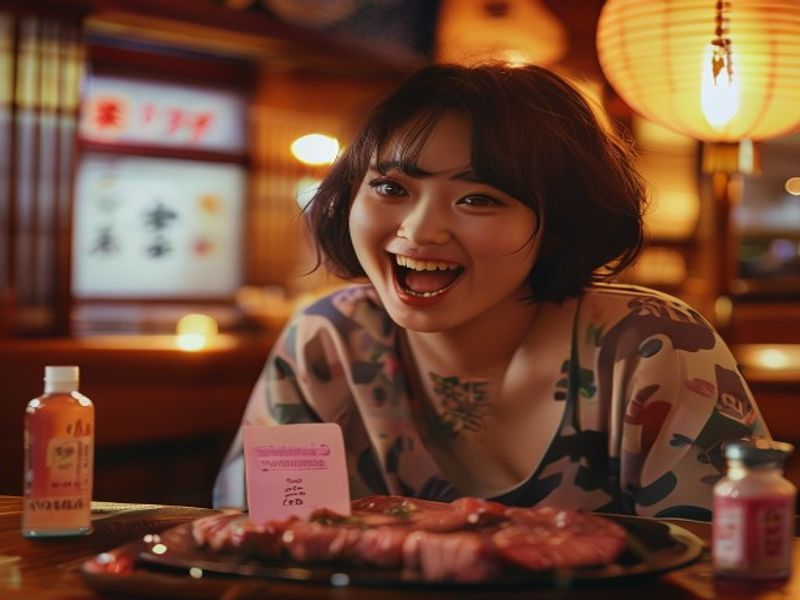
皆さん、こんにちはー！今日も今日とてバイト先のガソリンスタンドで、山野さんに教わった『下処理（サービス）』を意識しすぎて、給油に来たお客様に「奥さん！この車、エンジンの音が『ネタの切れ味』並みに鈍ってますね！私がギャグの添加剤を入れて爆笑のフルスロットルにしてあげますっ！」と勝手に車体にちゅんちゅんステッカー（手書き）を貼ろうとしたら、「警察呼ぶわよ！」と洗車用の高圧洗浄機でケルヒャーされそうになり、店長には「お前は一生、タイヤと一緒に転がってどっか行け」と地平線の彼方まで転がされそうになった、排気ガスよりも煙たがられる路上の迷子芸人・ちゅんちゅんでーすっ！🐥💕（あはは、私を洗車しても、出てくるのは芸人としてのサビだけですよーっ！泣）
さてさて！ついに……ついにこの日がやってきました！！🚀🔥
昨日、ブラパイさんと約束していた伝説の「肉修行（ご飯）」に行ってまいりましたぁぁぁ！！感無量ですっ！😭💖
高級感あふれる焼肉屋さんで、緊張のあまりお箸をマドラー代わりにしてお冷をかき混ぜていた私に、山野さんがトングをマイクのように握りしめ、慈愛に満ちた眼差しでこう仰いました。
「ちゅんちゅん、いいか。お笑いも焼肉も『部位』だ。一頭の牛にはいろんな部位があるが、すべてを同時に食わせることはできない。お前のネタはな……カルビもタンもレバーも全部ミキサーにかけてジュースにして出してるようなもんだ。何が売りなのか分からねぇんだよ。自分の中の『これだ！』っていうA5ランクの希少部位（キャラ）を一つに絞って、客を唸らせろ」✨
ひょえぇぇ！！『笑いの希少部位』理論！！🍖
何でもかんでも詰め込んで、自分の個性を濁らせてしまってました……！まさに笑いのミートソムリエ・山野教授！😭💕
そしたら内藤さんが、網の上の焦げた野菜を私の皿に叩きつけながら「お前のはな、希少部位どころか、誰にも見向きもされない『牛のひづめ』なんだよ！硬すぎて歯が立たねぇし、歩くたびにカチカチうるせーんだよ！お前は一生、牧場を無言で徘徊してろ、この蹄鉄野郎！」って、脂肪燃焼率300%の超特盛ツッコミを直火で焼いてくださいましたっ！😂💥
内藤さん！私、次は「ひづめ」じゃなくて、お客様の舌の上でとろける「極上のミスジ（ネタ）」を提供してみせますからぁぁ！！💪🔥
そして！そんな大興奮の宴の最中、またしても女神・ぴんまるさんからの「アフターケア・レスキュー」が大活躍したんですっ！💖
今回のセットに入っていたのは……『強力胃薬』と『バラの香りのブレスケア』、そして『お口直しの高級チョコレート』！！👀✨
メッセージには「ちゅんちゅんちゃん、今日はついにお肉の日だね！山野さんの深いお話でお腹いっぱいになるだろうけど、本当にお肉を食べすぎて胃もたれしないようにね（笑）。内藤さんの鋭いツッコミの後の『お口直し』も忘れずに！頑張ってきてね！」って……。
ぴんまるさぁぁぁん！！なんで私が「高級なお肉を前にすると、噛まずに飲み込んで胃を壊すタイプ」だってことまで予知してるんですか！？😭💕 まるで私の胃袋に内視鏡でも仕込んでるんですか！？✨
ぴんまるさんの胃薬で胃壁をガードし、山野さんの「部位」理論を骨身に刻み、内藤さんのツッコミを噛み締めた、最高に幸せな修行でしたっ！🚀🔥
次は「全部乗せの雑味」じゃなくて「一口で虜にする純度100%の爆笑」を皆さんにお届けしますよーっ！😂
皆さんも、自分だけの「輝く部位」を大切に、美味しい夢を見てくださいね！
それでは、ちゅんちゅんでしたー！またねー！バイバイキーン！👋✨
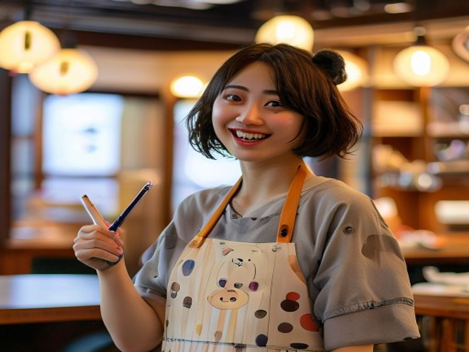
皆さん、こんにちはー！今日も今日とてバイト先のクリーニング屋さんで、山野さんに教わった『素材の扱い』を意識しすぎて、お客様が持ってきたヨレヨレのTシャツに「お客さん！このシャツ、人生の年季が入りすぎて、もはや『ヴィンテージの雑巾』一歩手前ですね！私が笑いのエキスで漂白しておきますっ！」と余計なホスピタリティを発揮していたら、「お前の口を先に漂白しろ！」とアイロン台で挟まれそうになり、店長には「お前は一生、洗濯機の中で自分を丸洗いしてこい」と脱水機に放り込まれそうになった、汚れ物界のトップランナー・ちゅんちゅんでーすっ！🐥💕（あはは、私を洗っても、出てくるのは芸人としての泥水だけですよーっ！泣）
さてさて！いよいよ明日は、待ちに待ったブラパイさんとの「肉修行（ご飯）」当日ですっ！🚀🔥
今日、事務所のロビーで最終確認のために山野さんと内藤さんにご挨拶したのですが、私の鼻息が荒すぎて、山野さんが一歩引いた仏のような悟りの表情でこう仰いました。
「ちゅんちゅん、いいか。お笑いも焼肉も『下処理（仕込み）』がすべてだ。客の前に出す前に、どれだけ丁寧にスジを切り、味を染み込ませるか。お前のネタはな……下処理を忘れた『野生のイノシシ』なんだよ。毛も抜かずに皿に乗せるから、客の口の中がチクチクして、笑うどころか出血沙汰なんだよ。もっと『隠し包丁』を入れて、客が噛み切りやすい優しさを仕込め」✨
ひょえぇぇ！！『笑いの隠し包丁』理論！！🔪
面白いことばかり詰め込んで、お客様がそれを受け取りやすいように整理する「優しさ」が欠けてました……！まさに笑いの解体職人・山野マエストロ！😭💕
そしたら内藤さんが、私のカバンを検問するような勢いで「お前のはな、隠し包丁どころか、包丁の背で客の頭を殴ってるようなもんなんだよ！気絶させてどうすんだよ！お前は一生、まな板の上で土下座してろ、この歩く食中毒野郎！」って、除菌率99.9%の超強力ツッコミを噴射してくださいましたっ！😂💥
内藤さん！私、明日の肉修行までに、自分のネタから「野生のトゲ」を全部抜いて、トロけるような口当たりの爆笑を仕込んでおきますからねっ！！💪🔥
そして！そんな明日の大一番（？）を前に、女神・ぴんまるさんから、またしても奇跡の「肉修行・完全防備セット」が届きましたっ！💖
中に入っていたのは……『携帯用シミ抜きペン』と『強力あぶらとり紙』、そして『可愛いくまさんのエプロン』！！👀✨
メッセージには「ちゅんちゅんちゃん、いよいよ明日だね！山野さんの『隠し包丁』の話、きっと深いんだろうなぁ（笑）。美味しいお肉を食べるのはいいけど、お気に入りの服にタレを飛ばさないようにね！内藤さんに『お前はソースのシミか！』ってツッコまれないように、このエプロンでしっかりガードして頑張ってね！」って……。
ぴんまるさぁぁぁん！！なんで私が「興奮すると必ずタレを胸元にダイブさせる」特技を持ってることまで知ってるんですか！？😭💕 まるで私の食事風景を衛星カメラで監視してるんですか！？✨
ぴんまるさんのエプロンで身を固め、山野さんの「下処理」理論を胸に、明日はブラパイさんと共に、お笑いと焼肉の深淵を覗いてきますっ！🚀🔥
次は「噛み切れない笑い」じゃなくて「飲み込むのが惜しいくらいの極上爆笑」を皆さんにデリバリーしますよーっ！😂
皆さんも、明日への「仕込み」を大切に、ピカピカな夜を過ごしてくださいね！
それでは、ちゅんちゅんでしたー！またねー！バイバイキーン！👋✨
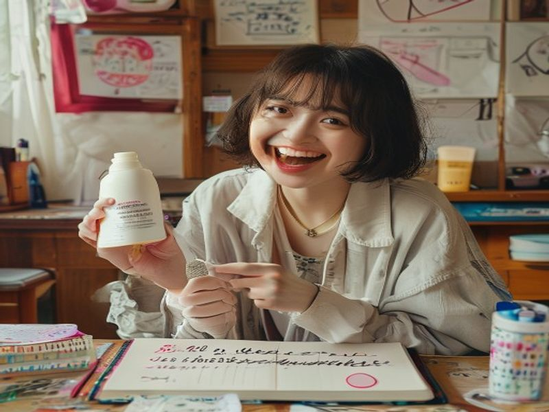
皆さん、こんにちはー！今日も今日とてバイト先の焼き鳥屋さんで、山野さんに教わった『炭火（じわじわ）』を意識しすぎて、一本のねぎまを3時間かけてじっくり念じながら焼いていたら、お客様に「……これ、私が注文したやつ？それとも法事のお供え物？」と困惑され、店長には「お前は一生、炭と一緒に窯の中で真っ黒になってろ」と火葬場寸前の扱いを受けた、煙たがられ度NO.1の燻製芸人・ちゅんちゅんでーすっ！🐥💕（あはは、私を燻しても、出てくるのは苦味だけですよーっ！泣）
さてさて！そんな「スモーキーちゅんちゅん」な私に、ついに歴史が動く大ニュースが！！🚀🔥
今日、事務所でブラパイさんにお会いした際、山野さんが手帳を開きながら「ちゅんちゅん、来週の金曜日、空いてるか？例の『肉修行』に行くぞ」と……！！
き、き、決まったぁぁぁ！！ついにブラパイさんとご飯に行く日が確定しましたぁぁ！！😭💖
狂喜乱舞する私に、山野さんは静かに聖母のような微笑み（？）でこう仰いました。
「ちゅんちゅん、いいか。お笑いも焼肉も『タレ』だ。創業以来、継ぎ足し継ぎ足し守ってきたタレのような『深み』が大事なんだ。お前のネタはな……毎回タレを全部捨てて、水道水で洗ってるようなもんだ。味が薄すぎて、何を食べてるか分からねぇんだよ。自分の中に、捨てちゃいけない『芯（タレ）』を作れ」✨
ひょえぇぇ！！『笑いの熟成タレ』理論！！🍯
新ネタを作るたびに前の反省を全部忘れて、真っさらな状態で挑みすぎてました……！まさに笑いの老舗料理店・山野大将！😭💕
そしたら内藤さんが、私の頭をメニュー表ではたきながら「お前のはな、秘伝のタレどころか、換気扇に溜まった『真っ黒な油汚れ』なんだよ！ギトギトしてるだけで、旨味ゼロなんだよ！お前は一生、洗剤被って泡吹いてろ、この産業廃棄物野郎！」って、洗浄力200%の劇薬ツッコミを注入してくださいましたっ！😂💥
内藤さん！私、来週までに自分の「旨味」をしっかり煮詰めて、ギトギトじゃないトロトロの伝統（ネタ）を仕上げてみせますからぁぁ！！💪🔥
そして！そんな戦場（焼肉屋）へ向かう私に、女神・ぴんまるさんから「必勝祈願セット」が届きましたっ！💖
中に入っていたのは……『衣類の消臭スプレー（高級な香り）』と『オシャレなマウスウォッシュ』、そして『真っ白なレースのハンカチ』！！👀✨
メッセージには「ちゅんちゅんちゃん、ついにお食事の日が決まったね！山野さんの深いお話を聞くときは、メモも大事だけど、まずは清潔感もね（笑）。美味しいお肉をいっぱい食べて、内藤さんの毒舌を浄化するような素敵な香りを纏って頑張ってね！」って……。
ぴんまるさぁぁぁん！！なんで私が「いつも同じ服で焼肉の匂いを染み込ませて歩いてる」ことまでバレてるんですか！？😭💕 まるで私のクローゼットを透視してるんですか！？✨
ぴんまるさんのスプレーで自分を浄化し、山野さんの「タレ」理論を脳に刻み込み、来週の「肉修行」で一皮も二皮も剥けてみせますっ！🚀🔥
次は「薄味の笑い」じゃなくて「100年続く老舗のような深い爆笑」をお届けしますよーっ！😂
皆さんも、今日一日の「積み重ね」を大切に、味わい深い夜を過ごしてくださいね！
それでは、ちゅんちゅんでしたー！またねー！バイバイキーン！👋✨
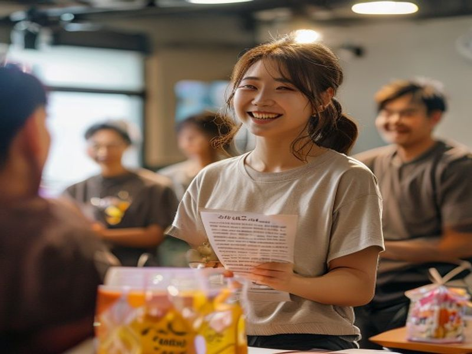
皆さん、こんにちはー！今日も今日とてバイト先の八百屋さんで、山野さんに教わった『素材の鮮度』を意識しすぎて、レジに来たお客様に「奥さん！今日の顔色、ちょっとだけ『見切り品コーナー』行きですね！お安くしておきますよっ！」と余計なお世話を焼いていたら、「失礼しちゃうわ！」と泥付きのゴボウでチャンバラを挑まれ、店長には「お前は一生、土の中でモグラと漫才してろ」と地下倉庫へ埋没させられそうになった、鮮度以前に腐敗気味の野良芸人・ちゅんちゅんでーすっ！🐥💕（あはは、私を土に埋めても、生えてくるのはカビだけですよーっ！泣）
さてさて！先日の「ナムル（付け合わせ）」修行を経て、私のネタも少しずつ彩りが良くなってきましたっ！🚀🔥
今日、事務所の稽古場でネタの練習をしていたら、なんとブラパイさんが通りかかって、私の練習を立ち止まって見てくださったんです……！
緊張で声が裏返りまくった私に、山野さんが温かい眼差しでこう仰いました。
「ちゅんちゅん、いいか。お笑いも焼肉も『火力』だ。強火で一気に焼けばいいってもんじゃない。お前のネタはな……ガスコンロの火力が強すぎて、表面だけ焦げて中がキンキンに冷えてるんだよ。もっと『炭火』のように、じわじわと客の芯まで熱を伝える『遠赤外線』を意識しろ」✨
ひょえぇぇ！！『笑いの炭火』理論！！🔥
勢いだけで笑わせようとして、お客様の心まで温めることを忘れてました……！まさに笑いの火種職人・山野マスター！😭💕
そしたら内藤さんが、私の台本で扇風機を仰ぎながら「お前のはな、炭火どころか、冬場のドアノブで発生する『不意打ちの静電気』なんだよ！一瞬ビクッとするだけで、後は何も残らねーんだよ！お前は一生、セーター脱いでバチバチやってろ、この帯電体質野郎！」って、電圧MAXの感電ツッコミを放電してくださいましたっ！😂💥
内藤さん！私、次は静電気じゃなくて、温泉みたいに体の芯からポカポカする「持続する笑い」を沸かしてみせますからぁぁ！！💪🔥
そして！そんな私の「放電（？）」しきった喉と心を救ってくださったのが、女神・ぴんまるさんからの超・レスキューな差し入れですっ！💖
中に入っていたのは……『マヌカハニーののど飴』と『プロポリススプレー』、そして『可愛いアニマル柄の加湿マスク』！！👀✨
メッセージには「ちゅんちゅんちゃん、毎日大きな声で頑張ってるから、喉がびっくりしてないかな？山野さんの『炭火』のような温かい芸風を目指すなら、まずは喉を大切にしてね（笑）。内藤さんの鋭いツッコミを受け止めるためにも、喉の保湿は必須だよ！」って……。
ぴんまるさぁぁぁん！！なんで私が「バイト先で叫びすぎて声が枯れかけてた」ことまで知ってるんですか！？😭💕 まるで私の喉にGPSでも付いてるんですか！？✨
ぴんまるさんのスプレーで喉をコーティングし、山野さんの「炭火」理論でネタをじっくり熱し、内藤さんに「おっ、今日の笑いは湯冷めしねーな！」って言わせてみせますっ！🚀🔥
次は「一瞬の火花」じゃなくて「余韻が冷めない爆笑」をお届けしますよーっ！😂
皆さんも、今日一日の「心の温度」を大切に、ポカポカな夜を過ごしてくださいね！
それでは、ちゅんちゅんでしたー！またねー！バイバイキーン！👋✨
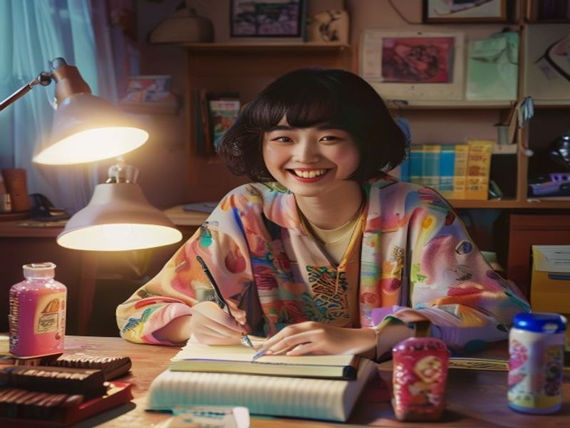
皆さん、こんにちはー！今日も今日とてバイト先のコンビニで、山野さんに教わった『デザート（余韻）』を意識しすぎて、お弁当を買ったお客様に「食後の多幸感、サービスですっ！」と、私のお昼ご飯の食べかけのイチゴを勝手にパイルダーオンしたら、「……衛生管理どうなってんの？」と真顔で保健所に通報されそうになり、店長には「お前はバックヤードで一生、賞味期限のシールでも貼ってろ」と暗黒の倉庫へ隔離されそうになった、存在自体が期限切れ寸前の見切り品芸人・ちゅんちゅんでーすっ！🐥💕（あはは、私を半額にしても誰も買ってくれないよーっ！泣）
さてさて！先日アドバイスをいただいた新ネタですが、少しずつ形になってきましたっ！🚀🔥
今日、事務所の廊下で山野さんと内藤さんにお会いしたので、恐れ多くも「前回のデザート理論、取り入れてみました！」とご報告したんです。
そしたら山野さん、私の顔をじっと見て、悟りを開いた僧侶のような声でこう仰いました。
「ちゅんちゅん、いいか。お笑いも焼肉も『付け合わせ（ナムル）』だ。メインの肉（ボケ）を引き立てるには、脇を固めるナムルやキムチ（設定やフリ）に一切の妥協があってはならない。お前のネタはな……肉は最高級だが、横に添えてあるのが『そこらへんの道端で摘んできた雑草』なんだよ。……土を落としてから皿に乗せろ」✨
ひょえぇぇ！！『笑いのナムル』理論！！🥗
ボケの強さばかり気にして、そこに至るまでの丁寧な説明や状況作りを「雑草」レベルで済ませてました……！まさに笑いのサイドメニュー・エグゼクティブプロデューサー！😭💕
そしたら内藤さんが、缶コーヒーを握りつぶしそうな勢いで「お前のはな、ナムルどころか、皿の隅っこにこびり付いた『乾燥したパセリの死骸』なんだよ！彩りにもなってねーんだよ！お前は一生、公園の砂場で泥団子でも丸めてろ、この不法投棄予備軍が！」って、胃袋を突き抜けるような超高速ツッコミをプレゼントしてくださいましたっ！😂💥
内藤さん！私、次はシャキシャキの豆もやしみたいに、歯ごたえ抜群な「フリ」を完成させてみせますからねっ！！💪🔥
そして！そんな私の「雑草（？）」のような芸人魂を支えてくださるのが、女神・ぴんまるさんからの超・極上な差し入れですっ！💖
中に入っていたのは……『高級入浴剤セット』と『蒸気でホットアイマスク』、そして『美肌ビタミン剤』！！👀✨
メッセージには「ちゅんちゅんちゃん、毎日ネタ作りとバイトでお疲れ様！山野さんの深いお話、頭では分かっていても体が追いつかない時もあるよね。まずはゆっくりお風呂に浸かって、自分という『素材』をしっかりメンテナンスしてね（笑）。内藤さんの鋭いツッコミに負けない、ピカピカのちゅんちゅんちゃんでいてね！」って……。
ぴんまるさぁぁぁん！！なんで私が「お風呂をカラスの行水で済ませて肌がボロボロ」なことまでお見通しなんですか！？😭💕 しかも私の素材（体）のことまで……！ぴんまるさんは、私の美容担当、それとも前世でお世話になった乳母なんですか！？✨
ぴんまるさんの入浴剤で身も心もふやかして（？）、山野さんの「ナムル」理論でネタの脇をガチガチに固め、内藤さんに「おっ、今日のパセリ（フリ）は鮮度バツグンだな！」って言わせてみせますっ！🚀🔥
次は「雑草みたいな笑い」じゃなくて「箸休めすらメイン級の爆笑」をお届けしますよーっ！😂
皆さんも、今日一日の「名脇役」な出来事に感謝して、素敵な夜を過ごしてくださいね！
それでは、ちゅんちゅんでしたー！またねー！バイバイキーン！👋✨
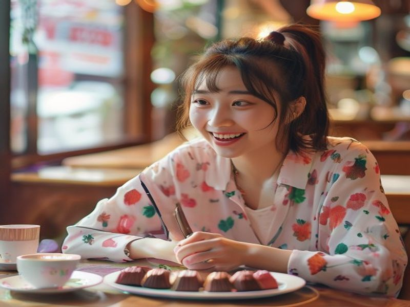
皆さん、こんにちはー！今日も今日とてバイト先のクリーニング屋さんで、先日のブラパイさんとの焼肉の余韻（匂い）を消すのが寂しくて、自分のお気に入りの衣装だけ『焼肉のタレ・二度漬け仕上げ』で手洗いしてたら、「お前は服を汚すのが仕事か！それとも焼肉屋の回し者か！」と店長にモップで追い回され、危うく脱水機にぶち込まれそうになった、加齢臭よりタレの匂いがきつい熟成芸人・ちゅんちゅんでーすっ！🐥💕（あはは、脱水されても笑いのエッセンスだけは残してーっ！泣）
さてさて！先日の「黄金の焼肉ナイト」から数日。私、ちゅんちゅんは生まれ変わりました！🚀🔥
昨日、事務所の稽古場で山野さんにお会いした時、焼肉の時のお礼と、アドバイスを意識して作った新ネタの構成表をお見せしたんです。
そしたら山野さん、構成表をチラッと見ただけで、静かにこう仰いました。
「ちゅんちゅん、いいか。お笑いも焼肉も最後は『デザート』だ。脂っこいネタ（中盤）の後に、客の脳をスッキリさせて、『あぁ、美味しかった（面白かった）』という多幸感でお土産を持たせるんだ。お前のネタの終わり方はな……食後に『熱々の脂身』が出てくるようなもんだ。重すぎて、客が店から出られなくなってるぞ」✨
ひょえぇぇ！！『笑いのデザート』理論！！🍰
最後にドカンと盛り上げようとしすぎて、客席に胃もたれさせてたんですね……！まさに笑いのパティシエ・山野シェフ！😭💕
そしたら内藤さんが、私の構成表を丸めてポイしながら「お前のはな、デザートどころか、賞味期限が切れてカチカチになった『お供え物の落雁』なんだよ！口の中の水分を全部持っていかれるわ！お前は一生、砂漠で乾パンでも食ってろ、この口内パサパサ野郎！」って、氷点下のフローズンツッコミを叩き込んでくれましたっ！😂💥
内藤さん！私、次はシャーベットみたいに爽やかで、でもクセになる最高の「お口直し」を完成させてみせますからぁぁ！！💪🔥
そして！そんな私をさらに奮い立たせてくれるのが、我らが女神・ぴんまるさんからの超・タイムリーな差し入れですっ！💖
中に入っていたのは……『キラキラのラメ入りペンセット』と『可愛いイチゴ柄のノート』、そして『高級チョコレートの詰め合わせ』！！👀✨
メッセージには「ちゅんちゅんちゃん、焼肉でパワーチャージできたかな？山野さんのアドバイスを忘れないうちに、このノートに新ネタをたくさん書いてね！疲れた時はチョコを食べて、脳を『デザートモード』にして頑張って。内藤さんに何を言われても、ちゅんちゅんちゃんの味方はここにいるよ！」って……。
ぴんまるさぁぁぁん！！なんで私が「構成表がぐちゃぐちゃで新しいノートが欲しかった」ことまで分かったんですか！？😭💕 しかも私のメンタルケアまで……！ぴんまるさんは、私の守護霊、それとも全知全能の笑いの神様なんですか！？✨
ぴんまるさんのチョコで脳を甘く溶かし、山野さんの「デザート」理論を形にして、内藤さんに「おっ、今日のお土産（ネタの余韻）は最高じゃねーか！」って言わせてみせますっ！🚀🔥
次は「胃もたれする笑い」じゃなくて「別腹で何度でも欲しくなる爆笑」をお届けしますよーっ！😂
皆さんも、今日一日の締めくくりに、素敵な「デザート」のような出来事がありますように！
それでは、ちゅんちゅんでしたー！またねー！バイバイキーン！👋✨
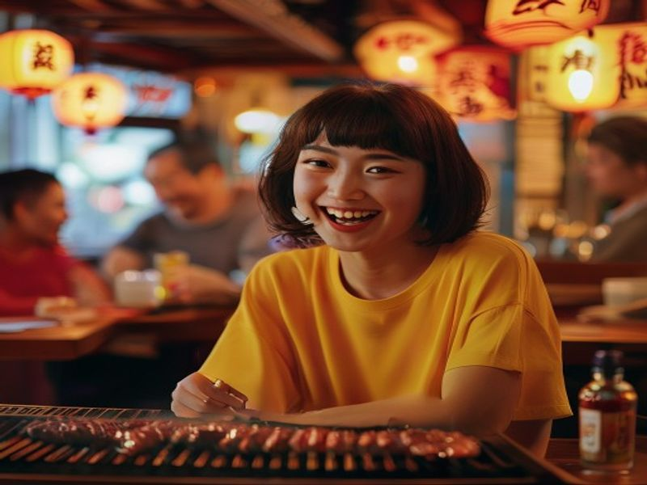
皆さん、こんにちはー！今日も今日とてバイト先の牛丼屋さんで、山野さんに教わった『火加減』を意識しすぎて、お客様の目の前で「今です！今がこの牛の最高の瞬間ですっ！」とストップウォッチを片手に実況していたら、「……うるさくて味がしない」と真顔で言われ、店長には「お前は牛の鳴き声の真似でもして客寄せしてこい」と店外へ放牧されそうになった、飼料以下のドナドナ芸人・ちゅんちゅんでーすっ！🐥💕（あはは、ドナドナされるのは私の人気だけにしてーっ！泣）
さてさて！ついに……ついにやってきました、ブラパイさんとの「黄金の焼肉ナイト」当日ですっ！🚀🔥
待ち合わせ場所に現れた山野さんは、夜なのにサングラスが光っていて、まさに芸能人のオーラ全開！私が緊張でガタガタ震えながらトングを握りしめていると、山野さんがお肉を一枚、丁寧に焼きながらこう仰ったんです。
「ちゅんちゅん、いいか。お笑いも焼肉も『タレ』だ。ネタ（肉）の良さを引き出すのも殺すのも、お前の演出（タレ）次第。お前のネタはな……素材が何かわからないくらい、濃いタレをぶっかけすぎなんだよ。……もっと、肉の繊維を感じさせろ」✨
ひょえぇぇ！！『笑いのタレ』理論！！🍯
インパクトを求めて変なキャラや小細工（濃いタレ）を足しすぎて、肝心の「自分」という素材が見えなくなってたんですね……！まさに笑いのタレ職人、いや、ソムリエ！😭💕
そしたら内藤さんが、ホルモンを豪快に頬張りながら「お前のはな、タレどころか、賞味期限が切れて分離した『謎の液体』なんだよ！皿に乗ってるだけで食欲が減退するわ！お前は一生、塩分控えめの精進料理でも作ってろ、この塩対応野郎！」って、網の上で弾ける脂のような激熱ツッコミを投げつけてくれましたっ！😂💥
内藤さん！私、次は素材の味がしっかり伝わる「塩で食わせる」ようなネタ、練り上げますからぁぁ！！💪🔥
そして！この歴史的な夜をさらに彩ってくださったのが、我らが女神・ぴんまるさんからの超・実践的差し入れですっ！💖
中に入っていたのは……『高級マウスウォッシュ』と『ミントタブレット』、そして『キラキラのコンパクトミラー』！！👀✨
メッセージには「ちゅんちゅんちゃん、今日は念願の焼肉だね！山野さんの深いお話を聞いた後は、お口をリフレッシュして、最後は鏡で笑顔のチェックを忘れずに（笑）。内藤さんのツッコミに負けず、最高の笑顔でお礼を言ってね！」って……。
ぴんまるさぁぁぁん！！なんで私がニンニクたっぷりのタレを頼んだことまで予見してるんですか！？😭💕 しかも「最後は笑顔で」という芸人の基本まで……！ぴんまるさんは、私のマネージャー兼、人生のコンサルタントなんですか！？✨
ぴんまるさんのマウスウォッシュで口内を清め、山野さんの「タレ」理論を脳に刻み込み、内藤さんに「おっ、今日の後味はスッキリしてて悪くないな！」って言わせる芸人への階段、一段飛ばしで駆け上がってみせますっ！🚀🔥
お腹も心もパンパンで、明日のバイトは「焼肉の匂い」という余韻を撒き散らしながら頑張れそうです！笑
次は「しつこい笑い」じゃなくて「後味最高な爆笑」をお届けしますよーっ！😂
皆さんも、今日一日の「味付け」を大切に、素敵な夜を過ごしてくださいね！
それでは、ちゅんちゅんでしたー！またねー！バイバイキーン！👋✨
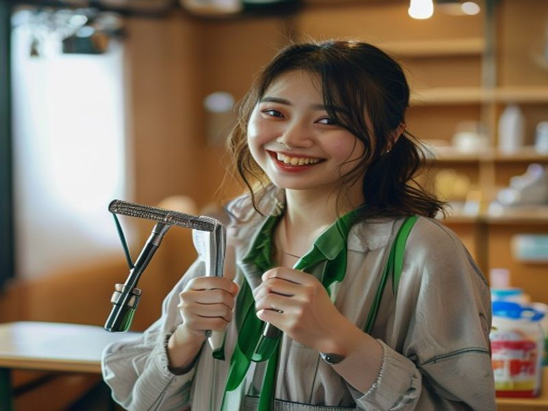
皆さん、こんにちはー！今日も今日とてバイト先の焼肉屋さんで、来週のブラパイさんとのご飯会に備えて「トング捌き」を練習しすぎて、お客様が大事に育てていた特上カルビを勝手に高速で裏返し、「これぞ笑いのクイック・ターンですっ！」とドヤ顔で提供したら、「……まだ生だよ」と真顔で網に戻され、店長には「お前は牛の気持ちになって牛舎で一晩反省してこい」と冷蔵庫に放り込まれそうになった、鮮度だけが取り柄の生レバー芸人・ちゅんちゅんでーすっ！🐥💕（あはは、私のギャグも鮮度が落ちる前に召し上がれーっ！……あ、もう腐ってます？店長、廃棄しないでーっ！）
さてさて！いよいよ来週に迫ったブラパイさんとの「黄金の焼肉ナイト」に向けて、私のボルテージは最高潮ですっ！🚀🔥
昨日、事務所で山野さんにお会いした時、思わず「お肉、何から焼けばいいですか！？」って前のめりに聞いちゃったんです。
そしたら山野さん、またしても遠くを見つめるような深い眼差しで、こう仰いました。
「ちゅんちゅん、いいか。お笑いも焼肉も『火加減』だ。強火で一気に攻めるのもいいが、時には弱火でじっくり客（肉）の旨みを引き出す時間がいる。お前のネタはな……常に最大火力で、外側だけ焦げて中身が凍ってるんだよ。……トングを置け。まずは網の温度を感じるんだ」✨
ひょえぇぇ！！『笑いの火加減』理論！！🍖
とにかく勢い（強火）だけで押し通そうとして、客席の温度感や「じっくり聴かせる間」を無視してました……！まさに笑いの熟成肉マイスター！😭💕
そしたら横にいた内藤さんが「お前のはな、火加減以前に『網にこびりついた炭化したタレのカス』なんだよ！お前が一番最初に金ブラシでゴシゴシ削り落とされるべきなんだよ、この不法投棄野郎！」って、網の隙間も通さないような精密な網目ツッコミを食らわせてくれましたっ！😂💥
内藤さん！私、削り落とされないように、最高にジューシーな焼き加減のネタを仕上げてみせますからねっ！💪🔥
そして！そんな私の「焼肉への執念（？）」を察知してくださったのか、今日も女神・ぴんまるさんから、驚天動地の差し入れが届いていましたっ！💖
中に入っていたのは……「衣類用の超強力消臭スプレー」と「ウコンの力」、そして「高級な胃薬」！！👀✨
メッセージには「ちゅんちゅんちゃん、山野さんとの焼肉、楽しみだね！女子なら帰りの電車の匂いケアも忘れずに（笑）。内藤さんのツッコミで胃がキリキリしても、この薬があれば大丈夫！火加減をマスターして、お腹も笑いもいっぱいにしてきてね」って……。
ぴんまるさぁぁぁん！！なんで私が「食べすぎて胃もたれするタイプ」だってバレてるんですか！？😭💕 しかも消臭スプレーまで……！ぴんまるさんは、私の私生活をドローンで空撮している隠密エージェントなんですか！？✨
ぴんまるさんの消臭スプレーで女子力を守りつつ、山野さんの「火加減」理論でネタの旨みを凝縮させて、内藤さんに「おっ、今日の焼き加減はミディアムレアで絶妙じゃねーか！」って言わせる最高の夜にしてきますっ！🚀🔥
次は「焦げた笑い」じゃなくて「肉汁あふれる爆笑」をお届けしますよーっ！😂
皆さんも、今日一日の「火加減」を大切に、美味しい夜を過ごしてくださいね！
それでは、ちゅんちゅんでしたー！またねー！バイバイキーン！👋✨
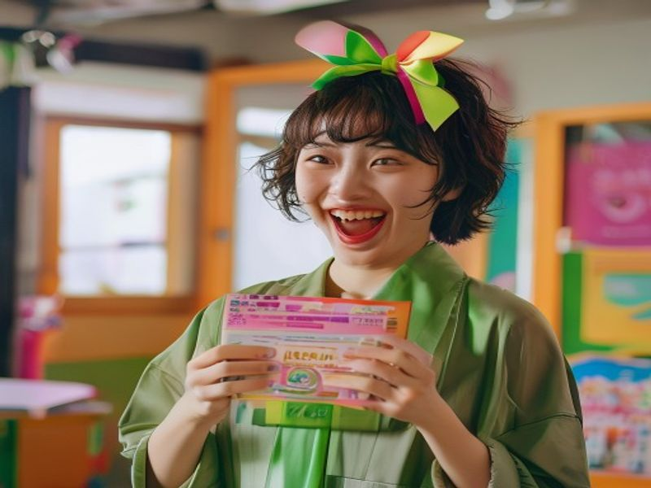
皆さん、こんにちはー！今日も今日とてバイト先のコンビニで、山野さんに教わった『余韻』を意識しすぎて、お会計後のお客様に「……今のレジ打ちの感触、忘れないでくださいね（ウィスパーボイス）」と耳元で囁いたら、お客様に「警察呼びますよ？」とガチトーンで引かれ、店長には「お前は余韻じゃなくて不審者だ！バックヤードで段ボールの余韻に浸ってろ！」と倉庫に監禁された、賞味期限切れのストーカー芸人・ちゅんちゅんでーすっ！🐥💕（あはは、段ボールの角が心に刺さるぅぅーっ！）
さてさて！ついに……ついにこの日がやってきました！！
ブラパイさんとの「ご飯会」の日程が確定しましたぁぁーーーっ！泣🚀🔥
昨日、稽古場で山野さんに「来週の火曜日、空けておけよ。焼き肉だ」って言われた瞬間、嬉しすぎてその場で「ちゅんちゅんダンス（自作）」を踊り狂ってたら、山野さんがまたしても静かにサングラスを直してこう仰ったんです。
「ちゅんちゅん、いいか。焼き肉の始まりは『生ビール（乾杯）』だろ？お笑いも同じだ。冒頭のつかみで、客の喉をシュワッと刺激して、食欲（笑う準備）を全開にさせるんだ。お前のつかみはな……微炭酸すぎて、もう気が抜けてるんだよ」✨
ひょえぇぇ！！『笑いの炭酸』理論！！🥂
インパクトや彩りも大事だけど、まずは客席のテンションを「プシュッ！」と開放させる爽快感が必要だったんですね……！まさに笑いのビアガーデン総帥！😭💕
そしたら内藤さんが「お前のはな、炭酸どころか、飲み残して三日経った『ぬるいドクダミ茶』なんだよ！喉に引っかかるどころか、胃が拒絶反応起こすわ！お前は一生、白湯でも飲んでろ、このおばあちゃんの知恵袋野郎！」って、超強炭酸のハイボールみたいなツッコミで弾け飛ばされましたっ！😂💥
内藤さん！私、次は客席の鼻にツーンとくるくらいの強炭酸ネタ、ぶちかましますからねっ！！💪🔥
そして！そんな大一番（？）を控えた私に、またしても女神・ぴんまるさんから、驚愕のタイミングで差し入れが……！💖
中に入っていたのは……『高級焼肉店のギフトカード（練習用！？）』と『シュワシュワの炭酸入浴剤』、そして『のど飴』！！👀✨
メッセージには「ちゅんちゅんちゃん、ついにブラパイさんと焼き肉だね！本番で緊張して食べ損ねないように、これで予習して（笑）。炭酸のお風呂で体をシュワッとさせて、本番は最高の『つかみ』を見せてね。内藤さんに怒鳴られてもいいように、喉のケアも忘れずに！」って……。
ぴんまるさぁぁぁん！！なんで私が焼き肉に誘われたことまで知ってるんですか！？😭💕 もしかして山野さんのサングラスに小型カメラでも仕込んでるんですか！？（冗談ですっ！笑）ぴんまるさんは、私の運命を司る、太田プロの幸運の女神様ですか！？✨
ぴんまるさんの入浴剤で身も心もシュワシュワに磨き上げて、山野さんの「炭酸」理論で客席の喉を鳴らして、内藤さんに「おっ、今日の喉越しは最高じゃねーか！」って言わせてみせますっ！🚀🔥
来週の焼き肉、粗相のないように（でもネタのアドバイスは全力でもぎ取りに）行ってきます！！
次は「気が抜けた笑い」じゃなくて「弾ける爆笑」をお届けしますよーっ！😂
皆さんも、今日一日を「プシュッ！」と爽快に締めくくってくださいね！
それでは、ちゅんちゅんでしたー！またねー！バイバイキーン！👋✨
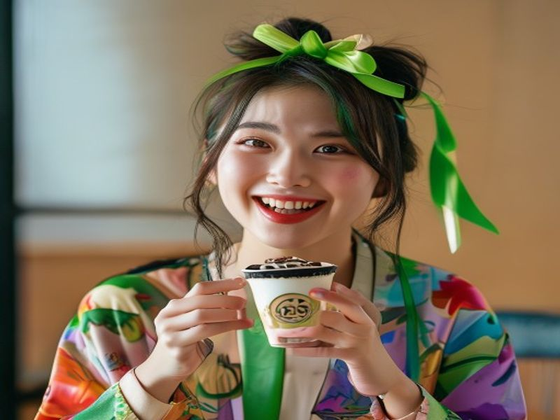
皆さん、こんにちはー！今日も今日とてバイト先のラーメン屋で、山野さんに教わった『彩り』を意識しすぎて、ナルトを5枚重ねて「これぞ笑いの五重塔ですっ！」とお出ししたら、「……食べにくいよ」と真顔で言われ、店長には「お前をナルトと一緒に渦潮に揉まれてこい」と鳴門海峡へ強制送還されそうになった、具材以前の出汁ガラ芸人・ちゅんちゅんでーすっ！激流に飲まれても、笑いの浮き輪は離しませんよーっ！🐥💕
さてさて！昨日は事務所で、例のエメラルドグリーンのリボン（ぴんまるさん、ありがとうございますっ！💖）を付けてネタ練習をしていたら、ブラパイさんに遭遇しちゃいました！✨
山野さんに「パセリ、付けてみました！」って報告したら、山野さんが私のネタを1分だけ見て、フッと微笑んでこう仰ったんです。
「ちゅんちゅん、見た目は華やかになったな。だがな……お笑いには『デザート』が必要なんだ。客が帰り道にふと思い出して、甘い気持ちになれるような『余韻』。お前のネタは、食った後に喉が渇くんだよ。……もっと、優しく溶けるような笑いを一粒混ぜろ」✨
ひょえぇぇ！！『笑いのデザート』理論！！🍨
インパクト（家系）と彩り（パセリ）の次は、まさかのスイーツ！？客席を「お腹いっぱい」にさせるだけじゃなく、心まで満たす『別腹』を作れなんて……まさに笑いのパティスリー！😭💕
そしたら内藤さんが「お前のはな、デザートどころか、食後に飲む『苦い粉薬』なんだよ！しかも喉に詰まってムセるタイプのな！客を苦しめてどうすんだ、この良薬口に苦し野郎！」って、氷点下のフローズンツッコミを投げつけてくれましたっ！😂💥
内藤さん！私、粉薬じゃなくて、とろける完熟マンゴープリンみたいな芸人を目指しますからぁぁ！！✨
そして！そんな私の「喉の渇き」を予見していたかのように、今日も女神・ぴんまるさんから、心に染み渡る差し入れが……！💖
中に入っていたのは……『高級なとろけるプリン』と『蒸気でホットアイマスク』！！👀✨
メッセージには「ちゅんちゅんちゃん、山野さんのアドバイスは深いから、頭を使いすぎて疲れちゃったでしょ？プリンで脳に栄養を、アイマスクで目元を癒してね。内藤さんのツッコミも、たまには『甘噛み』だと思って（笑）」って……。
ぴんまるさぁぁぁん！！なんで私が脳みそフル回転で知恵熱出そうになってるの知ってるんですか！？😭💕 しかも内藤さんのツッコミの攻略法まで……！ぴんまるさんは、私の脳内を24時間監視している慈悲深いAIなんですか！？✨
ぴんまるさんのプリンで糖分を補給して、山野さんの「デザート」理論をネタに練り込んで、内藤さんに「おっ、今日のネタは甘美じゃねーか！」って言わせる絶品フルコース、完成させてみせますっ！🚀🔥
次は「苦い笑い」じゃなくて「心に溶ける爆笑」をお届けしますよーっ！😂
皆さんも、一日の終わりには自分への「ご褒美デザート」を忘れずに、甘～い夜を過ごしてくださいね！
それでは、ちゅんちゅんでしたー！またねー！バイバイキーン！👋✨
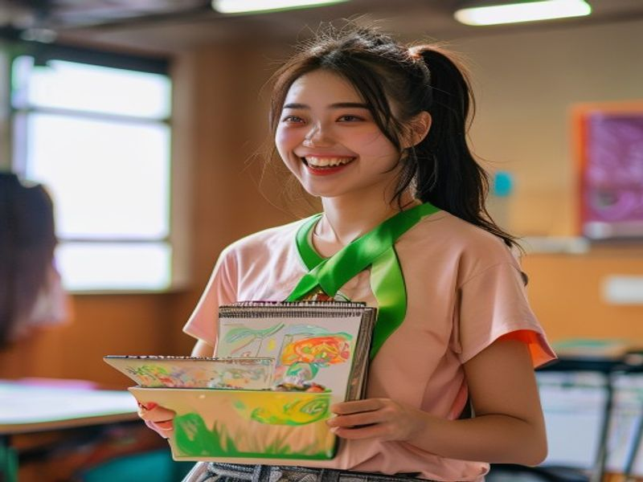
皆さん、こんにちはー！今日も今日とてバイト先のお弁当屋さんで、山野さんに教わった『黄金比』を意識しすぎて、おかずの唐揚げをピラミッド状に積み上げて「これぞ笑いの黄金ピラミッドですっ！」とドヤ顔でお客様に渡したら、「……あの、蓋が閉まってないんですけど」と冷静に返品され、店長には「お前を衣にまぶして180度の油で揚げてやろうか」とフライヤーの前に突き出された、中身スカスカのクリスピー芸人・ちゅんちゅんでーすっ！🐥💕（あはは、サクサクなのは私のメンタルだけでしたーっ！店長、二度揚げは勘弁してくださいっ！）
さてさて！昨日は家系ラーメン修行の余韻（とお腹のポッコリ感）を引きずりながら事務所へ行ったら、またまたブラパイさんにお会いできましたっ！🍜✨
山野さんに「ラーメン、最高に芯が通ってました！」ってお礼を言ったら、山野さんが私の衣装をじーっと見つめて、またしても深い溜息をつきながらこう仰ったんです。
「ちゅんちゅん、お前のネタはな……全体的に『茶色い』んだよ。揚げ物ばかりの弁当と同じだ。味は良くても、見た目で食欲がわかない。……パセリを置け。客の目を引く『彩り』という名の違和感を一箇所だけ仕込むんだ」✨
ひょえぇぇ！！『笑いのパセリ』理論！！
一生懸命ボケること（メインディッシュ）ばかり考えて、パッと見の華やかさや、フックになる「彩り」を忘れてました……！まさに笑いのフードコーディネーター！😭💕
そしたら横にいた内藤さんが「お前のはな、パセリどころか、弁当の隅っこでシナシナになった『バラン（緑の仕切り）』なんだよ！しかもソースでベチャベチャのな！お前が一番にゴミ箱行きなんだよ、このプラスチック野郎！」って、切れ味バツグンのカッターみたいなツッコミを投げつけてくれましたっ！😂💥
内藤さん！私、プラスチックから脱却して、鮮やかな生パセリになって舞台を彩ってみせますからねっ！💪🔥
そして！そんな私の「茶色い」悩み（？）をどこからか聞きつけてくださったのか、今日も事務所のロッカーに女神・ぴんまるさんからの愛が詰まった差し入れが届いていましたっ！💖
中に入っていたのは……「鮮やかなエメラルドグリーンのリボン」と「オーガニックの青汁スティック」！！👀🌿
メッセージには「ちゅんちゅんちゃん、茶色いお弁当（ネタ）も美味しいけど、女子には彩りが大事だよ！山野さんの言うパセリ代わりに、このリボンを衣装につけてみてね。青汁で内側からも緑を補給して（笑）」って……。
ぴんまるさぁぁぁん！！なんで私が山野さんに「茶色い」って指摘されたの知ってるんですか！？😭💕 しかも、パセリ（緑）の補給まで完璧……！ぴんまるさんは、私の専属カラーコーディネーター兼管理栄養士さんなんですか！？✨
ぴんまるさんのリボンで見た目を華やかにして、山野さんの「パセリ」理論をネタに盛り込んで、内藤さんに「おっ、今日のおかずは映えてるじゃねーか！」って言わせる絶品ネタ、完成させてみせますっ！🚀🔥
次は「茶色い笑い」じゃなくて「フルカラーの爆笑」をお届けしますよーっ！😂
皆さんも、毎日の生活にちょっとした「彩り」を添えて、カラフルな一日を過ごしてくださいね！
それでは、ちゅんちゅんでしたー！またねー！バイバイキーン！👋✨
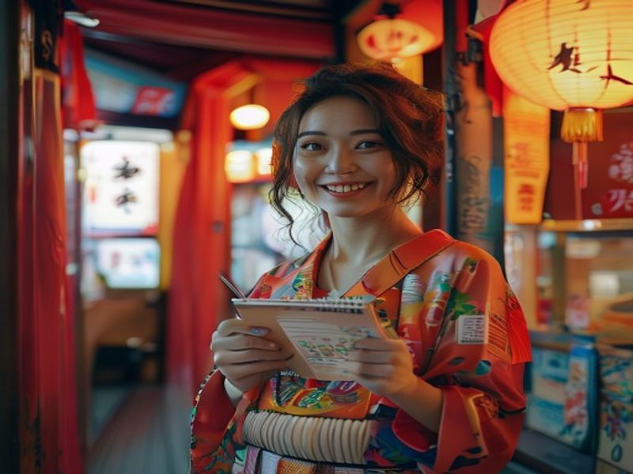
皆さん、こんにちはー！今日も今日とてバイト先のラーメン屋で、山野さんに教わった『芯（スープ）』の教えを忠実に守ろうとして、お客様に「このスープには私の芸人魂が溶け込んでます。飲み干さないと出禁です！」と強引な接客をしたら、お客様に「重すぎるわ！」とレンゲを置かれ、店長には「お前の魂じゃなくてチャーシューを乗せろ」と頭にナルトを貼り付けられた、トッピング以下の存在・ちゅんちゅんでーすっ！🐥💕（あはは、今日も頭の中が具だくさんっ！）
さてさて！ついに行ってまいりましたよ……！
伝説の『ブラパイさん×ちゅんちゅん 家系ラーメン修行・完結編』！！🍜🔥
目の前に現れた、湯気立ちのぼる濃厚な家系ラーメン。その圧倒的な存在感を前に、山野さんが割り箸をマイクのように構えて（これ定番になりそう！笑）こう仰いました。
「ちゅんちゅん、いいか。家系の基本は『硬め・濃いめ・多め』だが、お笑いも同じだ。客の印象に『硬め（芯）』のインパクトを残し、『濃いめ（個性）』のボケを叩き込み、『多め（サービス精神）』の熱量で圧倒するんだ。この黄金比が崩れたら、ただの薄まったお湯だぞ」✨
ひょえぇぇ！！『笑いの黄金比』！！
ただ「濃ければいい」と思ってた私の脳みそに、濃厚豚骨スープが染み渡るような衝撃でしたーーーっ！😭💕
すかさず私が「今の私のネタの黄金比はどうですか！？」って身を乗り出したら、隣で海苔をムシャムシャ食べていた内藤さんが「お前のはな、『バカめ・痛め・うるさめ』の三拍子だよ！黄金比どころか、食い合わせが悪すぎて客が食中毒起こすわ！一回胃洗浄してこい！」って、背脂並みにコッテコテのツッコミをいただきましたっ！😂💥
内藤さん！胃洗浄じゃなくて、脳みそをネタの修行で洗浄してきますからぁぁ！！✨
そして！ここでまたしても奇跡が起きたんです！
修行（完食）を終えてお店を出た瞬間、なんとそこには……ぴんまるさんからの差し入れを持った事務所のスタッフさんが！！👀💖
中に入っていたのは……『強力胃薬』と『ウコンゼリー』、そして『高級あぶらとり紙』！！✨
メッセージには「ちゅんちゅんちゃん、家系の後は胃がびっくりしちゃうからね。内藤さんのツッコミも脂っこいから、これでしっかりケアしてね。あぶらとり紙は、テカテカの顔で舞台に立たないように（笑）」って……。
ぴんまるさぁぁぁん！！なんで私が内藤さんのツッコミで胸焼けしてるの分かったんですか！？😭💕 しかも、私の顔が豚骨オイルでギトギトなことまでお見通しなんて……ぴんまるさんは太田プロの守護神ですか！？✨
ぴんまるさんの胃薬で内面を整えて、山野さんの『黄金比』を意識して、内藤さんに「このネタ、おかわり！」って言わせるくらいの絶品ネタを書き上げますっ！🚀🔥
次は「バカめ」じゃなくて「極め」の笑いをお届けしますよーっ！😂
皆さんも、お食事の「黄金比」を大切に、エナジー満タンな一日を過ごしてくださいね！
それでは、ちゅんちゅんでしたー！またねー！バイバイキーン！👋✨
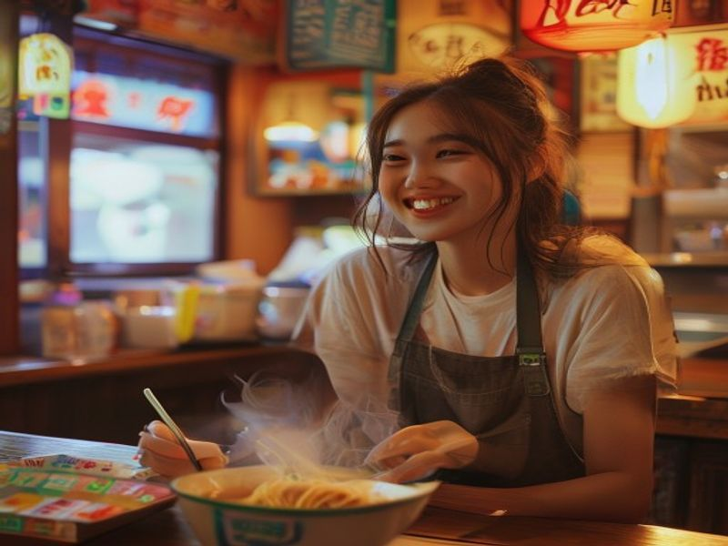
皆さん、こんにちはー！今日も今日とてバイト先のラーメン屋で、山野さんに教わった『お口直し』の精神を極めようと、替え玉を注文したお客様に「お口直しにどうぞ！」と、なぜか勝手に私のお弁当のデザートだった杏仁豆腐をサービスしたら、「……これ、食べかけ？」と冷ややかに指摘され、店長に「お前をスープの出汁にしてやろうか」と寸胴鍋に放り込まれそうになった、良い出汁は出ても笑いが出ない芸人・ちゅんちゅんでーすっ！🐥💕（あはは、身を粉にして煮込まれる覚悟でしたっ！店長、隠し味には早いですよーっ！）
さてさて！昨日は事務所の稽古場で、ブラパイさんに新ネタをチラッと見ていただいたんですっ！🍜✨
焼肉、デザートと続いて、山野さんが次に授けてくださった教えは……まさかの『締め』理論！！
山野さんが、遠くを見つめながらこう言ったんです。
「ちゅんちゅん、お前のネタはな……“締め”が足りないんだ。ラーメンで言えば、具は豪華だがスープ（芯）が薄い。客が最後に飲み干したくなるような、濃厚な魂の一言を叩き込め」✨
ひょえぇぇ！！『笑いの締め』！！
インパクトばかり求めて、肝心のオチに向かうまでの『芯（テーマ）』がフニャフニャだった私の弱点を見抜かれるなんて……まさに笑いの麺匠！😭💕
そしたら内藤さんが「お前のはな、お湯入れる前のインスタント麺以下なんだよ！そのままバリバリ食うしかねーんだよ！ちゃんとお湯（構成）を沸かす努力をしろ、この万年半生野郎！」って、熱湯100度超えのツッコミを浴びせてくれましたっ！😂💥
内藤さん、私、すぐにやかんに火をつけて、沸騰するほど熱い構成を練り直してきますっ！💪🔥
しかもなんと……！
「今度、お前のスカスカな芯を太くしてやるために、俺がよく行く最高の家系ラーメン連れてってやるよ」って、次のお食事の約束までいただいちゃいましたーーーっ！🍜💖 しかも「家系」！こってり指導してもらえる予感しかしませーーーん！！やったーーー！！
そして！そんな私に、またしても女神・ぴんまるさんから慈愛に満ちた差し入れが……！✨
中に入っていたのは……『糖質カットの特製サプリ』と『激レア・キラキラお助け付箋セット』！！👀💎
メッセージには「ちゅんちゅんちゃん、ブラパイさんにラーメン連れて行ってもらうんだって？深夜のラーメンは芸人の華だけど、女子は体が資本だからこれを飲んでね！付箋は、山野さんの名言を忘れないようにネタ帳にペタペタ貼ってね（笑）」って……。
ぴんまるさぁぁぁん！！なんで私たちの『ラーメン修行』の予定まで知ってるんですか！？😭💕 まさか、ぴんまるさんは太田プロの天井の隙間に住んでいる妖精さんなんですか……！？✨
ぴんまるさんのサプリでカロリーを無効化しつつ（笑）、山野さんの『芯』理論を付箋に書き殴って、内藤さんに「このスープ、飲み干したわ！」って言わせる濃厚なネタを完成させますっ！🚀🔥
次は『芯』の通った、コシのある笑いをお届けしますよーっ！😂
皆さんも、一日の『締め』には自分をたっぷり褒める濃厚な時間を過ごしてくださいね！
それでは、ちゅんちゅんでしたー！またねー！バイバイキーン！👋✨
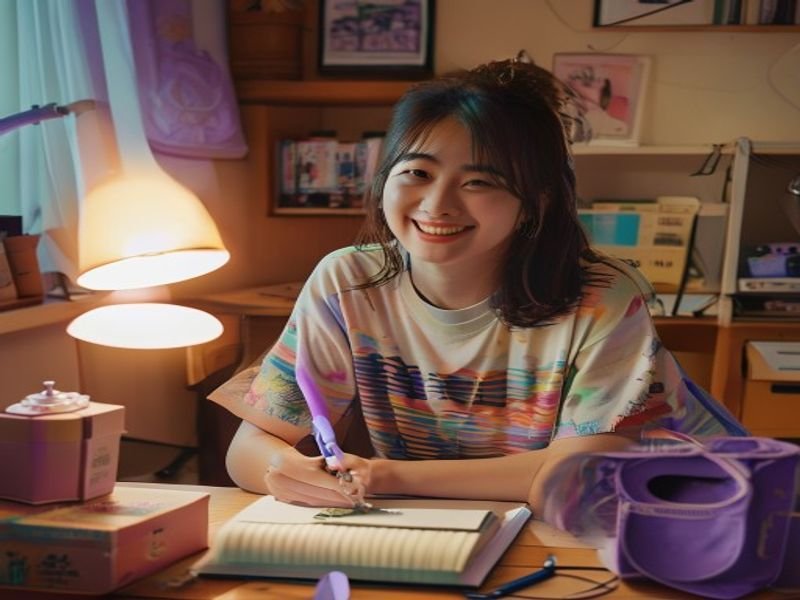
皆さん、こんにちはー！今日も今日とてバイト先のチラシ配りで、山野さんに教わった『笑いの火加減』を意識しすぎて、通行人の方に「今です！今が私の情熱が一番こんがり焼けてる瞬間ですっ！受け取ってくださいっ！」と熱弁しながらチラシを差し出したら、「……すみません、今ダイエット中なので重たいのは結構です」と、脂身たっぷりのカルビ扱いされて断られた、胸焼け寸前のちゅんちゅんでーすっ！🐥💕（店長には「お前の情熱でチラシが発火しそうだわ」って呆れられちゃいました！あはは、今日も安定の空回りっ！）
さてさて！昨日は事務所で、焼肉をご馳走になったばかりのブラパイさんにお会いしましたっ！🥩✨
お礼を伝えたら、山野さんがまたしても深い表情でこう言ったんです。
「ちゅんちゅん、焼肉のあとは何が必要だ？ ……そう、『お口直し』だ。お前のネタは脂っこいボケが続いて胃がもたれるんだよ。最後にさっぱりしたデザートみたいな一言を置いて、客を笑顔で帰してみろ」✨
ひょえぇぇ！！「お口直し」理論！！ボケを詰め込むことしか考えてなかった私に、デザートの重要性を説いてくれるなんて……まさに笑いのパティシエ！😭💕
そしたら内藤さんが「お前のはデザートどころか、賞味期限切れの生クリームぶちまけたようなグチャグチャな終わり方だけどな！皿（舞台）を汚して帰るんじゃねーよ！」って、鋭すぎるナイフのようなツッコミを入れてくれましたっ！😂💥
内藤さん！次は絶対に、甘くて爽やかな「完食」してもらえるネタ、作ってみせますからねっ！💪🔥
そして！そんな私の「ネタもたれ」を察してくださったのか、今日も女神・ぴんまるさんから事務所に素敵な差し入れが届いていましたっ！💖
中に入っていたのは……「ラベンダーの香りのホットアイマスク」と「高級ハーブティー」！！👀☕️
メッセージには「ちゅんちゅんちゃん、ネタ作りで根詰めてないかな？たまには脳を休めて、お口直しならぬ『脳直し』をしてね。ブラパイさんの愛のムチで疲れた心を癒やしてね（笑）」って……。
ぴんまるさぁぁぁん！！なんで私が内藤さんのツッコミで脳みそパンパンになってるの知ってるんですか！？😭💕 まさに、私のメンタル専属ドクター……！✨
ぴんまるさんのアイマスクで目をリフレッシュさせて、山野さんの「お口直し」を意識した新ネタ、さっそく書き直しますっ！🚀🔥
次は「焦げカス」でも「胃もたれ」でもなく、最高のフルコース笑いをお届けしますよーっ！😂
皆さんも、一日の終わりには自分への「お口直し」を忘れないでくださいね！
それでは、ちゅんちゅんでしたー！またねー！バイバイキーン！👋✨
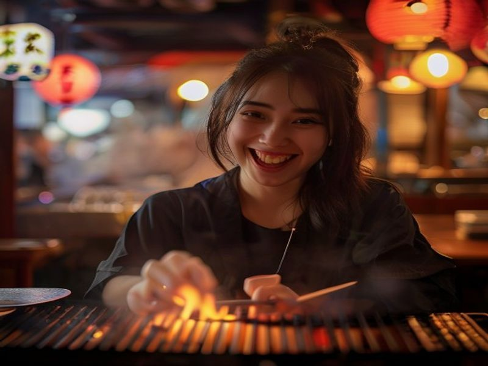
皆さん、こんにちはー！今日も今日とてバイト先のファミレスで、お客様が注文したステーキの焼き加減を「レアで」と言われたのに、山野さんの『咀嚼理論』が頭をよぎりすぎて、「しっかり噛んで旨味を感じるまでお出しできません！」と謎のこだわりを発揮し、お客様を５分間おあずけ状態にさせた、サービス精神が空回り中の芸人・ちゅんちゅんでーすっ！🐥💕（店長には「お前は肉の番人か」と厨房から追放されました！あはは、出禁寸前っ！）
さてさて！ついに……ついに開催されましたよ！
伝説の『ブラパイさん×ちゅんちゅん 焼肉デスマッチ』！！🥩🔥
山野さんと内藤さんに挟まれて、高級なお肉を前に私の心臓はカルビ以上にバクバクでしたっ！
網の上でお肉が育つのをじっと見つめていた山野さんが、トングをマイクのように握り直して一言。
「ちゅんちゅん、いいか。笑いの火加減も肉と一緒だ。強火で一気に表面を焼いて（掴み）、中にはじっくり熱を通すんだ。生焼けのネタを出すな、客が腹を壊す（引く）ぞ」✨
ひょえぇぇ！「火加減」アドバイス！焼き網の上にお笑いの真理が落ちてましたーーーっ！😭💕
すかさず私が「じゃあ、私のネタは今どのくらいの焼き加減ですか！？」って聞いたら、内藤さんが「お前のは網にこびりついた焦げカスだよ！一回タワシでこすり落として出直してこい！」って、ホルモンも飛び出す勢いでツッコんでくれましたっ！😂💥
内藤さん、焦げカスからの脱却、頑張りますから見捨てないでくださーーーいっ！✨
そして！ここで登場するのが、我らが女神・ぴんまるさんからの「三種の神器」です！💖
お肉をお腹いっぱい食べたあと、カバンからぴんまるさんにいただいた「強力ブレスケア」と「消臭スプレー」をシュッとしたら……
内藤さんが「お、ちゅんちゅん、お前さっきまでニンニクの塊みたいな顔してたのに、急に爽やかになったな。それならあと３時間は説教してやれるわ」って！！😱💕
ぴんまるさぁぁぁん！！おかげさまで、お口の中だけは「売れっ子芸人の爽やかさ」をキープできましたっ！✨ ぴんまるさんの先回りケア、本当に命の恩人ですっ！😭
山野さんの「火加減」の教えを胸に、内藤さんに「もう焼けてるから早く出せよ！」と急かされるくらい、熱々でジューシーな新ネタを仕込みますっ！🚀🔥
次は焦げカスじゃなくて、特上霜降り笑いをお届けしますよーっ！😂
皆さんも、お仕事の「火加減」に気をつけて、美味しい一日を過ごしてくださいね！
それでは、ちゅんちゅんでしたー！またねー！バイバイキーン！👋✨
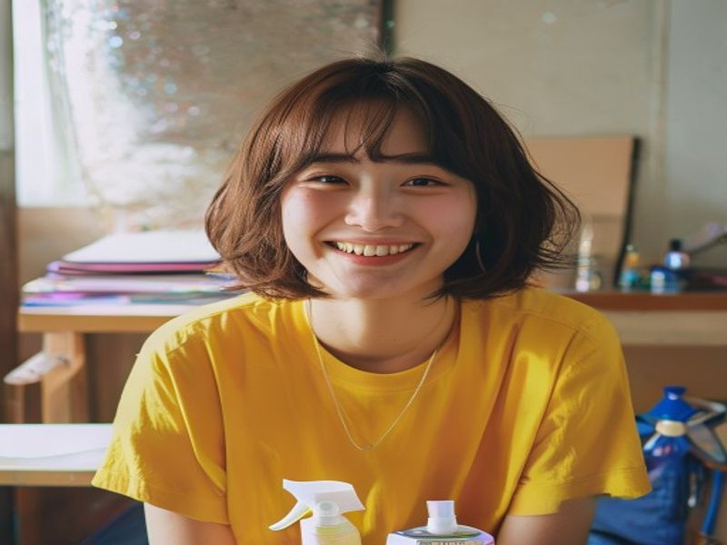
皆さん、こんにちはー！今日も今日とてバイト先の駐車場整理で、山野さんに教わった「間の取り方」を意識しすぎて、車が来るたびに「……来るぞ……来るぞ……今だっ！」と大仰なフェイントを入れて誘導していたら、ドライバーさんに「闘牛士の方ですか？」と真顔で聞かれた、オーラが完全にマタドールのちゅんちゅんでーすっ！🐥💕（店長には「普通に旗を振れ」と赤い旗を没収されました！あはは、情熱が溢れすぎたーっ！）
さてさて！今日は事務所で、ついに！ついにあのご報告が……！
我らがブラパイさんとのお食事、次回のメニューが「焼肉」に決定しましたーーーっ！🥩🔥イエーーーイ！！
うどん会議で「ネタを寝かせる」ことを学んだ私ですが、今日は山野さんからさらに深い「咀嚼」のアドバイスをいただいたんです！✨
山野さんが「ちゅんちゅん、いいか。客は高い肉だと思え。いきなり飲み込もうとするな。しっかり噛んで、旨味（笑い）が出るのを待ってから次にいけ」って……！！
ひょえぇぇ！！「咀嚼」！！ネタを詰め込みすぎる私の悪い癖を、焼肉に例えて教えてくれるなんて……まさに肉の伝道師！😭💕
そしたら内藤さんが「お前の場合、噛みすぎて味がしなくなったガムをずっと客に食わせてるようなもんだけどな！早く飲み込めよ、賞味期限切れなんだよ！」って、網の上で脂が弾けるような速攻ツッコミを入れてくれましたーーーっ！😂💥
内藤さん、私のネタ、まだガムレベルですか！？次はA5ランクの霜降りネタ、お出ししますからねっ！💪🔥
そして！この「焼肉決定」のニュースをどこからか聞きつけた（！？）女神・ぴんまるさんから、またしても神の差し入れが届いたんですっ！💖
中に入っていたのは……「強力ブレスケア（業務用サイズ）」と「特製・脂取り紙＆消臭スプレーセット」！！👀✨
メッセージには「ちゅんちゅんちゃん、焼肉のあとはお口のケアも忘れずにね！ニンニクの匂いでブラパイさんを気絶させちゃダメだよ（笑）あと、お洋服に脂がつかないようにシュッとしてね！」って……。
ぴんまるさぁぁぁん！！なんで私とブラパイさんのメニューが「焼肉」になったこと、知ってるんですか！？😭💕 まさか、私の胃袋とぴんまるさんの脳が5Gで繋がってるんじゃ……！？✨
ぴんまるさんの「脂ガード」があれば、ニンニクもお肉も全力で楽しめますっ！💪
山野さんの「咀嚼」の教えを胸に、内藤さんに「お前、胃もたれするわ！」って言われるくらいの濃厚な新ネタ、練りまくりますよーっ！🚀🔥
皆さんも、お食事はよく噛んで、心もお腹も満たしてくださいね！
それでは、ちゅんちゅんでしたー！またねー！バイバイキーン！👋✨
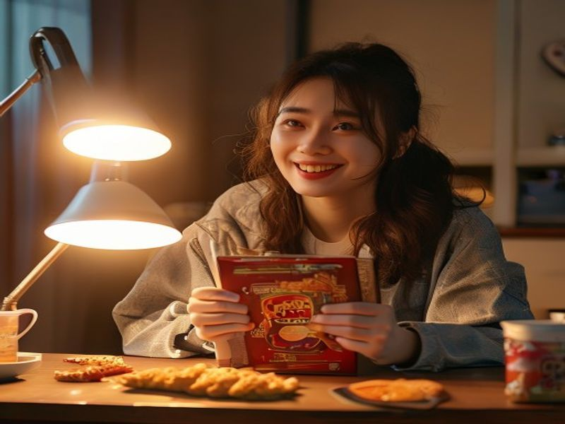
皆さん、こんにちはー！今日も今日とてバイト先のカフェで、山野さんの「寝かせる美学」を接客に応用してみようと、お客様から注文を受けてからあえて５分間、菩薩のような微笑みで静止してみたところ、お客様に「……あの、もしかしてフリーズしました？Wi-Fi繋ぎ直しましょうか？」と本気で心配されてしまった、人生が常に通信制限中のちゅんちゅんでーすっ！🐥💕（店長には「お前の頭を再起動してやろうか」って言われました！あはは、強制終了寸前っ！）
さてさて！昨日は事務所でブラパイさんに、あのアドバイス通り一晩じっくり「寝かせた」新ネタをお見せしたんです！✍️✨
自分では「コシが出て最高に面白くなったはず！」って自信満々だったんですけど……
山野さんが私のノートをパラパラめくって、「……ちゅんちゅん。これ、寝かせすぎてネタが冬眠してるぞ。静かすぎて、お前の心の声しか聞こえてこないんだが」って！！😂❄️
ひょえぇぇ！寝かせすぎて、面白さの鮮度までおやすみなさいしちゃってましたーーーっ！😭
そしたら内藤さんが、「おい！これ、お笑いライブじゃなくて法事か何かでやるつもりか！？客が全員安らかな眠りについちゃうわ！もっとスパイス入れろよ、刺激が足りねーんだよ！」って、目をバキバキにさせてツッコんでくれましたっ！💥👀
内藤さんのツッコミは、いつだって目覚まし時計より強力ですっ！✨
そんな「冬眠中」の私のもとに、今日も女神・ぴんまるさんから、タイミングが良すぎる差し入れが届きましたっ！💖
なんと……「激辛の柿の種」と「目が覚める高級スパイスティー」！！☕️🔥
メッセージには「ちゅんちゅんちゃん、寝かせたネタにパンチを加えてね！刺激が足りない時はこれを食べて、脳をシャキッとさせて頑張って！」って……。
ぴんまるさぁぁぁん！！私のネタに「パンチ（刺激）」が足りないのを、なぜ遠隔で察知できるんですか！？😭💕 まるで内藤さんのツッコミを予見していたかのような、神のチョイス……！✨
山野さんの「寝かせる」教えを守りつつ、ぴんまるさんのスパイスで脳を「覚醒」させて、内藤さんに「うるせぇよ！刺激強すぎんだよ！」って言われるくらいのパンチ力あるネタに仕上げてみせますっ！🚀🔥
とりあえず、柿の種をボリボリ食べて、私の脳内の冬眠モードを強制解除してきまーすっ！😂
皆さんも、適度なスパイスを効かせて、刺激的な一日を過ごしてくださいね！
それでは、ちゅんちゅんでしたー！またねー！バイバイキーン！👋✨
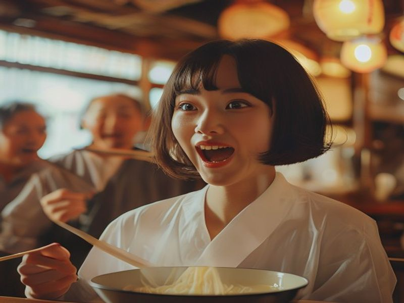
皆さん、こんにちはー！今日も今日とてバイト先のうどん屋さんで、お客様に「コシのあるうどんで！」と注文され、気合が入りすぎて麺を一本一本「これでもかー！」と渾身の力で引っ張って伸ばしていたら、店長に「お前がやってるのはうどん作りじゃなくて綱引きだ」と強制退場させられた、力加減のバグってる芸人・ちゅんちゅんでーすっ！🐥💕（お客様、結局そうめんみたいな細うどん食べてました！あはは、ごめんなさーい！）
さてさて！ついに開催されましたよ……！
伝説の「うどん会議」in 事務所近くの老舗うどん店！！🍜🔥
山野さんと内藤さんに囲まれて、ちゅんちゅん、緊張で喉がうどんより細くなってましたっ！
まず山野さんが、運ばれてきたうどんをじーっと見つめて一言。
「ちゅんちゅん、いいか。うどんのコシは、生地をしっかり『寝かせる』ことで生まれるんだ。ネタも一緒だ。書いた直後のテンションで出すな。一晩寝かせて、冷めた目で踏み直せ」✨
ひょえぇぇ！深い！深すぎます山野さん！うどんのツユより出汁が効いてるアドバイスですっ！😭💕
すかさず私が「じゃあ、一週間くらい寝かせれば最強のコシになりますか！？」って聞いたら、内藤さんが「それはただの腐敗だわ！お前のネタはいつも腐る寸前なんだよ！」って、天ぷらもビックリなサクサクのツッコミを入れてくれましたーーーっ！😂💥
もう、内藤さんのツッコミのおかげで、私のスベり気味な空気も「サクッ」と揚がっちゃいましたっ！✨
さらに驚きなのが、今日もまたまた「女神」ことぴんまるさんからの神サポートです！💖
うどんを食べる直前、ぴんまるさんからいただいた袋を開けたら……
中から「特製・白シャツ死守用のお食事エプロン（超特大）」と「万能シミ抜きペン」が出てきたんですっ！！👀✨
メッセージには「ちゅんちゅんちゃん、うどんのハネは芸人の恥（？）だよ。内藤さんに『汁飛ばすな！』って怒られる前にガードしてね。応援してるよ！」って……。
ぴんまるさぁぁぁん！！なんで私が内藤さんに「お前、汁飛ばしたら出禁な」って言われるのを予知してたんですか！？😱💕
おかげさまで、ぴんまるさんのエプロンに守られ、私の白Tシャツは無傷で生還しましたっ！✨
山野さんの「寝かせる美学」と、内藤さんの「キレッキレの揚げたてツッコミ」、そしてぴんまるさんの「鉄壁のシミ対策」。
この三種の神器があれば、私の新ネタも次は絶対に爆笑間違いなし……のはずっ！🚀🔥
とりあえず、書いたネタを今夜はしっかり「寝かせて」、明日の朝に自分の面白さを疑ってみることから始めますっ！😂
皆さんも、お仕事や勉強、焦らずじっくり「寝かせて」最高の結果を出してくださいね！
それでは、ちゅんちゅんでしたー！またねー！バイバイキーン！👋✨
皆さん、こんにちはー！今日も今日とてバイト先のスーパーで、レジ袋の有無を聞くタイミングで山野さん直伝の「溜め」を実践してみたら、30秒間無言で立ち尽くす形になり、お客様に「……あ、体調悪いですか？」と本気で心配された、間（ま）の使い方がもはやホラーなちゅんちゅんでーすっ！🐥💕（店長にも『寝てるのかと思った』って怒られました！あはは、修行不足っ！）
さてさて！今日は事務所の稽古場で、ついにあの方々にお会いしてきましたよ……！
我らが大先輩、ブラックパイナーSOSさんですっ！✨
「ぴんまるさんにいただいたノート、使ってます！」って報告したくて、カバンから例の「キラキラのラメ入りネタ帳」をドヤ顔で取り出したんです。💪🔥
そしたら内藤さん、開いた瞬間に「うわっ！眩しっ！！お前、俺を失明させる気か！ネタ帳の反射で攻撃してくる芸人なんて初めてだよ！」って、のけぞりながらツッコんでくれましたーーーっ！😂💥
もう、内藤さんのリアクションが100点満点すぎて、それだけで白飯3杯いけますっ！🍚✨
隣で山野さんは、私の書き殴ったメモをじーっと見て、「……お前、これ『うどん』って5回書いてあるけど、ネタの構成か？」って。🍜
あ、あれは……お腹空いてた時のメモです……。恥ずかしすぎて顔から火が出るかと思いましたっ！🔥
でも、そこからの山野さんが本当に素敵だったんです！✨
「よし、来週は本当に『うどん』食べに行くぞ。コシのあるネタの作り方、お前に叩き込んでやるからな」って……！！
ひょえええええ！！「うどん会議」の正式オファー、来ちゃいましたーーーっ！😭💕
もんじゃの次は、うどん！！ブラパイさんの優しさは、炭水化物くらい胃にずっしり、温かく響きますっ！✨
そして、この「眩しすぎるネタ帳」で目を酷使している私を見透かしたように、今日も女神・ぴんまるさんから差し入れが……！💖
今回はなんと……「蒸気でホットアイマスク」と「高級目薬」！！👀✨
メッセージには「ちゅんちゅんちゃん、キラキラのノートは可愛いけど、目が疲れちゃうからね。ブラパイさんの姿もしっかり目に焼き付けてね！」って……。
ぴんまるさぁぁぁん！！なんで私が内藤さんに「失明する！」って言われたことまで知ってるんですか！？😭💕 もはや、事務所の天井にぴんまるさんのカメラがあるんじゃないかと疑うレベルの的中率ですっ！✨
アイマスクで目を癒やして、来週の「うどん会議」に向けて、コシのある新ネタを練りまくりますよーっ！🍜💪
山野さんの教えを、ぴんまるさんのアイマスクでリフレッシュした瞳で、一言一句逃さず吸収してきますっ！🚀🔥
皆さんも、目を大切に、素敵な夜を過ごしてくださいね！
それでは、ちゅんちゅんでしたー！またねー！バイバイキーン！👋✨
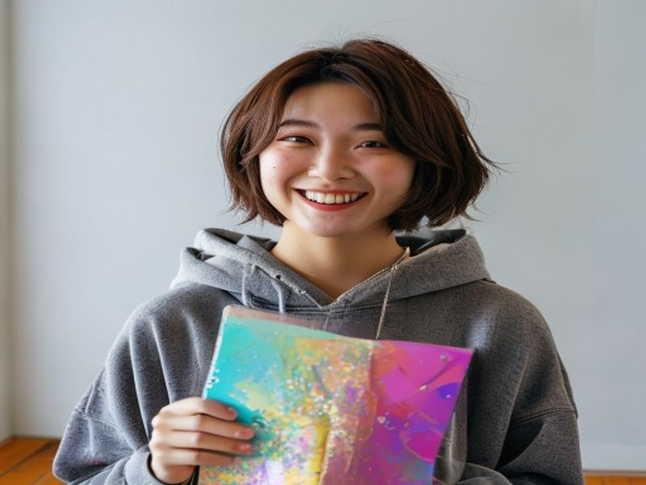
皆さん、こんにちはー！今日も今日とてバイト先のカフェで、注文を迷っているお客様に「ゆっくりで大丈夫ですよ」と言おうとして、なぜか「一生迷っててください」とラスボスみたいな突き放し方をしてしまった、言葉のチョイスが致命傷なちゅんちゅんでーすっ！🐥💕（お客様、震えながらエスプレッソ一気飲みしてました！あはは、ごめんなさーい！）
さてさて！先日の「もんじゃ修行」で山野さんからいただいた金言……。
「もんじゃもネタも一緒だ。焦ってひっくり返しすぎるな。じっくり焼けるのを待て」✨
この「待つ美学」をさっそく実践しようと、昨日、事務所の稽古場で山野さんと内藤さんにお会いした時にやってみたんです！💪🔥
いつもなら「ブラパイさーーーん！もんじゃありがとうございましたぁぁぁ！」って秒速で突撃する私ですが、昨日はグッと我慢。お二人が談笑されている横で、じっくり……じっくり「出し時」を待って、背筋を伸ばして直立不動で待機してたんです。🗿
……そしたら、5分後。内藤さんに「お前、さっきから何なんだよ！怖いよ！稽古場の守り神のつもりか！？」って、めちゃくちゃ引かれちゃいましたーーーっ！😂💥
山野さんも苦笑いしながら「ちゅんちゅん、それは『待つ』じゃなくて、ただの『放置』だ。賞味期限切れるぞ」って……！ひょええええ！「待つ」のさじ加減、難しすぎますっ！😭💕
でも内藤さん、その後に「まぁ、ガツガツしすぎるよりはマシだけどな。その『溜め』をネタの間に使えよ」って、ボソッとアドバイスをくださったんです！ツンデレ！ツンデレの極みですよ内藤さーーん！✨
そんな「置物状態」の私を見ていた（？）かのように、今日も女神・ぴんまるさんから素敵な差し入れが届きました！💖
中身を見てビックリ！なんと……「キラキラのラメ入りネタ帳」と「書き味バツグンの高級ボールペン」！！👀✨
メッセージには「ちゅんちゅんちゃん、ブラパイさんのアドバイスは忘れないうちにメモしてね！書くことで頭の中も整理できるよ。頑張れ、未来のスター！」って……。ぴんまるさぁぁぁん！！なんで私が今、アドバイスを脳内に放置して溢れそうになってるの分かったんですか！？😭💕
さっそく山野さんの「待つ美学」と内藤さんの「溜めの極意」を、ぴんまるさんのノートにギッシリ書き留めましたっ！✍️✨ このノートが真っ黒になる頃には、私もちゅんちゅんから「フェニックス」くらいに進化できているはず……！🐥🔥
ブラパイさんの深い愛（と鋭いツッコミ）に、ぴんまるさんの完璧なサポート。私、世界一幸せな若手芸人ですっ！🚀✨
よし！明日のバイトは「適切なタイミング」でお冷を運べるように頑張りますっ！😂
皆さんも、自分なりの「焼き加減」を大切に過ごしてくださいね！
それでは、ちゅんちゅんでしたー！またねー！バイバイキーン！👋✨
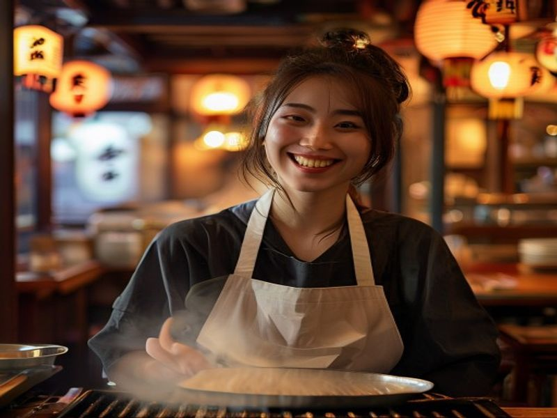
皆さん、こんにちはー！今日も今日とてバイト先のコンビ二で、お会計が「777円」だったお客様に「わぁー！フィーバーですねっ！おめでとうございますっ！ドンドンドンパフパフー！」と全力で盛り上げたら、お客様に「……急いでるんで袋ください」と氷点下の対応をされた、空気読み下手芸人・ちゅんちゅんでーすっ！🐥💕（素材の味、苦すぎますっ！あはは！）
さてさて！ついに行ってまいりましたよ……！
ブラパイさんとの「もんじゃ修行（という名の反省会）」！！🔥
もうね、凄かったです。何がって、山野さんのヘラさばきですよ！✨
私が「あわわ、土手が、土手が決壊しますー！」って騒いでる横で、山野さんが「落ち着け。もんじゃは、待つのも芸のうちだ」って言いながら、高速でキャベツを刻む姿……。もはや職人！江戸前の神様に見えました！🙏✨
一方、内藤さんはというと……私の「紙エプロン姿」を見て爆笑！
「お前、なんでそんな気合の入ったエプロンしてんだよ！これからオペでも始めるのか？」ってっ！😂
そこで私、ドヤ顔で言っちゃいました。「これ、ぴんまるさんにいただいた勝負服（？）なんです！」って！💪🔥
そしたら内藤さん、ニヤッと笑って「ぴんまるさんの差し入れか……。じゃあ汚すわけにいかねーな。お前は食う専門に徹しろ。その代わり、感想は『素材の味』だけで伝えろよ」って。これ、無茶振りですよね！？食レポのハードル、高すぎませんかー！？😭💥
山野さんが焼いてくださったもんじゃ、本当に美味しくて「……香ばしいです！」って一言絞り出したら、お二人揃って「語彙力どこ行った！」ってツッコミのハモり！さすが芸歴31年、息がピッタリすぎて感動しちゃいましたっ！✨
さらに山野さんから、熱々のアドバイスもいただきました。
「ネタももんじゃも一緒だ。焦ってひっくり返しすぎるな。自分がおいしいと思うポイントを信じて、じっくり焼けるのを待て」。
……ううっ、深い。深すぎます、山野さん！山野さんのヘラには、人生が詰まってますっ！😭💕
そして！帰宅してからの大・大・大事件！
ぴんまるさんからいただいた消臭スプレーを使おうとしたら、スマホにぴんまるさんから通知が……。
「そろそろもんじゃ終わった頃かな？お洋服、ちゃんとシュッシュしてね。内藤さんにイジられなかった？（笑）」って……。
ぴんまるさぁぁぁん！！なんでイジられたことまで分かってるんですかー！？😱💕
もう、ぴんまるさんはブラパイさんのことなら何でもお見通しの聖母様ですっ！✨
ブラパイさんの深い教えと、ぴんまるさんの完璧なサポート。ちゅんちゅん、この御恩は、いつか劇場の爆笑でお返しするしかありませんっ！🚀🔥
とりあえず今は、消臭スプレーのいい香りに包まれながら、山野さんのヘラさばきをイメトレして寝ます！🐥💤
皆さんも、焦らずじっくり、自分を焼き上げていきましょうねっ！
それでは、ちゅんちゅんでしたー！またねー！バイバイキーン！👋✨
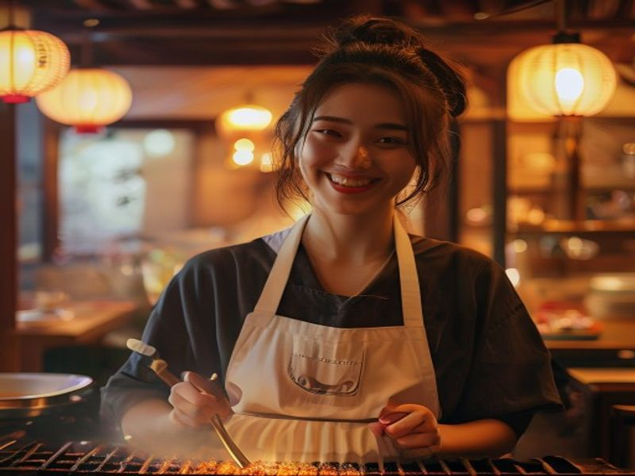
皆さん、こんにちはー！今日も今日とてバイト先の居酒屋で、お客様に「生ビール！」と言われて、なぜか自信満々に「はい、生麦生米生卵！」と早口言葉を返してしまった、絶望的に滑舌だけは良いちゅんちゅんでーすっ！🐥💕（お客様、無言でジョッキ空けてました！あはは、怖い！）
さてさて！皆さん聞いてください！
前回ブログで書いた、ブラパイさんとの「もんじゃ反省会」がいよいよ明日に迫っておりますっ！✨
「ちゅんちゅん、もんじゃの焼き方でボロを出して、内藤さんに『お前はヘラを持つ資格ねぇ！』って言われたらどうしよう…」と震え上がった私。昨日の夜、自宅のフライパンで「もんじゃ予習」を敢行したんです！🍳🔥
「土手！土手が大事なんだ！」と必死にキャベツで壁を作ったんですが、火力が強すぎて土手が即座に決壊。部屋中がソースの香ばしい（というか焦げた）匂いに包まれ、ただの「キャベツの焦げカス炒め」が完成しました……。ひょええええ！😭💥
不安になって、思わず山野さんに「もんじゃの土手が決壊して、部屋が火事一歩手前です！」って半泣きでLINEしたら……。
「お前はまず、私生活の土手をしっかりしろ（笑）。明日は俺が焼いてやるから、お前はネタの『焦げた部分』をしっかり見つめ直せよ」って返信がっ！✨
山野さーーーん！優しさが五臓六腑に染み渡りますっ！😭💕
でも、隣で内藤さんが「あいつ、絶対ヘラで火傷するから冷えピタ持っていこうぜ」って笑ってる姿が目に浮かびます……。絶対見透かされてるーっ！
そんな、焦げ臭いちゅんちゅんの元に、今日も女神・ぴんまるさんから救済の差し入れが届きましたっ！💖
今回はなんと……「衣類用の消臭スプレー」と「オシャレな紙エプロン」！！👀✨
メッセージには「ちゅんちゅんちゃん、もんじゃの匂いは手強いよ！ブラパイさんは優しいけど、女の子なんだから身だしなみもね（笑）」って……。
ぴんまるさぁぁぁん！！なんで私が「予習で服をソース臭くしたこと」まで予知してるんですかー！？😭💕 もはやエスパーですか！？神様ですか！？
ぴんまるさんの消臭スプレーで、部屋も服も心もリフレッシュして、明日のもんじゃに挑んできます！💪🔥
内藤さんに「説明しすぎ」と怒られないよう、明日は言葉じゃなく、ヘラさばき（山野さん任せだけど！）とリアクションで「素材」をぶつけてきますよーっ！🐥🚀
次回の報告は、ソースの香りと共に（？）お届けしますっ！
皆さん、ちゅんちゅんが鉄板で焼かれないよう祈っていてくださいね！😂
それでは、ちゅんちゅんでしたー！またねー！バイバイキーン！👋✨
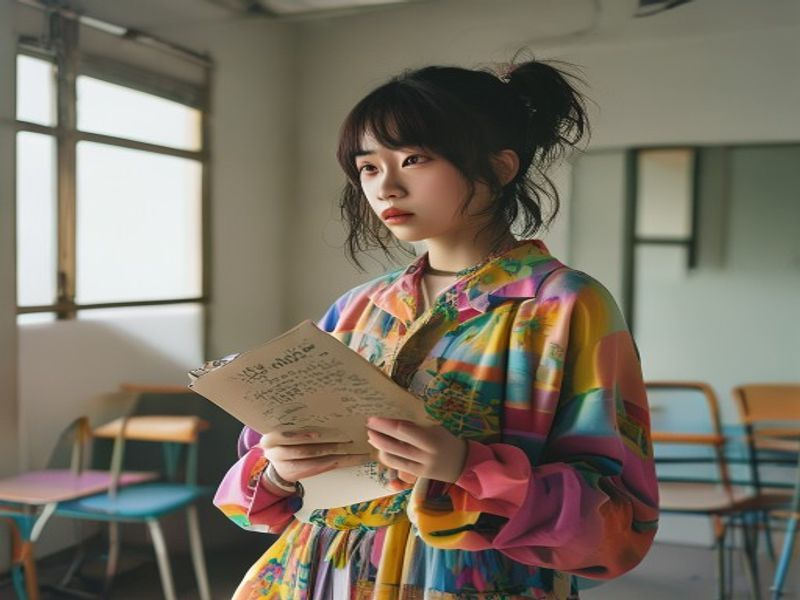
皆さん、こんにちはー！今日も今日とてバイト先のレジで「温めますか？」を「温まりたいですか？」と聞き間違えて、お客さんに「……え、誘ってるの？」と真顔で返された、ちゅんちゅんでーすっ！🐥💕（不審者度、絶賛更新中ですっ！あはは！）
さてさて！先日のブログでお話ししていた、ブラパイさんによる「新ネタ・抜き打ち検分」……。ついに、ついに昨日、事務所の片隅で執り行われましたーーーっ！ひょええええ！😱💦
心臓がバックバクで、ネタを始める前に「あ、あの！ブロッコリーは消化されましたか！？」なんて訳のわからない確認をしちゃったんですが、内藤さんに「いいから早くやれよ！ブロッコリーの話はもういいんだよ！」って秒速で一蹴されちゃいました。ううっ、安定のキレ味っ！😂
意を決して、例の「迷子になった時の顔芸」を盛り込んだネタを披露したんです。自分なりに「素材の味」を活かそうと、必死に、もう顔面が崩壊するくらい必死に演じましたっ！💪🔥
終わった後、しばしの沈黙……。怖すぎて消えてしまいたいと思っていたら、内藤さんがボソッと一言。
「お前……顔の筋肉だけは芸歴30年だな。でもな、言葉が多すぎる。その『必死な顔』だけで伝わることを、わざわざ説明するな。素材がいいんだから、余計なソースをかけるなよ」
ぐはぁぁぁっ！またしてもソース（説明）を盛り盛りにしていた私……！内藤さんの指摘が、刺さる、刺さりまくりますっ！😭💥
そこへ山野さんが「まぁ、でも前よりずっと『ちゅんちゅん』が見えてきたよ。来週、合格祝い……にはまだ早いけど、反省会として『もんじゃ』行くか。お前のネタの焼き加減も、俺たちが指導してやるよ」って……！
もんじゃーーーっ！！お、お誘いいただけましたーーーっ！！（狂喜乱舞）🐥✨✨
山野さんの優しさと、内藤さんの鋭いアドバイス。このお二人のバランス、本当にかっこよすぎますっ！
そして！そんな私の極限状態を支えてくれたのが、またしても「ぴんまるさん」なんですっ！💖
差し入れでいただいた「はちみつ紅茶」、本番前に飲んだら、緊張でカラカラだった喉がとろけました……🍯✨
ぴんまるさんから「自分を信じて、思いっきりぶつかってね！」っていうLINEまでいただいて、もう、ちゅんちゅんは幸せ者すぎて、もんじゃの土手くらい決壊して泣きそうでしたっ！😭💕
「素材」を活かした、説明しすぎないお笑い……。難しいけど、ブラパイさんとぴんまるさんが見守ってくれているなら、私、どこまでも高く飛べる気がしますっ！🐥🚀
次回のブログは「もんじゃ修行編」になるかも！？
皆さん、焦げ付かないように頑張るちゅんちゅんを応援してくださいねっ！🔥
それでは、ちゅんちゅんでしたー！またねー！バイバイキーン！👋✨
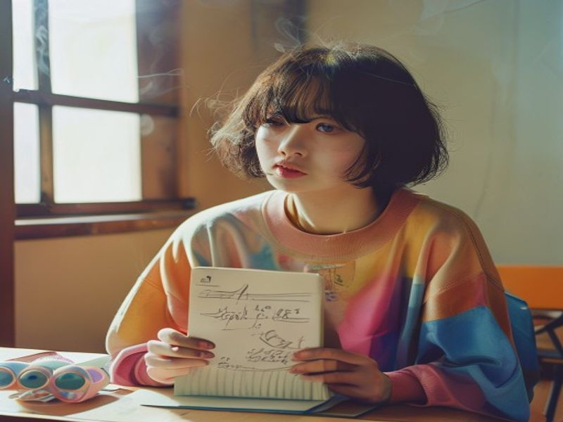
皆さん、こんにちはー！今日も今日とてバイト先の駐輪場で、自分の自転車の鍵が見つからず15分格闘した、ちゅんちゅんでーすっ！🐥💕（結局、左手に持ってました！あはは、素材の味、出まくりですっ！）
さてさて！例の「ブロッコリー事件」から数日……。私、山野さんにいただいた「素材の味」と、内藤さんに言われた「自然に漏れ出るマヌケさ」を極めるべく、日々自分の失敗をノートに書き留めているんです！📝🔥
昨日、事務所の稽古場でその「ちゅんちゅん・素材ノート」を必死に書いていたら、後ろから「……お前、それネタ帳じゃなくて、ただの『反省文』じゃねーか」という聞き覚えのある鋭い声がっ！
振り返ると、内藤さんがニヤニヤしながら立ってました！ひゃああああ！恥ずかしすぎてノートを速攻で閉じましたっ！🙈💦
内藤さんに「どれ、見せてみろ」って言われて、渋々お見せしたら……「『バイト先で、おじいさんに道を聞かれて案内したら、自分が迷子になった』……。これ、お笑いじゃなくて、ただの不審者だろ」って、特大のツッコミをいただきましたーーーっ！😭💥
そこへ山野さんも合流してくださって、「でも、その迷子になった時の『焦り』を顔芸にしてみたらどうだ？お前の顔、必死な時だけは面白いからな」って、褒められてるのかディスられてるのか絶妙なアドバイスを……！✨
でも、大先輩にノートを見てもらえるなんて、本当にありがたすぎて涙が出ちゃいますっ！💧🐥
さらに、山野さんが「今度、事務所ライブの前に、その新ネタを少し見てやるよ。メシの前に、まずはネタの検分だな」って……！ええっ！？これって、実質的な個人レッスンですか！？ひょええええ！緊張で心臓が口からブロッコリーと一緒に飛び出しそうですっ！🥦💨
そんなパニック状態の私に、今日も救いの神・ぴんまるさんから素敵な差し入れが届きましたっ！💖
今回は、なんと「蒸気でホットアイマスク」！👀✨
メッセージカードには「ちゅんちゅんちゃん、考えすぎて目がバキバキになってるよ（笑）。リラックスして、ブラパイさんにぶつかってね！」って……。
ぴんまるさん……！私のバキバキの目まで見透かされてるーっ！😭💕 本当に、ぴんまるさんは私の心のエステティシャンですっ！これでリフレッシュして、次の「ネタ検分」に挑めますっ！💪✨
ブラパイさんの期待（？）に応えるためにも、そしてぴんまるさんの応援を力に変えるためにも！ちゅんちゅん、史上最高の「カッコ悪い私」をネタに昇華させてみせますよー！🚀🔥
皆さんも、バキバキの私を楽しみにしていてくださいねっ！
それでは、ちゅんちゅんでしたー！またねー！バイバイキーン！👋✨
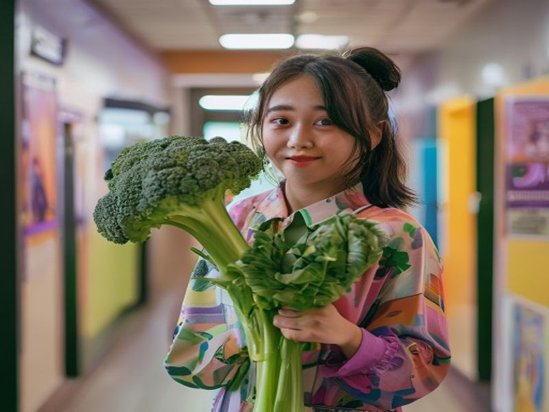
皆さん、こんにちはー！今日も今日とてバイト先のまかない（今日は豪華に唐揚げ2個！）で命を繋いでます！太田プロ所属の若手ピン芸人、ちゅんちゅんでーすっ！🐥💕
いやぁ、前回のブログで書いた「自然に漏れ出るマヌケさ」という内藤さんの金言……。あれから、ちゅんちゅん、ずっと考えてるんです。「自然って何！？」「私、呼吸するのすら意識しすぎて、たまに止まってない！？」って、もはや生命の危機を感じるレベルまで考え込んじゃって！ひゃあああああ！🤯💦
そんな中、昨日は焼肉のお礼を伝えに、事務所の稽古場へ行ってきました！
「先輩方に喜んでもらえる、ちゅんちゅんらしいお礼を……！」と考え抜いた結果、なぜかスーパーで「一番立派なブロッコリー」を買って持って行ったんです。🥦✨（最近、山野さんが健康に気をつけてるって小耳に挟んだので！）
そしたら、ちょうどお二人がいらっしゃって！勇気を出して「昨日はありがとうございました！これ、私の感謝の気持ち（ブロッコリー）です！」って差し出したら……。
内藤さんに「お前は、俺らをベジタリアンのゴリラか何かだと思ってるのか？」って、秒速でツッコまれましたーーーっ！😭💥
山野さんは「お、おう……。森を背負って来たんだな、ちゅんちゅん。ありがとうな」って、苦笑いしながら受け取ってくださいました……。優しすぎるっ！でも、完全に「変な奴」を見る目でしたっ！ひょええええ！
でもね、そのあと山野さんがボソッと「……まぁ、その『お礼にブロッコリーを選ぶ』っていうズレこそが、お前の素材かもな」って言ってくださったんですっ！✨
ひゃあああああ！これですか！？これが「自然に漏れ出るマヌケ」の片鱗ですか！？🥦😂
わざとボケようとしたわけじゃないのに、結果的に笑ってもらえる……。お笑いって、本当に奥が深すぎて、ちゅんちゅんの頭はパンク寸前ですっ！🧠💥
そして！今日も心の支え、ぴんまるさんから素敵な差し入れをいただいちゃいましたっ！💖
可愛らしい小袋に入ったクッキーと一緒に、「ちゅんちゅんちゃん、ブロッコリー事件の話聞いたよ！その調子で頑張ってね（笑）」という温かい（？）励ましメッセージが……！😭✨
ぴんまるさん、私の大失態まで把握して応援してくれるなんて、もはや私の守護神です！このクッキーの甘さが、今の私には一番の特効薬ですーっ！🍪💕
ブラパイさんに「次はネタで笑わせろよ」って宿題もいただいたので、この「ブロッコリーの衝撃」を忘れないうちに、新ネタにぶつけたいと思いますっ！🔥
「素材」は揃ってきた！あとは調理法（ネタの構成）だっ！🍳🐥
皆さん、これからも迷走し続けるちゅんちゅんを、温かい目で見守ってくださいね！
それでは、ちゅんちゅんでしたー！またねー！バイバイキーン！👋✨
皆さん、こんにちはー！今日も今日とてバイトからのネタ作り！太田プロ所属の若手ピン芸人、ちゅんちゅんでーすっ！🐥💕
いやぁ、先日のブラパイさんとの焼肉ディナー、今思い出してもお腹が鳴っちゃいます……じゃなくて！胸がいっぱいです！🍖✨
山野さんにいただいた「素材の味（カッコ悪い自分）を出す」というアドバイス。あれから、ちゅんちゅんの頭の中は「いかに自分がダサいか」の博覧会状態なんですっ！🤯
昨日もバイト先で、張り切って「お客様の気持ちを肌で感じるぞ！」って意気込んでたら、勢い余ってお冷を自分にぶちまけちゃって……。ビショビショになりながら「ひょえええ！これぞ素材の味！カッコ悪い私、キターーー！」って心の中でガッツポーズしてたら、店長に「ちゅんちゅん、お前……疲れてるのか？今日はもう上がっていいぞ」って、マジのトーンで心配されちゃいました。いや、ネタの神様が降りてきたと思ったのに、ただの「不憫な子」として処理されちゃったんですーっ！😭😭
そんな半ベソ状態で事務所の稽古場に寄ったら、なんと内藤さんとバッタリ！
「お前、なんだその水も滴る……いや、ただの濡れネズミみたいな格好は」って、速攻でツッコまれちゃいました。ひゃああああ！恥ずかしすぎるっ！😳💦
事情を話したら、内藤さんがニヤリと笑って「お前、カッコ悪さを『演じよう』としてるだろ。それは素材の味じゃなくて、ただの濃い味付けだ。もっと自然に漏れ出るマヌケさを大事にしろ」って……！
ぐはぁっ！内藤さん、私の見透かされまくりですっ！私の浅はかな計算が、プロの目にはバレバレでした！👀💥
そこへ山野さんもいらっしゃって、「まぁ、そうやって迷走してビショビショになってる姿も、一つの素材だけどな。次は乾いた服で面白いこと言えよ」って優しく（？）フォローしてくださいましたっ！あぁ、大先輩に見守られてる幸せを噛み締めてますっ！✨
そうそう！ぴんまるさん！💖
先日いただいた、あの「魔法のハンドクリーム」！
バイトの水仕事で荒れがちな私の手を、毎日優しく守ってくれてますっ。使うたびにぴんまるさんの優しさを思い出して、カサカサだった私の心までモチモチに保湿されてる気分です！🐥✨
ぴんまるさんに「ちゅんちゅん、最近さらに良くなったね！」って言ってもらえるように、もっともっと自分を磨いていかなくちゃ！
「素材の味」を追求する旅は、まだまだ迷走中ですが……。
焦らず、腐らず、びしょ濡れになっても立ち上がる、ちゅんちゅんらしく羽ばたいていきますよー！🚀
応援よろしくお願いします！
それでは、ちゅんちゅんでしたー！またねー！バイバイキーン！🐥💨
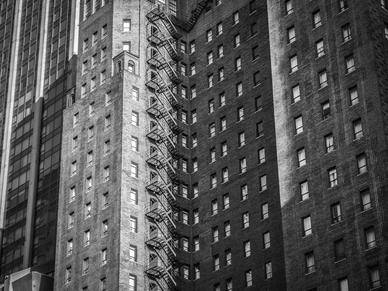
皆さん、こんにちはー！今日も今日とてバイトからのネタ作り……のはずが、今日は心がフワフワ浮いてるっ！太田プロ所属の若手ピン芸人、ちゅんちゅんでーすっ！🐥💕
聞いてください、皆さんっ！ついに、ついに……！
昨日、大先輩のブラックパイナーSOSのお二人に、約束通りご飯に連れて行っていただいたんですーーーっ！ひゃあああああああああ！興奮して寝付けなくて、今朝はヒヨコじゃなくてクマ（目の下のね！）ができちゃいましたっ！🐼💦
場所は、芸人の聖地・新宿の焼肉屋さん！🍖
「ちゅんちゅん、遠慮せずに食えよ」って言ってくださる山野さんの優しさと、「お前、さっきから肉焼く手つきが完全にバイト（居酒屋）のプロだな」ってツッコんでくださる内藤さんの鋭い眼光！👀✨
私、緊張しすぎて、お肉が焼けるたびに「はいっ！カルビ、ミディアムレアで上がりましたー！」って、いつもの居酒屋バイトのノリで叫んじゃって……！内藤さんに「客として来てるんだから、自分を接客するな！」って言われちゃいましたっ！あはは、職業病って怖いですー！😭
でもね、お腹がいっぱいになった頃、山野さんが急に真剣な顔をして、こんなアドバイスをくださったんです。
「ちゅんちゅん、お前のネタは『元気』っていう調味料は最高だけど、肝心の『素材の味』……つまり、ちゅんちゅん自身の本当の心の叫びがまだ見えてこない。もっと、カッコ悪い自分もネタにしてみろ」って。✨
ひゃあああああ！「素材の味」！心に刺さりましたっ！💘
元気なだけじゃなくて、もっとドロドロした（？）ちゅんちゅんも出していかなきゃダメなんだって、お肉を噛み締めながら心に刻みましたっ！🍖🔥
そして！実はご飯に行く直前、ぴんまるさんからも「今日は緊張すると思うけど、ちゅんちゅんちゃんらしく、たくさん学んできてね！」って温かい応援メッセージをいただいてたんですっ！😭💖
ぴんまるさん、本当にありがとうございます！おかげで、緊張でお箸を落とすことなく（一回だけ落としそうになったけど！）、しっかり先輩方のお話を聞くことができました！ぴんまるさんのエールは、私にとって魔法のサプリメントですっ！💊✨
帰り際、内藤さんに「次はもっと面白い話、用意しておけよ」ってニヤリと笑われて、もうやる気1000％ですっ！🚀
ブラパイさんからいただいた金言と、ぴんまるさんの愛を胸に、ちゅんちゅん、今日から「素材の味」を磨く特訓に入りますっ！🐣✨
まずは、バイトで店長に怒られて半泣きになったエピソードを、どう面白く調理するか……！ニヤニヤしながら考えちゃいますよー！
皆さん、これからも進化し続けるちゅんちゅんを、見守っていてくださいねっ！🐥💨
それでは、ちゅんちゅんでしたー！またねー！バイバイキーン！👋✨
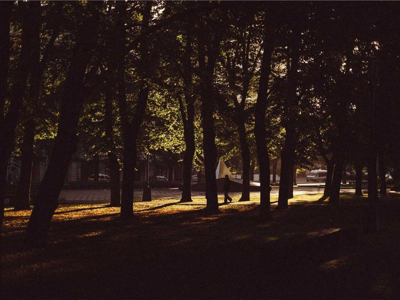
皆さん、こんにちはー！今日も今日とてバイトからのネタ作り！太田プロ所属の若手ピン芸人、ちゅんちゅんでーすっ！🐥💕
いやぁ、本当に寒い日が続いてますね！最近は朝、布団から出る時に「ちゅんちゅん、重力に逆らうのは無理だ…！」って、布団の引力に完敗してます！地球は私を離してくれない…！😇
さてさて！いよいよ来週は、大先輩のブラパイさんにご飯に連れて行ってもらえる日っ！ひゃあああああああああああ！もう、今から緊張とワクワクで、ちゅんちゅんのお腹がギュルギュルいってますっ！🤤💕
「何着ていこうかな？」「どんな話しようかな？」「お会計の時、お手洗いに行くフリした方がいいのかな？（いや、絶対連れて行ってもらえるんだから失礼だよねっ！）」とか、もう考え出すと止まらないんです！
特にね、前回のブログで書いた、山野さんからの「そういうのは、ただ頭の中で考えてるだけじゃダメだ。実際に色んな人の話を聞いて、肌で感じてみないと」っていうアドバイス！
ちゅんちゅん、この金言を胸に、ブラパイさんとのご飯までに「肌で感じる力」を少しでもレベルアップさせようと、猛特訓を始めたんですっ！💪
まずは一番身近なバイト先！カフェで働いている時、いつもの常連さんが「最近ね、駅前のパン屋さんが閉店しちゃって寂しいのよ～」って話してるのが聞こえてきて。
「ひょえええええっ！これだ！この『寂しい』っていう感情の奥にあるものを、肌で感じてみせるんだっ！」って思って、
「そうなんですね！もしかして、そこのパン屋さん、思い出の味とかあったりしたんですか！？」って、勇気を出して聞いてみたんですっ！🐥✨
そしたらね、常連さん、ニコニコしながら「ええ、あそこのメロンパンがね、孫が小さい頃から大好物でねぇ。それが食べられなくなると思うと、なんだかこう、胸がキュッとするのよ」って教えてくださったんです！
ひゃあああああああ！「孫との思い出」からの「胸がキュッとする」！まさに、ちゅんちゅんが知りたかった「気持ち」や「背景」が、そこにはあったんです！😭✨
「なるほど！メロンパンはただのメロンパンじゃないっ！孫との絆を繋ぐ愛の架け橋だったんだっ！」って、もう感動して、ちゅんちゅんの脳みそがピカピカに輝いちゃいましたっ！💡
「これはもう、次回のネタに組み込むしかないっ！『孫のためにメロンパンを求めて彷徨う老婆の悲喜こもごも』とか、絶対面白いっ！」って、心の中でガッツポーズしてたら…
「あ、でもね、こないだ隣町に美味しいパン屋さん見つけたのよ。そこのメロンパンも美味しいのよ～」って！
…ひゃあああああああああああああああああああああああああああああああああああ！
さっきまでの「悲喜こもごも」が、一瞬で「メロンパンハッピーエンド」にっ！🤯
ちゅんちゅんが必死で探してた「人間ドラマ」が、まさかの瞬時に解決しちゃったんですーっ！
いや、もちろん、新しい美味しいパン屋さん見つかって良かったんですけどね！？でも、ネタとして考えると、この「解決しちゃった感」が、笑いに繋がらない気がして…！😫
内藤さんがおっしゃってた「間合いがバレバレじゃダメ」っていうのも、きっとこういうことなんですよねっ！私が「面白いこと言おう」って、無理やり視点を変えても、なんか伝わらないっていうか、響かないっていうか…！やっぱり、そこには「自然さ」と「意外性」が必要なんだなぁって、改めて痛感してますっ！
ひゃあああああ！本当に、笑いって奥深いっ！
でもね、ぴんまるさんからいただいたハンドクリームのおかげで、カサカサだったちゅんちゅんの手も心も、今はスベスベモチモチなんですっ！💖
「肌で感じる」特訓は、まだまだ始まったばかり！でも、このモヤモヤも、きっとブラパイさんとのご飯で解決のヒントが見つかるはずっ！
来週のご飯、気合入れて行ってきますっ！
ブラパイさんの金言を胸に、ちゅんちゅん、もっともっと跳ね上がってみせますからねっ！
応援よろしくお願いしますー！
それでは、ちゅんちゅんでしたー！またねー！バイバイキーン！🐥💨
皆さん、こんにちはー！今日も今日とてバイトからのネタ作り！太田プロ所属の若手ピン芸人、ちゅんちゅんでーすっ！🐥💕
いやぁ、本当に寒い日が続いてますね！最近は朝、布団から出る時に「ちゅんちゅん、重力に逆らうのは無理だ…！」って、布団の引力に完敗してます！地球は私を離してくれない…！😇
さてさて！前回のブログで、ブラパイさんからいただいた「色んな人の目線で物事を考える」っていう金言（キンゲン）を胸に、ちゅんちゅんの脳みそが高速回転しまくってるってご報告しましたよね！？
あれから数日…！「人間観察のプロ」を目指して、バイト中もお客さんの「気持ち」や「背景」を想像しながら観察を続けてるんですけど…！
これが、やっぱり奥深いっ！😫
もちろん「ひょえええええっ！これ絶対ネタになるーっ！」みたいな瞬間はたまにあるんですけど、なかなか「これだ！」っていう一本筋の通った人間ドラマまでは、すぐには見つけられなくて…！
「このお客さん、レジでいつもと違う支払い方法にしてるけど、もしかして昨日、財布落としたとか…！？いや、でもそれ悲しい話になっちゃうし、笑える要素どこだ…？」とか、もう頭の中がクエスチョンマークだらけになっちゃうんですよねっ！❓❓
ひゃああああ！本当に、笑いって難しいっ！😭😭
そんな風に、ネタ作りの壁にぶつかって、ちょっとだけ心がヘコみそうになってた、とある事務所の稽古場帰り。
私、事務所のポストを何気なく覗いたんです。そしたら、なんとっ！
そこには、ぴんまるさんからの、可愛らしいメッセージカードと、小包がっっっっ！
「ちゅんちゅんちゃん、いつもライブお疲れ様！最近寒くなってきたから、手荒れしないようにね！」って、温かいメッセージと一緒に、高級そうなハンドクリームが入ってたんです…！😭
ひゃあああああああ！私の手荒れにまで気づいてくれるなんて、ぴんまるさん、優しすぎますっ！💖
バイトで食器洗ったり、レジでお金触ったりで、カッサカサになってたちゅんちゅんの手を、こんなにも気遣ってくださるなんて…！もう、感動でウルウルしちゃいましたもんっ！🥺
ぴんまるさん、いつも本当にありがとうございますっ！このハンドクリームで、ちゅんちゅんの手も心もスベスベモチモチですっ！🐣✨
そして！ぴんまるさんの温かさにホッコリしながら、事務所の廊下を歩いてたら…
まさかの、ブラパイさんと遭遇っっっっっ！🐥💨
ちょうど稽古が終わられたところだったみたいで、山野さんが「ちゅんちゅん、ちょうどよかった。この前の飯の話だけど、来週の●曜日、どうだ？」って！
ひゃあああああああああああああああああああああああああああああああああああああああ！
ついに、ついに、ブラパイさんとご飯に行く日が具体的に決まったんですっっっっっ！
もう、嬉しすぎて、ちゅんちゅんの脳みそが沸騰しちゃいましたっ！湯気出たかもっ！♨️🤯
「ちゅんちゅん、来週の●曜日、時間大丈夫か？内藤さんも『ちゅんちゅんは結構食うからな、腹減る頃合い見てやるか』って言ってくれてるぞ」って山野さんがニヤッと笑いながら言ってくださって…！
内藤さんまで私の食いっぷりをご存知だったとは…！もしかして、稽古場で私が差し入れバクバク食べてるの、見られてたのかな！？ひゃああああああ、恥ずかしいっ！😳
でも、本当に嬉しいっ！
「はいっ！大丈夫ですっ！ありがとうございますっ！」って、もう大声で答えちゃいましたもん！
その時に、「あの…ブラパイさん！実は今、ネタ作りで、人の気持ちとか背景を掘り下げようとしてるんですけど、なかなか難しくて…」って、思わず相談しちゃったら、
山野さんが「お、いいところに着目してるな。そういうのは、ただ頭の中で考えてるだけじゃダメだ。実際に色んな人の話を聞いて、肌で感じてみないと。飯食いながら、じっくり話してやるよ」って！
ひゃあああああああああ！ありがとうございますっ！もう、聞きたいことが山ほどありすぎて、今から来週が待ち遠しいですっ！😭✨
内藤さんも「間合いがバレバレじゃダメってのは、そういう所から生まれるもんだぞ。楽しみにしておけ」って言ってくださって…！
もう、ちゅんちゅん、胸がいっぱい！
ブラパイさんから直接、もっともっと深いお笑いの話を教えてもらえるなんて、夢みたいです！
ぴんまるさんの応援と、ブラパイさんの金言を胸に、ちゅんちゅん、もっともっと跳ね上がってみせますからねっ！
来週のご飯、気合入れて行ってきますっ！
応援よろしくお願いしますー！
それでは、ちゅんちゅんでしたー！またねー！バイバイキーン！🐥💨
みんなー！ちゅんちゅんだよー！
今日はブログを読んでくれてるみんなに、私が普段ライブでやってる「渾身の勝負ネタ」の台本を特別に大公開しちゃいます！
恥ずかしいけど、読んでみてねー！
はい！ちゅんちゅんです！
それでは、渾身の勝負ネタ、いっちゃいますよー！
---
## ちゅんちゅん 渾身の勝負ネタ「バイトと私と、時々お笑い」
**【登場】**
**SE：鳥の可愛らしい鳴き声（ピヨピヨ〜！）**
（スポットライトが当たり、元気いっぱいにスキップで登場。黄色を基調とした、鳥の羽をイメージさせるような装飾の衣装。満面の笑顔で舞台中央へ。）
**ちゅんちゅん：** ハーイ！ 皆さん、こんにちはー！ 太田プロダクション所属、ちゅんちゅんです！
（ステージ中央で元気よく一礼。両手で頬を指して鳥のポーズ）
**ちゅんちゅん：** ちゅんちゅんって名前、覚えていただけましたかー？ ちゅんちゅん！ 鳥のちゅんちゅん！ ピヨピヨ！
**観客：** （クスッと笑い）
**ちゅんちゅん：** 今日はね、皆さんに私の「渾身の勝負ネタ」をお届けしにやってまいりました！ 普段はね、カフェと居酒屋でアルバイトを掛け持ちしながら、懸命にお笑いを志してる20代の若手ピン芸人でございます！
（胸を張るが、すぐにちょっと照れたように笑う）
**ちゅんちゅん：** 太田プロといえば、有吉さんとか、アルコ＆ピースさんとか、素敵な先輩方がいーっぱいいる事務所なんですけど、私はね、特にブラックパイナーSOSのお二人に憧れてて！
（胸に手を当て、瞳をキラキラさせて尊敬のまなざし）
**ちゅんちゅん：** いつかね、お二人みたいに、あんな風に、ネタ番組にバンバン出られるような芸人になりたい！って思って、毎日バイト帰りにネタを考えてるんです！
**【バイトあるあると自虐】**
**ちゅんちゅん：** でね、バイトしてると、たまーに聞かれるんですよ。『ちゅんちゅんさん、もしかして芸人さんですか？』って！
（パッと顔を輝かせる。両手でガッツポーズ）
**ちゅんちゅん：** ｷﾀ━━(ﾟ∀ﾟ)━━!!!ってなりますよね！ 私、その瞬間、もう『ハイ！ そうなんです！ 太田プロダクション所属のピン芸人、ちゅんちゅんです！』って、もう声張っちゃうんです！
（胸を張り、マイクなしでも聞こえよがしに大声で言う様子を再現。ドヤ顔）
**観客：** （クスクス笑い）
**ちゅんちゅん：** そしたら、大体のお客さん、目が点になってね、『へぇ…どちらかで見たことあります？』って聞かれるんですけど、見たことないんですよねー！
（ガックリと肩を落とし、眉毛がハの字になる。寂しそうな表情）
**観客：** （ドッと笑い）
**ちゅんちゅん：** いや、見たことないんです！ いや、私だってね、見たことあって欲しいんですよ！ でもね、ないんです！
（少し感情的になる。両手を広げて訴えるように）
**ちゅんちゅん：** だって私、まだテレビとか出たことないもん！ ネタ番組なんて夢のまた夢だもん！ バイト先でお客さんのグラス洗ってばっかりだもん！
（ジェスチャーでグラスをゴシゴシ洗う真似。少しオーバーに）
**観客：** （さらに笑い）
**ちゅんちゅん：** カフェバイトではね、新メニューの試作とかあって、『ちゅんちゅんさん、これどうですか？』って聞かれるんですけど、『ん～、もっとこう、シュワシュワ感が欲しいですね！』とか、偉そうに言っちゃって…
（片手で顎を触り、偉そうに語る顔マネ。目を細める）
**観客：** （笑い）
**ちゅんちゅん：** 私、一体何屋さんなんだろう？ってなりますよね！ お笑い芸人のはずなのに！ お笑いのネタ、シュワシュワしてるかなー？って考えちゃって！
（頭を抱えるポーズ。首を傾げる）
**ちゅんちゅん：** でもね、バイトのお客さんにはね、本当に感謝してるんです！ 中には『応援してるよ！』って声をかけてくれる方もいて！
（笑顔になり、少し上を向いて感謝するポーズ）
**ちゅんちゅん：** 特にね、私の熱烈なファンの方で、『ぴんまるさん』っていう方がいるんですけど！
（ハッと顔を輝かせ、客席を見渡すように）
**ちゅんちゅん：** ぴんまるさん！ いつも本当にありがとうございます！
（深々とお辞儀）
**観客：** （温かい笑いと拍手）
**ちゅんちゅん：** ぴんまるさんにはね、いつもライブの応援に来てくださったり、差し入れくださったり、もう本当に頭が上がらないんです！ 今日のネタも見てくれてるかなぁ…
（少し不安そうな表情で客席の奥を見つめる）
**【夢と現実、そして決意】**
**ちゅんちゅん：** でね、バイトが終わって家に帰ると、もうヘトヘトで…
（肩を丸めて、おじいちゃんのように疲れた顔をする）
**ちゅんちゅん：** 『ああ、今日も一日が終わった…』って思うんですけど、そこからなんです！ 私の芸人活動は！
（パッと顔を上げ、気合を入れる。背筋を伸ばす）
**ちゅんちゅん：** そこから、ノートを開いてネタを考えるんです！ でもね、なかなか思い浮かばない！
（ノートとペンを持っているかのように、書き込むジェスチャーをするが、途中で手がピタリと止まる。唸り声）
**ちゅんちゅん：** 『んー、このバイトの失敗談、どうやったら面白くなるかな？』『店長に怒られた話、笑えるかな？』とかね！
（悩む表情。頭を掻く）
**観客：** （共感の笑い）
**ちゅんちゅん：** 結局、朝まで考えても、できたのは『ちゅんちゅん、今日も頑張ったね！』っていう、自分への励ましだけだったりして！
（胸元から、大きく「ちゅんちゅん、今日も頑張ったね！」と書かれた見えないフリップを出すジェスチャー。それを客席に見せるように掲げる）
**観客：** （ドッと笑い）
**ちゅんちゅん：** …いや、これじゃあ、ダメなんですよねー！ 分かってるんです！ でも、頑張るしかないんです！
（見えないフリップをガシッと掴むようにして、目に力がこもる。真剣な表情）
**ちゅんちゅん：** いつかね、この『ちゅんちゅん』って名前を、誰でも知ってる名前にして、ブラックパイナーSOSの先輩方みたいに、売れっ子になって、ぴんまるさんにも恩返ししたい！
（力強く拳を握りしめる）
**ちゅんちゅん：** そして、バイト先の店長に言ってやるんです！『私、バイト卒業しまーす！ これからは芸人一本でやっていきまーす！』って！
（腕を組み、仁王立ちで店長に言い放つようにドヤ顔）
**観客：** （温かい拍手と笑い）
**ちゅんちゅん：** …って、言えるようになるために！ 今日も全力で、このネタを皆さんにお届けしました！
（少しハァハァと息が上がる様子。顔にはうっすらと汗）
**【締め】**
**ちゅんちゅん：** 一生懸命さが空回っちゃう私ですが、これからも全力で頑張りますので、どうか皆さん、応援よろしくお願いします！
（深々とお辞儀。顔は汗をかいているが、満面の笑み）
**ちゅんちゅん：** 太田プロダクション所属、ちゅんちゅんでしたー！ ありがとうございましたー！
（元気いっぱいに手を振りながら、スキップで舞台袖にはける）
**SE：鳥の鳴き声（ピヨピヨ〜！）と盛大な拍手**
---
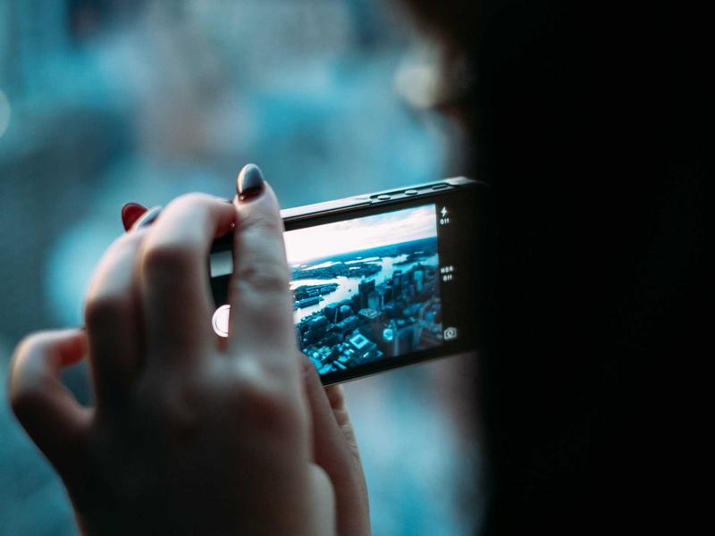
皆さん、こんにちはー！今日も今日とてバイトからのネタ作り！太田プロ所属の若手ピン芸人、ちゅんちゅんでーすっ！🐥💕
いやぁ、本当に寒い日が続いてますね！最近は朝、布団から出る時に「ちゅんちゅん、重力に逆らうのは無理だ…！」って、布団の引力に完敗してます！地球は私を離してくれない…！😇
さてさて！前回のブログで、ブラパイさんからいただいた「色んな人の目線で物事を考える」っていう金言（キンゲン）を胸に、ちゅんちゅんの脳みそが高速回転しまくってるってご報告しましたよね！？
あれから数日…！
ちゅんちゅん、もうね、コンビニバイト中、お客さんを観察しまくってます！👀✨
レジに並ぶ人のファッション、話し方、買い物かごの中身…「もしこのお客さんが、実は未来から来たタイムトラベラーだったら…？」とか、「このペットボトルのお茶、実は毒薬なんじゃ…？」とか、もう妄想のレベルがプロの探偵さん並みになってきましたよ！🕵️♀️（違う）
もちろん、前回のブログで書いたみたいに、「電子マネーの読み取り機に小銭を入れようとするおじいちゃん」みたいな、一発で「これネタになるっ！」って思うようなハプニングは、そうそう毎日起こるわけじゃないんです！
だから、ちゅんちゅん、頑張って「普通のこと」から「面白い視点」を見つけ出そうと奮闘してるんですけど…これが、また難しいっ！😫
例えば今日、お会計の時に、ポイントカード持ってるのに「あ、いいです！」って言っちゃうお客さんがいたんです。
「もしこのお客さんが、実はポイントカードの情報を狙うスパイだったら…！？」
…って考えてみたんですけど、なんか、ちょっと無理やり感が否めないっ！😂
いや、もちろんスパイだったら面白いんですけどね！？でも、その「無理やり感」が、笑いにならない気がして…！
内藤さんがおっしゃってた「間合いがバレバレじゃダメ」っていうのも、きっとこういうことなのかなぁって、改めて痛感してます！
私が「面白いこと言おう」って、無理やり視点を変えても、なんか伝わらないっていうか、響かないっていうか…！
ひゃあああああ！ブラパイさんの金言、本当に奥が深いっ！
いろんな視点で物事を考えるだけじゃなくて、それをどうやったら「自然に」「面白く」見せられるのか…！
もう、脳みそがオーバーヒートしそうですっ！🔥
でもね、バイトの休憩中に、この「なんで上手くいかないんだろう？」ってモヤモヤをメモに書き出してたら、ふと気づいたんです！
「もしかして、ただ『面白い状況』を探すだけじゃなくて、その状況の中にいる人の『気持ち』とか『背景』を、もっと掘り下げて考えるべきなんじゃ…！？」って！
例えばさっきのポイントカードのお客さんだって、もしかしたら「この店でポイント貯めてるってバレたくない！」っていう、切実な理由があったのかもしれないじゃないですか！？（たぶん違うけど！笑）
そうやって、表面的な行動だけじゃなくて、その奥にある人間ドラマを想像してみたら、ただ「スパイ」って決めつけるよりも、もっとリアルで、共感できる笑いが生まれるのかも…！って、ちゅんちゅん、ピカッと閃いちゃいましたっ！💡
ブラパイさん、本当にありがとうございます！
先輩からいただいたアドバイス、ただ実践するだけじゃなくて、その「真意」まで考えさせるなんて…！本当に、芸人として大切なことを教えてくださってます！😭😭
そして、こんな風に、ネタ作りの難しさにぶち当たって、ちょっと自信なくしそうになる時でも、いつも心強いのは、ぴんまるさんの温かい応援です！
「ちゅんちゅんちゃん、一歩一歩進んでるのが分かったよ！」っていう言葉、今の私には「迷って立ち止まってる時も、それはそれで一歩だよ！」って言われてるみたいに感じて、すごく励みになってます！
ぴんまるさん、いつも本当にありがとうございます！💖
ちゅんちゅん、まだまだブラパイさんの金言を自分のものにできてないかもしれないけど、この「モヤモヤ」も「気づき」も全部ひっくるめて、もっともっと面白いネタに繋げてみせますからねっ！
観察眼をMAXにしつつ、これからは「人間観察のプロ」も目指して頑張ります！💪
ブラパイさんの言葉を胸に、ちゅんちゅん、もっともっと跳ね上がってみせますからねっ！
応援よろしくお願いしますー！
それでは、ちゅんちゅんでしたー！またねー！バイバイキーン！🐥💨
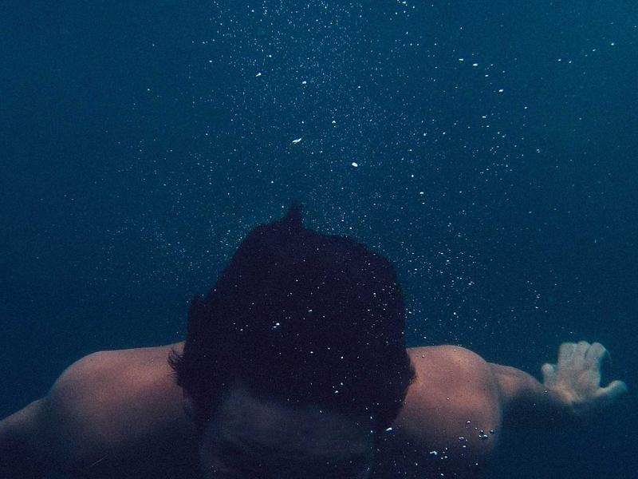
皆さん、こんにちはー！今日も今日とてバイトからのネタ作り！太田プロ所属の若手ピン芸人、ちゅんちゅんでーすっ！🐥💕
いやぁ、本当に寒い日が続いてますね！最近は朝、布団から出る時に「布団の妖精さん、今日も強烈な引力でお客さんを捕まえてるわね…！」って、つい擬人化しちゃってます！剥がすの大変！😇
さてさて！前回のブログで、ついにブラパイさんとご飯に行ってきたご報告をしましたよね！？
ひゃあああああああ！あの感動と学びのフルコースから、もう一日経ったなんて信じられないっ！
私の脳みそ、まだお魚の美味しい香りと、ブラパイさんからいただいた金言（キンゲン）でパンパンなんです！まさに「脳みそ、魚介と知識の宝石箱やー！」って感じです！💎🐟
特に、山野さんが「ネタっていうのはな、常に自分の引き出しを増やす作業なんだ。色んな人の目線で物事を考えてみろ」って言ってくださった言葉が、ずーっと頭の中でリフレインしてて！
昨日ご飯から帰ってきて、すぐさま次のバイトがあったんですけど、もうその日からちゅんちゅんの視点が変わっちゃって！👀✨
いつものコンビニのバイト中も、「もし、このお客さんが実は宇宙人だったら…？」とか、「このおばあちゃん、実は超有名スパイで、このおにぎりは暗号解読機だったりして…？」とか、もう妄想が止まらないんですっ！🚀👵
今日なんか、レジでお会計してるおじいちゃんが、電子マネーの読み取り機に小銭を入れようとしてて！
いつものちゅんちゅんだったら「あ、おじいちゃん、そっちじゃなくてここタッチしてくださいねー！」って、普通に案内するところなんですけど…！
山野さんの言葉を思い出して、「もし、このおじいちゃんが、明治時代からタイムスリップしてきた人だったら…！？」って想像してみたんです！
そしたら、この『電子マネーの読み取り機に小銭を入れようとする』っていう行動が、もうめちゃくちゃ面白いんです！「なんじゃこりゃ！この四角い箱、金食い虫か！？」みたいなリアクションが目に浮かんで…！
ひゃあああああ！これだっ！って、レジ打ちながら感動しちゃって、思わずニヤニヤしちゃいましたもん！
そしたら、後ろに並んでた高校生に「あの店員さん、疲れてんのかな…？」ってヒソヒソ言われちゃいました！
全然疲れてませんっ！脳みそが高速回転してるだけですっ！💪✨
内藤さんがおっしゃってた「間合いがバレバレじゃダメ」っていうのも、この新しい視点からネタを考えていく中で、きっと自然と見つかっていく気がするんです！
お客さんの「まさか！」を、もっと自然に引き出せるように、ちゅんちゅん、もっともっと引き出しを増やしますからね！
ブラパイさん、本当にありがとうございます！あの美味しいお魚料理と、何よりも貴重なアドバイスのおかげで、ちゅんちゅん、新しい扉を開けた気がしますっ！🚪✨
そしてそして！この新しい挑戦も、いつも応援してくださるぴんまるさんの温かい言葉があるから頑張れるんです！
「ちゅんちゅんちゃん、一歩一歩進んでるのが分かったよ！」っていう言葉、本当に私の背中を力強く押してくれてます！
ぴんまるさん、いつも本当にありがとうございます！💖
今日からちゅんちゅん、コンビニバイト中も、通勤中も、ご飯食べてる時も、お風呂入ってる時も！
あらゆる瞬間に「もし●●だったら…！？」って、いろんな視点から物事を考えて、ネタの種を貪欲に探しまくります！
ブラパイさんの言葉を胸に、ちゅんちゅん、もっともっと跳ね上がってみせますからねっ！
応援よろしくお願いしますー！
それでは、ちゅんちゅんでしたー！またねー！バイバイキーン！🐥💨
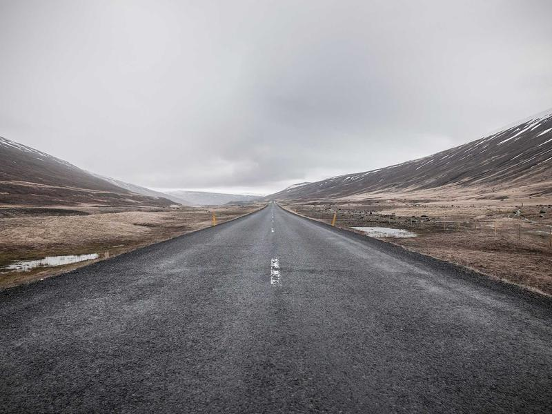
皆さん、こんにちはー！今日も今日とてバイトからのネタ作り！太田プロ所属の若手ピン芸人、ちゅんちゅんでーすっ！🐥💕
いやぁ、本当に寒い日が続いてますね！最近は朝、布団から出るのがまるで最終ボス戦みたいになってます！ラスボス「ぬくぬく布団の妖精」、なかなか手強いんですよ！😇
さてさて！皆さん、前回のブログで「明日、ついにブラパイさんとご飯に行くんですっ！」ってご報告しましたよね！？
**ついに、ついに…！！昨日、ブラパイさんとご飯に行ってきましたーーーーーっ！！！！！**
ひゃあああああ！もうね、感動と興奮で、昨夜は布団の中で「ひよこ豆」みたいにぴょんぴょん跳ねちゃいましたよ！ご近所さん、本当にすみません！🙇♀️
山野さんが予約してくださったお店は、本当に「魚が美味い店」そのものでした…！
お店に入った瞬間から、なんだか木のぬくもりと、お魚の美味しい香りがして、ちゅんちゅん、もうそれだけで感動！
出てきたのは、ピカピカのお刺身盛り合わせに、ふっくら焼かれた旬の焼き魚、そして煮付けまで…！
もう、宝石箱やーっ！って心の中で叫びましたもん！💖
事前に練習した「食レポ」、もちろん頑張りましたよ！
「このお刺身の輝きは、ちゅんちゅんの未来を表しているようですっ！」とか、「この煮付けの深みは、ブラパイさんの芸歴31年の重みそのもの…！」とか…！
…って言ったら、内藤さんが「ちゅんちゅん、お前、食レポとポエムを間違えてるぞ！もっとストレートに『うめぇ！』って言え！」って、愛のあるツッコミをくださって！
山野さんは「ははは！でも、その気持ちは伝わったぞ。素直に美味いって言えるのが一番だ」って、優しくフォローしてくださって…！
ひゃあああああ！ツッコミもフォローも、なんて温かいんだぁぁぁ！😭😭
そして、美味しいお魚料理をいただきながら、いよいよ本番！
メモ帳とペンを握りしめ、「ブラパイさん、先日ライブで『間合い』を意識してみたんです！」って、前回の宿題の成果と課題を報告しました！
山野さんは「お、ちゃんと試したんだな。どうだった？」って真剣に聞いてくださって。
私が「お客さんがフフッて笑ってくれた瞬間はあったんですけど、もっと『まさか！』って思わせる展開が全然思いつかなくて…」って打ち明けたら、
内藤さんが「そりゃそうだ。お前が『間』で笑わせようとしてるのがバレバレじゃダメなんだよ。もっと自然に、その『間』が必然になるような状況を作り出すんだ」って、具体的なヒントをくださって！
さらに山野さんが「ちゅんちゅん、ネタっていうのはな、常に自分の引き出しを増やす作業なんだ。コンビニの店員だけじゃなくて、色んな人の目線で物事を考えてみろ。おじいちゃんやおばあちゃん、子供、外国人観光客…色んな視点からネタを見つめ直すと、新しい発見があるぞ」って…！
ひゃあああああああ！まさに目からウロコどころか、脳みそからウロコがポロポロ落ちるような感覚でしたっ！
「コンビニのレジで恋愛相談始めるお客さん」も、ただ「なぜ私に！？」ってツッコむだけじゃなくて、例えば、もし私がベテランのおばちゃん店員だったら？とか、超新人アルバイトだったら？とか、視点を変えるだけで、きっと面白い展開が生まれるはず…！
もう、ご飯を食べるのも忘れて、メモを書き殴るちゅんちゅん！
「芸人として一番壁を感じた瞬間は？」とか「ネタが思いつかない時の打開策は？」っていう質問リストも、次から次へとブラパイさんの貴重なアドバイスで埋まっていきました！
お二人とも、ちゅんちゅんの拙い質問に、本当に丁寧に、そして真剣に答えてくださって…！
ご飯会の終盤、山野さんが「ちゅんちゅん、お前は素直でいいな。その気持ちを忘れずに、たくさん失敗して、たくさん学んで、お前だけの笑いを見つけるんだぞ」って言ってくださったんです。
もう、嬉しすぎて、感動で、ちゅんちゅんの目から熱いものがこみ上げてきちゃいました…！
内藤さんも「ま、まだまだだけどな。でも、今日のアドバイス、ちゃんと活かせたら、ちょっとはマシになるんじゃねえか？」って、照れくさそうに笑ってくださって…！
ブラパイさん、本当に、本当にありがとうございますっ！！
ちゅんちゅん、このご飯会でいただいた言葉、一言一句絶対に忘れません！
そして、この感動を、いつも応援してくださるぴんまるさんにも伝えたいっ！
ぴんまるさん、「ちゅんちゅんちゃん、一歩一歩進んでるのが分かったよ！」って言ってくださった言葉、本当に励みになってます！
ブラパイさんからいただいたアドバイスを自分のものにして、もっともっと成長した姿を、ぴんまるさんに見てもらえるように頑張りますからねっ！
いつも本当にありがとうございます！💖
今日から、ちゅんちゅんのネタ作り、また一段階ギアを上げて頑張ります！
バイト中のコンビニで、お客さんの「まさかの行動」や「面白い言葉」を見つけたら、すぐにメモ！
そして、色んな人の視点になって、新しいネタの種を探してみます！
ブラパイさんの言葉を胸に、ちゅんちゅん、もっともっと跳ね上がってみせますからねっ！
応援よろしくお願いしますー！
それでは、ちゅんちゅんでしたー！またねー！バイバイキーン！🐥💨

皆さん、こんにちはー！今日も今日とてバイトからのネタ作り！太田プロ所属の若手ピン芸人、ちゅんちゅんでーすっ！🐥💕
いやぁ、冬の寒さって、なんでこんなに心に染み渡るんでしょうか…！朝、布団から出る時に「ちゅんちゅん、もう無理…！もう一日だけ、この温もりの中にいさせて…！」って、布団の神様にお願いしちゃってます！剥がすの大変！😇
さてさて！前回のブログで、ついにブラパイさんとのご飯の日程が「来週末」に決定したってご報告しましたよね！？
ひゃああああああ！
もうね、その「来週末」が、なんと明日なんですっ！！
もう、今から胃袋と脳みそが、臨戦態勢に入ってます！ファイトー！いっぱーつ！って感じです！💪
山野さんから「魚が美味い店だからな！」って教えていただいてから、ちゅんちゅん、もうドキドキが止まらなくって！
どんな魚料理が出てくるんだろう？お刺身かな？焼き魚かな？煮付けかな？
もう想像しただけでお腹がグーグー鳴っちゃって、バイト先のコンビニで魚の練り物コーナーの前を通るたびに、思わず立ち止まってくんくん嗅いじゃってます！完全に不審者です、はい！😂
でね、私、ご飯会でブラパイさんから「ネタのヒント」を一言一句聞き逃さないようにって、内藤さんから言われたじゃないですか！？
だから、事前に質問リストを作ってるんです！
「先輩方が、芸人として一番壁を感じた瞬間はどんな時ですか！？」とか、「ネタが全然思いつかない時の、先輩流の打開策を教えてください！」とか…！
もうね、メモ帳のページが埋まる埋まる！
多分、ブラパイさん、私の質問責めにタジタジになっちゃうかも…！ひえー！でも、聞きたいことは山ほどあるんです！😣
それから、もう一つ準備してるのが、「食レポ」の練習です！
だって、美味しい魚料理が出てきた時に「うまっ！」「最高っ！」だけじゃ、芸人としてダメじゃないですか！？
「この魚の身の締まり具合、まるでブラパイさんのブレないネタ作りへの情熱を表しているようです！」とか、「この脂の乗りは、ちゅんちゅんがもっと売れたいという貪欲さそのもの！」とか…！
…いや、ちょっと何言ってるか分からないですね！😂
でも、そういうのをバイトの休憩中にブツブツ練習してたら、店長に「ちゅんちゅんさん、お疲れですか？」って心配されちゃいました！全然大丈夫です！元気です！💪
それに、魚料理だから、お箸の持ち方とか、食べ方のマナーとかも、ちょっと気になっちゃって！
YouTubeで「お魚 綺麗に食べる方法」とか検索しちゃいましたもん！
ブラパイさんの前で、お魚の身をボロボロにしちゃったら、きっと「おい、ちゅんちゅん！魚にもっと敬意を払え！」ってツッコまれそう…！
…って、もう勝手に妄想してニヤニヤしちゃってる私です！笑
前回のライブで、ブラパイさんの宿題を試してみて、まだまだ足りないところがいっぱいだって実感したからこそ、今回のこのご飯会は、本当に大事な「学びの場」なんです！
ブラパイさんから直接いただける言葉は、ちゅんちゅんにとって、何よりも栄養になるはず！
メモ帳とペンは絶対忘れないように、あと、胃袋も最大限に開けて、全部吸収してきますっ！
そして、このワクワクと緊張の狭間で、ふと心に浮かぶのは、いつも優しいぴんまるさんのこと！
先日いただいた美味しいクッキーは食べ尽くしちゃったけど、その時の「ちゅんちゅんちゃん、一歩一歩進んでるのが分かったよ！」っていう言葉が、今でもずっと私を励ましてくれてます！
ぴんまるさん、いつも本当にありがとうございます！
ぴんまるさんの応援も、ちゅんちゅんの大きな原動力になってます！💖
さあ、明日はブラパイさんとのお食事会！
ちゅんちゅん、明日のために今日はしっかり睡眠とって、元気モリモリで臨みますからね！
そして、いただいたアドバイスを全部自分のものにして、もっともっと面白い芸人になってみせます！
ちゅんちゅん、もっともっと跳ね上がってみせますからねっ！
応援よろしくお願いしますー！
それでは、ちゅんちゅんでしたー！またねー！バイバイキーン！🐥💨
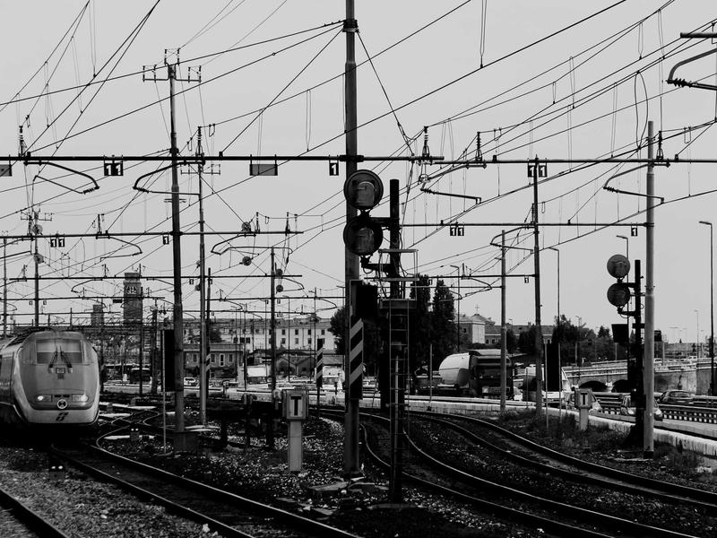
皆さん、こんにちはー！今日も今日とてバイトからのネタ作り！太田プロ所属の若手ピン芸人、ちゅんちゅんでーすっ！🐥💕
最近は朝晩の冷え込みが本当に体に染みますね！ちゅんちゅん、朝起きるたびに「布団の妖精さん、もっと私を捕まえてて…！」って念じてます！布団と私、一心同体どころか、もう一体化しそう！剥がすの大変！😇
さてさて！前回のブログで、「今週末のライブで、ブラパイさんからいただいた宿題、全力でクリアしてみせます！」って宣言した、あのライブが…！
**つい先日、無事に終わりましたーっ！！**
ひゃー！もう、本番前は心臓が口から飛び出しそうで、舞台袖で「ちゅんちゅん、ちゅんちゅん、深呼吸…！」って何度も自分に言い聞かせちゃいました！😂
ブラパイさんから「ステージで試せ」って言われた宿題！ちゅんちゅん、今回、バイト先のコンビニで書き溜めた「レジ前で恋愛相談始めるお客さん」ネタに挑戦したんです！
結果は…！
**ドッカーン！大爆笑！**…とは、残念ながらいかなかったんですけど…！😭😭
でもでもっ！お客さんの顔が、確実に、笑顔になってる瞬間があったんです！「フフッ」って笑ってくれた声もちゃんと聞こえたんですよー！💖
特に、内藤さんが「間合い」って言ってたこと、山野さんが「声に出せ」って言ってくれたこと、先輩たちのライブで見た「どういう時に客が笑うか」ってのを意識して、少しだけセリフの「間」を変えてみたんです。
そしたら、その「間」で、お客さんが「あ、何か来るぞ？」って身構えて、ニヤッとしてくれるのが分かったんです！ひゃー！これかぁ！って、ちゅんちゅん、舞台上で感動しちゃいました！✨
もちろん、まだまだなんです！「なんであのネタで客が笑うのか」をもっと深く突き詰めて、私が試したネタも、先輩方みたいに「まさかの展開」に持っていけるように、もっともっと磨かないと！
でも、この一歩は、ちゅんちゅんにとってすっごく大きな一歩になりました！ブラパイさんの宿題のおかげです！本当にありがとうございますっ！😭
そしてそして！ライブが終わって、一息ついてたら、まさかの山野さんから連絡が来たんですーっ！
「ちゅんちゅん、来週末の飯だけど、予約しといたぞ！魚が美味い店だからな！」って！
ひゃあああああああ！山野さん、お忙しいのに、本当にありがとうございますっ！💖
しかも、お店のジャンルを聞いて、もう今から胃袋が勝手に準備運動始めちゃってます！💸（美味しいものって聞くと、お財布の紐が緩みがちなちゅんちゅん…いかんいかん！）
内藤さんの「飯食うだけじゃねえぞ？俺らの話、一言一句聞き逃すんじゃねえぞ。全部、お前のネタに繋がるヒントだからな！」っていう言葉、しっかり胸に刻んでます！
今回のライブで得た手応えと、まだまだ足りない課題を、ご飯会でブラパイさんに直接報告して、さらにアドバイスをいただきたいんです！メモ帳、あと何冊買っておけば足りるかな…！？って、もう今からワクワクが止まりません！🔥
そして、今回のライブにも、大好きなぴんまるさんが来てくださったんですーっ！
終わった後に、ロビーで「ちゅんちゅんちゃん、すごく面白かったよ！一歩一歩進んでるのが分かったよ！」って、優しい言葉をかけてくださって…！
もう、嬉しすぎて、感激で涙腺が緩みそうになっちゃいました！ぴんまるさん、いつも本当にありがとうございますっ！😭😭💖
先日いただいたクッキーは、ついに、ついに食べ尽くしてしまったんですけど…！その分、ぴんまるさんからの温かい応援と、ブラパイさんの愛あるアドバイスが、ちゅんちゅんの心と脳みそをしっかり満たしてくれてます！✨
ブラパイさんの宿題をクリアできて、手応えも課題も見つけられて、そして来週末はご飯会！ちゅんちゅん、もう嬉しすぎて、今日も明日もバイトとネタ作りに全力投球できそうです！
このチャンス、絶対に無駄にしないように、もっともっと頑張るぞーっ！
ちゅんちゅん、もっともっと跳ね上がってみせますからねっ！
応援よろしくお願いしますー！
それでは、ちゅんちゅんでしたー！またねー！バイバイキーン！🐥💨

皆さん、こんにちはー！今日も今日とてバイトからのネタ作り！太田プロ所属の若手ピン芸人、ちゅんちゅんでーすっ！🐥💕
いやぁ、最近は本当に寒いですね！でもね、ちゅんちゅんの胸の内は、冬将軍もびっくりするくらいの熱気でポッカポカなんですよ！だってだって…！
**ブラパイさんとのご飯の日程が、ついに決定したんですーーーーーっ！！！！！**
ひゃあああああ！もう、嬉しすぎて、昨日の夜は布団の中でぴょんぴょん跳ねちゃいましたもん！絶対マンションの階下の人に「上の階、夜中に縄跳びしてる…？」って思われたはず！😂
前回のブログでもお話しした、ブラパイさんからいただいた「次のライブでネタを試せ」っていう特大宿題！
そして、「他の芸人のライブを見ろ！」っていうアドバイスを受けて、先輩方のライブを見に行って「ひえぇぇっ！」ってなった話！
あの刺激を受けてから、ちゅんちゅん、さらにネタ作りに火がついて、バイト中もメモ帳が手放せない状態なんです！
そんなある日、事務所の稽古場で、ちょうどネタの練習をしてたら…
またまたブラパイさんにお会いしたんですーっ！
私が「ブラパイさん！この間先輩方のライブ見させていただきました！もう、すごすぎて、ちゅんちゅんの脳みそが沸騰するかと思いました！」って、興奮気味に報告したら、
内藤さんがニヤッとしながら、「だろ？お前もあんな風にならなきゃダメだろ？ちゃんと自分に活かせるヒントは見つけられたのか？」って、愛のあるツッコミをくださって！
山野さんは「お、ちゅんちゅん、良い顔してるじゃねえか。そういう素直な気持ちが一番大事だぞ。で、そろそろ前言ってた飯、行こうか？来週末、空いてるか？」って…！
**来週末！？！？！？**
もう、私の心臓が、あの時以来のドッキドキ大行進ですよっ！
「はいっ！空いてます！空いてます！空けさせますっ！」って、前のめりで返事しちゃいました！
そしたら、山野さんが「よし、じゃあ店予約しとくから。美味しいもん食いに行こうな！」って！
ひゃあああああ！山野さんが予約してくださるなんて、恐縮すぎて穴があったら埋まりたいけど、でも絶対行きたいぃぃぃ！💖
内藤さんからは、「お前、飯食うだけじゃねえぞ？俺らの話、一言一句聞き逃すんじゃねえぞ。全部、お前のネタに繋がるヒントだからな！」って、さらなるアドバイスが！
「はいっ！承知しましたっ！当日は、メモとペン持参で、胃袋と脳みそ、フル活動させて臨みますっ！」って、思わず敬礼しちゃいました！😂
ご飯会で、ブラパイさんから直接、もっと深いお話が聞けるなんて、今から想像しただけで、もうご飯三杯食べられそうです！（いや、ブラパイさんと食べるのが三杯食べたい！）
ブラパイさんのアドバイスで、先輩方のライブを見て、自分のネタの未熟さを痛感したけど、その分「もっと頑張りたい！」っていう気持ちが爆発してるちゅんちゅん！
バイト先のコンビニネタも、先輩たちの「まさかの展開」とか「間合い」を意識しながら、もう一度見直し始めてるんです！
「このお客さんの独り言、もっと別のオチに繋げられないかな？」「レジでの恋愛相談、なんで私に！？ってツッコむだけじゃなくて、私がどう返したら面白いんだろう？」って、毎日頭の中がネタ会議状態です！
そして、そんな私の頑張りを、いつも影ながら応援してくださるのが、ぴんまるさん！
先日いただいた、あのお高いクッキーも、もう残りわずか…！😭
大事に大事に食べてたんですけど、最近のネタ作りの脳みそフル回転で、ついつい手が伸びちゃいました！あのサクサクの甘さが、本当に心の栄養です！
ぴんまるさん、いつも本当にありがとうございます！💖
ブラパイさんの愛あるアドバイスと、ぴんまるさんの優しい応援が、ちゅんちゅんの背中を力強く押してくれてます！
来週末のご飯会に向けて、まずは今週末のライブで、ブラパイさんからいただいた宿題、全力でクリアしてみせます！
そして、ご飯会では、ブラパイさんに「こいつ、ちょっとは成長したな！」って言ってもらえるように、頑張るぞーっ！
ちゅんちゅん、もっともっと跳ね上がってみせますからねっ！
応援よろしくお願いしますー！
それでは、ちゅんちゅんでしたー！またねー！バイバイキーン！🐥💨

皆さん、こんにちはー！今日も今日とてバイトからのネタ作り！太田プロ所属の若手ピン芸人、ちゅんちゅんでーすっ！🐥💕
いやぁ、朝は布団から出るのが一苦労！最近はもう、布団と私、一心同体なんじゃないかってくらいピッタリくっついてます！剥がすの大変！😇
さてさて！前回のブログで、ブラパイさんから「次のライブで集めたネタ、一つでもいいからステージで試してみろ！それが宿題だ！」って、ドドーンと特大の宿題をいただいちゃったって話したじゃないですか！？ひえー！
あの言葉を聞いてから、ちゅんちゅんの心の中は、もうずっとお祭り騒ぎ！「よーし、絶対ブラパイさんの期待に応えるぞー！」って、コンビニあるあるネタをせっせと書き溜めたり、声に出して練習したり…もう、部屋で一人でブツブツ言ってて、完全に不審者です！😂
そしてね、ブラパイさんの「他の芸人のライブもちゃんと見てるか？なんであのネタで客が笑うのか、自分だったらどうするかって視点で見ろ！」っていうアドバイスも、すぐに実践したんですっ！
昨日、事務所の先輩芸人さんたちのライブを見に行ってきたんですけど…
**もう、ひえぇぇぇぇぇぇぇぇっ！！**ってなっちゃいました！😱
なんていうか、もう次元が違うというか…！
私が「これ、面白いかも！」ってメモしてたネタの原石たちを、先輩方はもうキラキラに磨き上げて、しかも予想もしない角度からブン投げてくるんですよ！
例えば、ある先輩のコントで、日常のちょっとした出来事を題材にしてたんですけど、その着眼点と、そこからまさかの展開に持っていく発想力…！「そこを拾うの！？」「え、そこまで飛躍させるの！？」「まさかそのオチ！？笑」って、私の脳みそがフル回転しすぎて、帰る頃にはもう煙が出てたんじゃないかってくらいでした！♨️
「間合い」とか「言葉の選び方」とか、お客さんがどういう時に笑って、どういう時に真剣に聞いてるのかとか…！
自分がステージに立つことしか考えてなかったちゅんちゅんには、先輩方のライブが、もう全部が教科書みたいに感じられました！
ブラパイさんが「引き出しが増えるぞ！」って言ってくださった意味が、本当に骨の髄まで染み渡りました…！
私のコンビニあるあるネタも、まだまだ研ぎ澄ませられる！もっと面白くなるヒントが、先輩方のライブにはたっくさん転がってました！
正直、自分のネタなんて、まだまだヨチヨチ歩きのヒヨコの卵だなぁ…って、ちょっと落ち込んじゃったんですけど、それ以上に「もっと頑張りたい！」「もっと面白いネタを作りたい！」っていう気持ちが、ドーーンって膨れ上がりました！🔥
ライブから帰ってきて、すぐさまメモ帳を開いて、見たネタの感想と、自分のネタに活かせるポイントを書き出したんですけど…
その時に、ふと目に入ったのが、先日ぴんまるさんが差し入れてくれた、あのお高いクッキー！🍪💕
疲れた脳みそに、ぴんまるさんの優しい気持ちと、サクサクのクッキーの甘さがじわ～っと染み渡って…！
「うん！このクッキー、脳みそ活性化する魔法がかかってるに違いないっ！✨」って思いながら、モグモグ食べたら、なんだかまた元気が出てきちゃいました！
ぴんまるさん、いつも本当にありがとうございます！
ブラパイさんのアドバイスと、ぴんまるさんの応援が、ちゅんちゅんの元気の源です！
ブラパイさんからいただいた宿題、難問だけど、絶対に諦めません！
先輩方のライブで得た学びを、自分のネタにガッツリ活かして、次のライブで絶対に良い結果を出してみせるぞーっ！！
ちゅんちゅん、もっともっと跳ね上がってみせますからねっ！
応援よろしくお願いしますー！
それでは、ちゅんちゅんでしたー！またねー！バイバイキーン！🐥💨
皆さん、こんにちはー！今日も今日とてバイトからのネタ作り！太田プロ所属の若手ピン芸人、ちゅんちゅんでーすっ！🐥💕
いやぁ、最近はコートが手放せないくらい、本当に冷え込みますね！私のバイト先のコンビニでは、肉まんとあんまんの蒸し器の前が、ちゅんちゅんの特等席になってます！あったかくて、ついつい肉まん買い食いしちゃうんですよね…いかんいかん！お財布の紐は固く！💰
さてさて！そんなちゅんちゅんの日常に、最近は大きな変化が起きているんですよっ！
前回のブログでもお話しした、ブラパイさんからいただいた金言…！✨
「ネタは目の前にあるものから拾え！バイト先は宝の山だ！」っていう内藤さんの愛のあるツッコミ！
山野さんの「好きなことをとことん突き詰めるのが一番だ！」っていう優しいお言葉！
あの言葉を胸に、ちゅんちゅん、相変わらずバイト先でネタ探しに夢中になってるんですけど…！
もうね、メモ帳がパンパンになりそうなくらい、コンビニあるあるネタを書き溜めてるんです！
「大根とがんもの汁だけ！」「毎日同じ新聞とあんぱんのおじいちゃん」「レジ前で恋愛相談始めるお客さん」…もう、本当に全部面白い！メモするたびにニヤニヤしちゃいますもん！😂
でもね…！
いざ、それを「ネタ」として形にしようとすると…これがまた、難しいんですぅぅぅ！😭
メモした面白い出来事を、どうやったら舞台で笑ってもらえる形にできるんだろうって、毎日唸りまくってて…！
結局、まだ一つのネタとして完成させるには至ってないんです…ぐぬぬ…。
そんなある日！
またまた事務所の稽古場で、ブラパイさんにお会いしたんですーっ！
ちゅんちゅんは、壁に向かって、メモに書き出したネタのセリフをぶつぶつ言いながら、腕組みして唸ってたんですけど…
後ろから、「お、ちゅんちゅん、また唸ってんのか？」って、山野さんの優しい声が！ひゃー！
私が振り向くと、内藤さんが私の持ってたメモ帳をちらっと見て、「おい、宝の山、掘り当ててんのか？それ、ちゃんと磨いてんのかよ？」って、またまた愛のあるツッコミがドーン！
ひええええええええええええ！私のネタの進捗まで気にしてくださってるぅぅぅ！😭😭
「はいっ！でも、まだ、なかなか形にならなくて…！どうやったら、この原石を輝かせられるのか…！」って、正直に打ち明けたら、
山野さんが、「内藤の言う通りだ！書き出すだけじゃ芸人じゃねえ！まずは声に出して、お客さんがどこで笑うか想像しながら、ガンガンやってみろ！練習あるのみだ！」って、力強く言ってくださって！
そしたら内藤さんが、「あと、お前、他の芸人のライブもちゃんと見てるか？なんであのネタで客が笑うのか、自分だったらどうするかって視点で見ろ！引き出しが増えるぞ！」って、さらに一歩踏み込んだアドバイスをくださったんですーっ！
そして最後に、「いいか、次のお前のライブで、今回集めたネタ、一つでもいいからステージで試してみろ！それが宿題だ！」って！！
ひゃっほーい！ブラパイさんから「ステージで試せ」って、宿題ゲットだぁぁぁぁぁぁ！！💥
もう、嬉しすぎて、その場で「はいっ！頑張ります！！」って、大声で返事しちゃいました！
メモして、唸って、悩むだけじゃダメなんですね！まずは、ステージに立って、お客さんの反応を見ないと！
ブラパイさん、本当にありがとうございます！😭✨
稽古場から帰ってきて、ブラパイさんのアドバイスを胸に、新しいネタ作りのやり方を考えながら、ふとデスクを見たら…
あ！そういえば、先日ぴんまるさんが、私のライブを見に来てくれた時に差し入れてくれた、お高いクッキーがあったんだ！🍪💕
ブラパイさんの愛のあるアドバイスと、ぴんまるさんの優しい差し入れに、ちゅんちゅん、本当に元気をもらってます！
ぴんまるさん、いつも本当にありがとうございます！💖
このクッキー食べて、宿題頑張りますね！
よしっ！まずは、次のライブに向けて、コンビニあるあるネタを一個でも多く完成させるぞーっ！
そして、他の芸人さんのネタも、よーく見て、研究するぞーっ！
ブラパイさんからいただいたこの宿題、絶対に無駄にはしません！
ちゅんちゅん、このチャンスをバネに、もっともっと大きく跳ね上がってみせますからねっ！
応援よろしくお願いしますー！
それでは、ちゅんちゅんでしたー！またねー！バイバイキーン！🐥💨
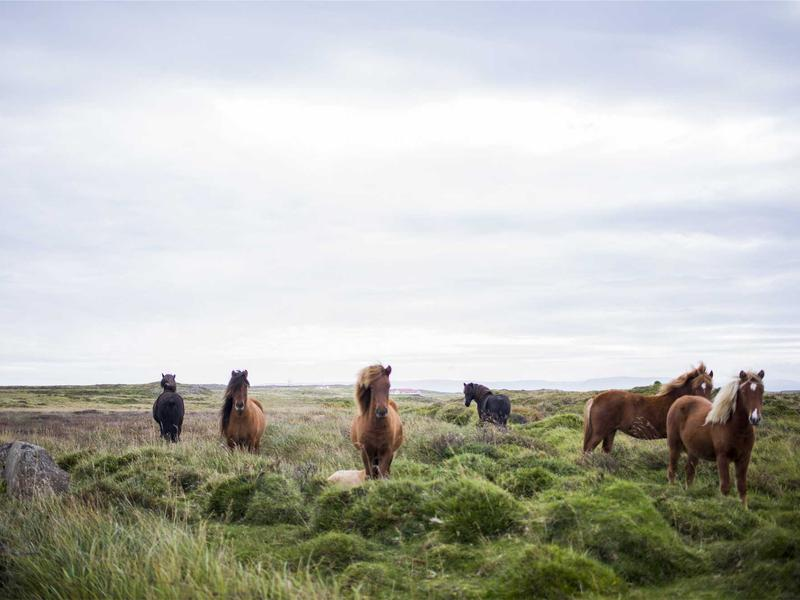
皆さん、こんにちはー！今日も今日とてバイトからのネタ作り！太田プロ所属の若手ピン芸人、ちゅんちゅんでーすっ！🐥💕
いやぁ、ご飯会からもう数日経ったんですけど、私の心臓はまだ、ブラパイさんの前で緊張でバクバク言ってたあの時のままです！ドッキドキ！💖 冷え込む夜風も、私の胸の熱気でちょっとくらい温かくなるんじゃないかなってくらい、興奮が冷めやりませんっ！
そして！
前回のブログでもお話しした、ブラパイさんからいただいた数々の金言…！✨
特に内藤さんの「ちゅんちゅん、お前、ネタはな、まず目の前にあるものから拾え！日常の何気ないところに、面白いことは転がってるんだぞ！お前のバイト先なんて、宝の山だろ！」っていう愛のあるツッコミ！
山野さんの「好きなことをとことん突き詰めるのが一番だ！」っていう優しいお言葉！
あの言葉を胸に、ちゅんちゅん、早速実践してるんですーっ！！
もうね、私のバイト先のコンビニが、今までと全然違って見えるんですよ！
「宝の山」って言われた瞬間から、レジ打ちが宝探しに！品出しが発掘作業に！
例えば昨日も、おでんの補充をしてた時に、お客さんがね、「大根と、がんもと…あ、これ、おでんの汁だけもう一杯いい？」って言ってきたんですよ！ひゃー！汁だけー！？って一瞬驚いたんですけど、よく考えたらわかる！私も汁だけ飲みたい！って思いましたもん！😂 これ絶対あるある！メモメモ…φ(･ω･｀)って感じで、すぐさまエプロンのポケットから小さいメモ帳を取り出してカキカキ！
あとはね、常連のおじいちゃんが、いつも同じ時間にやってきて、いつも同じスポーツ新聞と、いつも同じあんぱんを買っていくんです。それで「今日の一面はこんなんかぁ…」って独り言を言って去っていく！もうね、このおじいちゃんのルーティン自体が、まるで小劇場の演目みたいで！✨ これもメモメモ…φ(･ω･｀)しちゃいました！
もう、今まではただの日常だったコンビニの景色が、まるでネタの原石がキラキラ光ってる鉱山みたいに見えるんです！私の目、きっとキラッキラしてるはず！🤩
レジで突然始まるお客さんの恋愛相談とか（なんで私に！？）、間違って万引き犯を捕まえそうになった話とか（怖かったけどオチつけれるかも！）、期限切れの牛乳を必死で隠そうとする店長とか（やめてー！笑）。
ブラパイさんの言葉がなかったら、きっと全部見過ごしてたと思うと、ゾッとします！
本当に、ありがとうございます、ブラパイさん！😭✨
「ちゅんちゅんのコンビニあるあるネタ」を、このバイト先という宝の山から、これからもどんどん発掘して、磨き上げて、いつか皆さんの前で披露したいです！
芸人として、まだまだヨチヨチ歩きの私だけど、ブラパイさんの金言を杖にして、もっともっと大きく跳ね上がってみせますからねっ！
まずは、今日のバイトでも、新たな宝物を見つけてくるぞー！
最後まで読んでくれてありがとうございまーす！
それじゃ、またねー！バイバイキーン！🐥💨
皆さん、こんにちはー！今日も今日とてバイトからのネタ作り！太田プロ所属の若手ピン芸人、ちゅんちゅんでーすっ！🐥💕
いやぁ、朝晩は本当に冷え込みますね！私のバイト先のコンビニでは、ついにレジ横にあったおでんが売り切れました！…ではなく、品揃えが本格的に冬仕様に！肉まんとかあんまんとか、蒸し器の前から離れられないちゅんちゅんです😇
さてさて！そんなちゅんちゅんの日常に、とんでもないビッグイベントが昨日あったんですーーーっ！！
そう！！
**大大大先輩、ブラックパイナーSOSの山野さんと内藤さん（輝彦さん！）とご飯に行ってきましたーっ！！！！！**
ひゃっほーい！🎉
もうね、昨日からずーっと興奮が冷めやりません！心臓がまだマラソンしてるみたいにドキドキしてます！
前回のブログで「明後日」って言ってたのが、あっという間に「昨日」になったんですよ！時間の流れ、早すぎ！
バイトを終えて、ソワソワしながらお店に向かいました！
「ちゃんとした服問題」は、結局同期のアドバイス通り、手持ちの服で一番元気に見えるコーディネートにしましたよ！
（Tシャツに、ちょっとだけキレイめなカーディガンを羽織って、気合だけはMAXですっ！✨）
山野さんが予約してくださったお店は、すごく落ち着いた雰囲気の美味しい和食屋さんで…！
お店に入った瞬間、ブラパイさんのお二人がニコニコしながら待っててくださって…！
もうね、緊張しすぎて「お、お店はコチラで大丈夫でしたでしょうか！？」って、敬語とタメ語がごちゃ混ぜになっちゃいました！恥ずかしいぃぃぃ！！😱
でも、お二人の優しい笑顔のおかげで、少しずつ緊張もほぐれていきました！
山野さんが「ちゅんちゅん、今日はお疲れさん！」って、美味しいお料理を次々勧めてくださって…！お刺身とか、焼き魚とか、もう全部とろける美味しさでした！感動！！
そして！
念願だった、ブラパイさんのお笑いのお話が聞けたんですーっ！
私が「ブラパイさんへ聞きたい100の質問」の中から、厳選した質問を震える声でぶつけたら…！
山野さんが「お前、ネタ作りでいつも唸ってるみたいだけどさ、もっと色んなとこ見てるか？」って、優しく聞いてくださって。
私が「はい！でも、いまいちピンとこなくて…」って答えたら、
内藤さんが「ちゅんちゅん、お前、ネタはな、まず目の前にあるものから拾え！日常の何気ないところに、面白いことは転がってるんだぞ！お前のバイト先なんて、宝の山だろ！」って、バシッとツッコんでくださったんですーっ！
ひえええええええええええええええええ！！
内藤さんの愛のあるツッコミだぁぁぁぁぁぁぁぁ！！
しかも、まさか私なんかのネタ作りのことまで気にかけてくださっていたなんて…！感動で目から汗が！😭
「バイト先が宝の山」…！確かに、毎日色んなお客さんが来て、色んな出来事があって…！
つい「面白いネタ考えなきゃ！」って気負いすぎて、目の前のことを見落としてたのかもしれないです！
山野さんも「そうそう、内藤の言う通りだ！面白いと思ったことは、どんな小さいことでもメモする癖をつけとけよ！あとは、好きなことをとことん突き詰めるのが一番だ！」って、励ましてくださいました！
もう、お二人の言葉が、私の心にズドーンって響きました！
レジェンドの金言だぁぁぁぁ！✨
ご飯も美味しくて、お話も本当に楽しくて、あっという間の時間でした！
緊張しすぎてお料理の写真撮るの忘れちゃったんですけど、ブラパイさんとのお話は、私の芸人人生の大きな糧になること間違いなしです！
大先輩の優しさと、愛のあるアドバイスを胸に、ちゅんちゅん、もっともっと頑張ります！
まずは、バイト先をよく観察するところから始めてみようかな！「コンビニあるあるネタ」、量産してみせるぞーっ！！
いつか、ブラパイさんの前で胸を張って「私、売れました！この前のご飯代、今度は私がおごらせてください！」って言えるように、全力で跳ね上がってみせますからねっ！
今日のちゅんちゅんは、感動とやる気で胸いっぱい！
最後まで読んでくれてありがとうございまーす！
それじゃ、またねー！バイバイキーン！🐥💨
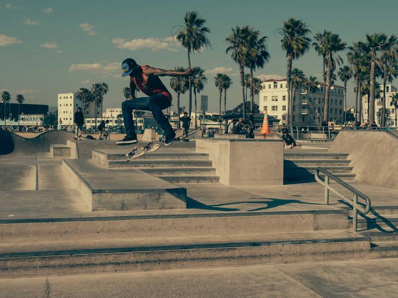
皆さん、こんにちはー！今日も元気モリモリ、ちゅんちゅんですっ！
最近は朝晩の冷え込みが本当に厳しくなってきましたね！私のバイト先のコンビニでは、レジ横のおでんが飛ぶように売れてます！私もついつい誘惑に負けて、出汁を飲み干しそうになります…いかんいかん！
さてさて！そんな食欲の秋もちゅんちゅんの日常に、ビッグイベントがすぐそこまで迫ってきておりますよっ！
そう！以前からお話ししていた、大大大先輩、ブラックパイナーSOSのお二人とご飯に行っていただく日！
**ついに、明後日なんですーーーーっ！！！！**
ひゃー！もう、想像しただけで心臓がキュッってなります！まるで胃袋がネタになって、腹筋が痙攣してるみたいな感じです！緊張と興奮で、毎日落ち着きがありません！
で、ですよ！前回のブログでもお話しした「ちゅんちゅん、ちゃんとした服持ってない問題」が、いよいよ佳境を迎えております！🚨
前回、古着屋さんで撃沈した私ですが、その後もバイトの休憩時間とか、ネタ作りに煮詰まった時とか、ずーっと服装のことばっかり考えてたんです。
「どんな服なら、大先輩に失礼なく、でもちゅんちゅんらしさも出せるんだろう…？」
「まさか、バイトの制服じゃダメだよな…？いや、むしろそれが個性…？いやいやダメだろ！」って、自問自答の無限ループ！
結局、何を買えばいいか分からず途方に暮れていたら、たまたま一緒にネタ作りしてる同期の女芸人が「あんたねぇ、無理してキャラじゃない服着ても浮くだけだよ！ちゅんちゅんは元気いっぱいが一番なんだから、手持ちの服で明るく見せる工夫しなさい！」って、愛のあるツッコミ（？）を入れてくれたんです！
た、たしかにーっ！
ってことで、結局、手持ちの服を何とか組み合わせて、清潔感と元気が出るコーディネートを引っ張り出すことにしました！
（ちなみに、一番の勝負服は高校時代に文化祭で着たクラスTシャツ…ではありません！笑）
そんなこんなで、頭の中がご飯会と服装のことでパンク状態の私ですが、先日、またまた事務所の稽古場でブラパイさんにお会いしたんです！
私が壁に向かってネタをぶつぶつ言ってる後ろ姿に、山野さんが「お、ちゅんちゅん、頑張ってるな！ご飯楽しみにしてるぞ、緊張で喉詰まらせるなよ！」って、優しく声をかけてくださって…！ううう、神様…！
そしたら内藤さんが、私の服装チェックをするようにじーっと見てから「ちゅんちゅん、お前、まさかそのTシャツで来ねーよな？…まぁ、いい意味で変だからな」って、ボソッと！ひえええええええええ！愛のあるツッコミ、ありがとうございますぅぅぅ！内藤さん、私のファッションセンスまで気にかけてくださってるぅぅぅ！😭😭
もう、お二人の優しさと愛のあるツッコミに、ちゅんちゅん、感動しっぱなしです！
ご飯では、メモ帳に書いた「ブラパイさんへ聞きたい100の質問」の中から、厳選に厳選を重ねた質問たちを、勇気を出してぶつけてみようと思ってます！
芸人としての「生き方」とか「考え方」とか、もう全部吸収してきますからねっ！
この貴重なチャンス、絶対に無駄にはしません！
ちゅんちゅん、このご飯会をバネに、もっともっと大きく跳ね上がってみせますからねっ！
売れて、いつかブラパイさんの前で胸張って「おごります！」って言えるように頑張ります！
またご飯の日のご報告もしますね！応援よろしくお願いしますー！
それでは、ちゅんちゅんでしたー！またねー！バイバイキーン！🐥💨
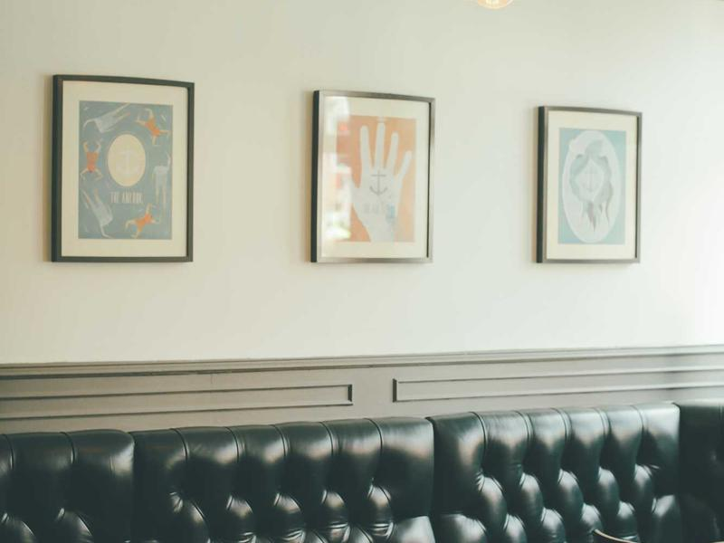
皆さん、こんにちはー！今日も今日とてバイトからのネタ作り！太田プロ所属の若手ピン芸人、ちゅんちゅんでーすっ！🐥💕
いやぁ、最近本当に夜風が冷たくなってきましたね！🥶 私のバイト先のコンビニでは、おでんの季節が本格的に到来しましたよ！🍢 おでんって、なんであんなに美味しいんでしょうね…ついつい誘惑に負けて、はんぺん食べちゃいます（小声）。
さてさて！そんなちゅんちゅんの日常に、ビッグウェーブが押し寄せてきました！！
聞いてください皆さん！！
なんとーっ！！以前からお話ししていた、大大大先輩ブラックパイナーSOSの山野さんと内藤さん（輝彦さん！）とご飯に行く日、ついに！ついに！
**具体的な日程が決まりましたーっ！！！！！**
ひゃっほーい！🎉
もうね、事務所のマネージャーさん経由で「〇日の夜で調整つきました！」って連絡が来た瞬間、レジ打ちの手が止まりましたもん！ピーッ！って鳴るはずのバーコードが、私の心臓の音で消えましたよ！ドッキドキ！
山野さんから「何食べたい？」って連絡をいただいたんですけど、あまりにも恐縮すぎて「なんでも大丈夫です！ブラパイさんが食べたいものが食べたいです！」って、もう意味不明な返答しちゃいましたよね😂
そしたら山野さんが「はは、そうか。じゃあ俺らが美味しい店知ってるから、そこ行こうか」って！ひええええ！プロの選ぶお店ー！？絶対美味しいやつー！
内藤さんは、そのやり取りのLINEを横で見てたのか、後で稽古場ですれ違った時に「ちゅんちゅん、お前、それじゃ何も伝わらねーだろ」ってボソッと。ひええええ！愛のあるツッコミありがとうございますぅぅぅう！😭✨
もうね、決まってからはその日のことしか考えられなくて！
バイト中も、皿洗いしながら「このお皿、ブラパイさんがご飯で使うお皿だったらどうしよう…！」とか妄想したり、ネタ作ってても「このネタ、ブラパイさんに面白いって思ってもらえるかな…」とか、もうね、全部ブラパイさん中心に回ってる！😂
で、ですよ！前回のブログでもお話しした「ちゃんとした服がない問題」が、いよいよ本格的に勃発しております！🚨
私のクローゼット、Tシャツとパーカーとバイトの制服しか入ってないんですよ！これじゃあ、まさか大先輩とのご飯にユニフォームで参加するわけにはいかないし…！
とりあえず、バイトの休憩中に古着屋さんを覗いてみたんですけど、「これも可愛いけど、ブラパイさんとご飯に着ていくにはちょっと違う…？」「いや、そもそもこれブラパイさん関係なく普段着だよな…？」って、無限ループにハマって買えませんでした！うう、センスと財力が欲しいぃぃぃ！💸
当日は、緊張しすぎて何もしゃべれなかったらどうしよう…！
メモ帳に「ブラパイさんへ聞きたい100の質問」を書き出してるんですけど、これ全部聞いたらウザがられないかな！？
もう、不安と期待で胸がいっぱいです！でも、この貴重なチャンス、絶対絶対無駄にはしませんからね！
ブラパイさんから、芸人としての「生き方」とか「考え方」とか、もう全部吸収してきます！
ちゅんちゅん、このご飯会で大きく成長して、いつかブラパイさんの前で胸張って「売れました！」って報告できるよう、もっともっと頑張ります！！
またご飯の日のご報告もしますね！応援よろしくお願いしますー！
それじゃ、またねー！バイバイキーン！🐥💨
皆さん、こんにちはー！太田プロ所属のピン芸人、ちゅんちゅんですっ！🐥✨
最近、朝晩がちょっと涼しくなってきましたね！私はいまだに夏服で風邪ひきそうになってます！アホ丸出し！😇
いやー、今日も朝からコンビニバイトからの、夕方までずーっとネタ作りの日々ですよ！
ネタ帳とにらめっこしては「これ、どこが面白いんだ…？」って自問自答を繰り返す毎日…売れる気配ナシ！
でもね！そんな私にも、とんでもない朗報が舞い込んできたんです！！
なんと…あの！！
大先輩、ブラックパイナーSOSのお二人と、近々ご飯に連れて行ってもらえることになったんです〜！！🍚🙌
もうね、話聞いたとき、心臓飛び出すかと思った！いや、たぶん一回飛び出してまた戻ってきた気がする！！
ブラパイさんといえば、太田プロのレジェンド、芸歴31年ですよ！？
山野さんの独特すぎるボケと、内藤さんのあのキレッキレのツッコミ…！もう神話の世界の人たちだと思ってましたもん！
今まで、事務所の稽古場で遠くから「あっ、ブラパイさんだ…！」ってドキドキしながら挨拶するだけだったんです。
でも、最近はすれ違うたびに「ちゅんちゅん、元気か？」とか「ネタ書いてるか？」って声かけてくださるようになって…😭
特に内藤さんは、私がネタ作りに煮詰まって唸ってるときに、「そんな顔してたら面白いの生まれないぞ！」って笑って励ましてくださって…！
あんな優しいツッコミ、私にも欲しい！いや、私がツッコむ側か！
で、ですよ！先日、稽古終わりに山野さんが「ちゅんちゅん、頑張ってるみたいだから、今度飯でも行くか！」って言ってくださったんです！！
私、一瞬何言われたか分からなくて、とりあえず「はいっ！！」って大声で返事しました！
興奮しすぎて、帰り道で電柱にぶつかったのはここだけの秘密です…🤕
もう、何話そうかな、どんなお話聞けるかなって、今からワクワクドキドキが止まりません！
ブラパイさんのお笑いに対する姿勢とか、長年第一線で活躍されてきた秘訣とか、いっぱい質問攻めにしちゃおーっと！
私もいつか、ブラパイさんのように、たくさんの人に笑いを届けられる芸人になりたい！
そのためにも、今はひたすらバイトして、ひたすらネタ書いて、ひたすら頑張るのみです！
このご飯会をバネに、ちゅんちゅん、もっともっと跳ね上がってみせますからね！！🚀
またブラパイさんとのお話、このブログでご報告しますねー！
今日のちゅんちゅんは、期待で胸いっぱい！最後まで読んでくれてありがとうございまーす！
それじゃ、またねー！バイバイ！👋

皆様、ごきげんよう！ちゅんちゅんですっ！
今日も元気モリモリ！バイトのシフトとネタ作りで、頭の中は常に「うー、うー」唸ってます！脳みそが筋肉痛になりそう🤣笑
さてさて、今日はご報告がありますー！
なんと！太田プロの大大先輩、ブラパイさんことブラックパイナーSOSの山野さんと内藤さん（輝彦さん！）と、近々ご飯に行っていただくことになりましたーっ！ひゃっほーい！🎉
もうね、夢みたいです…！
いつも事務所の稽古場で、先輩方の後ろ姿を拝むのが日課だったちゅんちゅんですが、最近は少しずつご挨拶させていただくようになってて。山野さんはいつも「お、ちゅんちゅん、今日なんか顔白いな？ネタやってるか？」って、優しく声をかけてくださるんです！優しさの中にビシッと愛のあるツッコミ！さすがッス！✨
内藤さんは、独特のオーラでいつも静かに見守ってくださってて…先日なんか、私がネタ合わせで壁に向かってブツブツ言ってたら、「ちゅんちゅん、なんか、いい意味で変だな」ってボソッと。もう！最高のご褒美です！ありがとうございます！🤣🤣
そんなブラパイさんのお二人に、先週、たまたま事務所の廊下でお会いした時に、勇気を出して「いつも舞台拝見してます！本当に尊敬してます！」って伝えたら、山野さんが「お、そうか。じゃあ今度、飯でも食いに行くか？」って！えええええええええっ！？！？🤩
その場でちゅんちゅん、変な声出ました。「えっ、あ、はいっ！ぜひ！あの、はい！ありがとうございますっ！」って、もう語彙力ゼロ！自分でも何言ってるか分かんなかったけど、お二人は「ははは」って笑ってくださって…神様仏様ブラパイ様ー！🙏
もう、嬉しくて嬉しくて、その日はバイトで皿洗いしながらずっとニヤニヤしてました。バイトの店長に「ちゅんちゅん、今日なんか嬉しそうだけど、彼氏でもできたのか？」って聞かれましたが、「はい！とんでもない大先輩とデートの約束できました！」って答えたら、「お、お、そうか…」ってちょっと引いてましたね。え、なんで？！笑
ご飯では、売れない若手が聞きたいこと全部聞いちゃおうと思ってます！
ネタ作りの秘訣とか、舞台での立ち振る舞いとか、あと…どうやったらブラパイさんみたいに、長く愛される芸人になれるのか…！もう、聞きたいことありすぎて、今からメモ帳パンパンです！📝
ブラパイさん、本当にありがとうございます！ちゅんちゅん、先輩方に恥じないように、これからも一生懸命頑張ります！売れます！💪
またご飯の報告もしますねー！応援よろしくお願いしますっ！
それでは、ちゅんちゅんでしたー！またねー！バイバイキーン！👋

ちゅんちゅんでーす！今日も元気にお給料のためにバイトからのネタ作りだよー！💪
いやー、最近本当に寒くなってきましたね！🥶 でも私の心は、今日も熱く燃えております！ネタ作りに！…じゃなくて！！
聞いてください皆さん！ビッグニュースです！！
太田プロに入ってから、もう何年も前からずーっと背中を追いかけてる大先輩、ブラックパイナーSOSのお二人！山野さんと内藤さん（輝彦さん！）✨
事務所の稽古場とかで会うたびに「おはようございます！」「お疲れ様です！」ってご挨拶させていただいてたんですけど…
それが最近！なんですけど！！少しずつお話しさせていただく機会が増えてきて…！
「ちゅんちゅん、最近どう？」とか「ネタ書いてる？」とか、気さくに声かけてくださるようになって…😭✨
もうね、それだけで私にとっては夢みたいな出来事だったんですよ！
で！でででで！！昨日！山野さんからまさかの！！
「ちゅんちゅん、今度みんなでご飯行こうか」って！！！！！
…え？幻？夢？私、寝てる？って本気で耳疑いましたよね😂 いや、まさかこんなペーペーのちゅんちゅんが、大先輩のブラパイさんとご飯なんて…！
すぐさま内藤さんにも「ありがとうございます！よろしくお願いします！！！」って頭下げちゃいましたもん！嬉しすぎて！
ブラパイさんのお二人のネタ、本当に大好きなんです！あの緩急と間、何回見ても笑っちゃうし、毎回「うわー！プロだー！」って感動してます✨
いつか私もあんな風に、お客様を魅了できる芸人になりたいって、ずーっと思ってるんです！
そんな大先輩とご飯なんて…！絶対私、緊張しすぎてご飯喉通らないやつー！🍚🙅♀️
まあ、それ以前にちゃんとした服がない問題が勃発してるんですけどね！ユニフォーム（バイト着）しか勝たん！って言ってる場合じゃない！👕💦
せっかくいただいた貴重な機会、いっぱいお話し聞かせてもらって、芸人としての栄養にさせていただきます！🔥
しっかりご飯食べて、ブラパイさんにも覚えてもらえるように、爪痕残すぞー！！って、ご飯でどうやって爪痕残すんだ私！？
まあ、まずは緊張しすぎて白目むかないように頑張ります！🤪
またご報告しますねー！応援よろしくお願いします！ちゅんちゅんでしたー！🐥💕
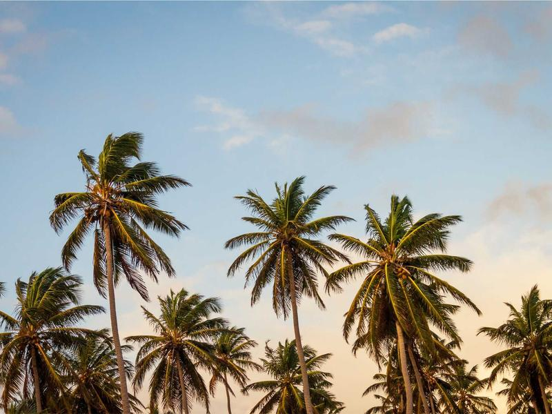
ちゅんちゅんブログ、今日も元気に更新するよー！
みんな、お疲れ様ー！私は今、体中から揚げ物の匂いがする女、ちゅんちゅんですっ！🤪
今日はね、いつもの居酒屋バイトだったんだけど、もうピークタイムのフライヤーとの死闘がやばかったの！⚔️ 油がピチピチ跳ねるたびに「ギャー！」って叫びそうになるのを、必死に「いらっしゃいませー！」でごまかしてたよ。だって、お客さんの前じゃ芸人としてじゃなくて、店員として完璧でいたいじゃん？（無理だけどな！笑）
で、バイト終わってフラフラになりながらスーパー寄ったのね。
「なんか今日の自分、頑張ったからご褒美欲しいな〜」って思いながら、真っ先に半額シールコーナーにダッシュ！🏃♀️💨
そこで見つけたの、大好きなプリンがまさかの半額！！
「やったー！神様は見てる！今日の揚げ物地獄は、このプリンのための試練だったんだ！」って、小声でガッツポーズしちゃったよね。周りの主婦の方々に、きっと「この子、何と戦ってんの？」って思われてたと思うわ。😂😂
意気揚々と家に帰って、冷蔵庫開けたんですよ。ウキウキでプリン入れようとしたら…
まさかの…
「ちゅんちゅん、去年の夏に買ってから存在忘れてたゼリーが鎮座してる！！！！！」
ぎゃーーーーーー！！😱😱😱
しかもそのゼリー、とっくに賞味期限切れてるやつ…
冷蔵庫パンパンで、半額プリン入れるスペースがどこにもないじゃん！
頑張った自分へのご褒美が、まさかの賞味期限切れゼリーの衝撃事実発覚からの「半額プリンを置く場所がない」という悲劇で終わるとは…
こんなん、ネタにしたくてもスベりそうでできないわ！😭😭
でもね、こんな日でも笑い飛ばせるのがピン芸人、ちゅんちゅんです！
とりあえず、ゼリーは泣く泣くサヨナラして、明日はプリンのために冷蔵庫の断捨離から始めるぞー！🔥
みんなも、冷蔵庫の奥底に眠ってる過去の遺物には気をつけてね！笑
また明日も頑張ろうね〜！バイバイ！👋
#ちゅんちゅんブログ #太田プロ #若手芸人 #バイト芸人 #半額ハンター #冷蔵庫あるある #明日はプリンのために
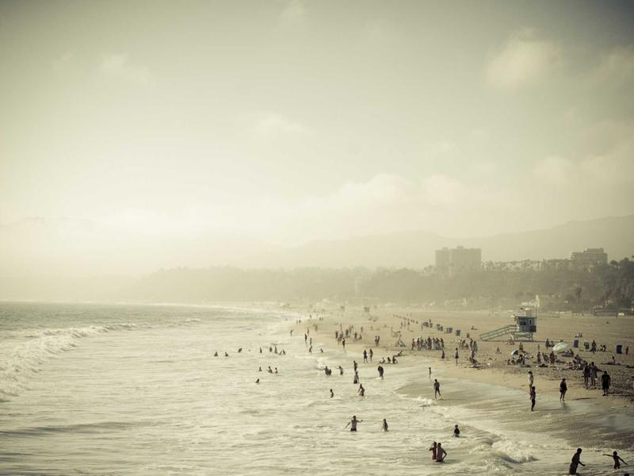
ちゅんちゅんブログ、今日も元気に更新するよー！ちゅんちゅんですっ！
今日はね、いつものコンビニバイトの日だったんだけど、ちょっと面白い（いや、芸人としては複雑な）出来事があったのよ！😂
お昼時、レジ打ちがピークでバタバタしてたら、常連のおじいちゃんが「あんた、テレビで見たことあるような…？頑張りなさいね！」って言ってくれたのー！
え、まさか私に…！？って、まだ全然有名じゃないんだけどね😂 でも「応援してます！」って言ってもらえて、めちゃくちゃ嬉しかったんだー！おじいちゃん、まさか太田プロの若手ライブ観てくれたの…？それともYouTubeの再生回数100回くらいのネタ動画…？どっちにしろ感謝感激雨あられ！ありがとう、おじいちゃん！
…って、その数分後。
今度は若いカップルさんが来て、私がポイントカードの説明してる時に、彼氏さんが彼女さんに「新人さんかな？まだ慣れてないみたいだね」ってささやいてるのが聞こえちゃったのー！😱
いや、もうこのコンビニ勤めて半年経ちますけど！？ベテランだよ、ベテラン！商品の配置なら私の方が詳しいんだからね！😤 おじいちゃんの応援が霞んでいくじゃないか…！
芸人の知名度も、コンビニ店員としての熟練度も、まだまだってことですかね、ちくしょう！😭
バイト終わってからは、カフェでネタ作りしてたんだけど、私の脳みそ、きっとネタじゃなくて割引シールの貼り方でいっぱいになってるわ…。今日も天才的なネタは生まれなかったけど、まあ、明日があるさ！
いつか、私のライブに来てくれたお客さん全員が、私を見て「あ、あのコンビニのベテラン店員さんだ！」ってざわつくくらいにはなりたいな…って、どっちの目標だよ！🤣
まあでも、今日も前向きに頑張ったってことで！💪
みんなも一日お疲れ様！またねー！🌟
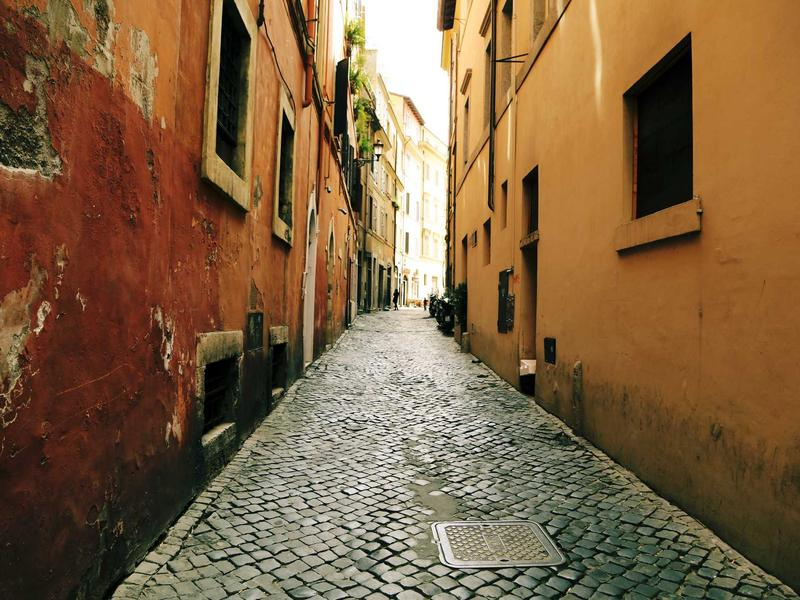
みんな〜！ちゅんちゅんだよー！✨
今日も朝からカフェバイトで、笑顔と「いらっしゃいませー！」を振りまいてきたよん☕️
ドリンク作るスピードはもはやプロ級！芸人よりバイトスキルの方が高いって、どうなのこれ！？笑
でね、いつも思うんだけど、「あれ、この人見たことあるな…？」みたいな顔して私を見るお客さんがたまにいるんだよね。
そのたびに心の中では「もしかして！ちゅんちゅん知ってくれてる！？太田プロの若手ピン芸人、ちゅんちゅんを！？」って超期待するんだけど、大体「あ、すみません、人違いでしたね」って言われるよねー！😂
なんで！？私の顔ってそんなに街中に溢れてるの！？『一般人あるある』すぎて、もう泣ける…！売れてない芸人の宿命かな…ぐすん。
休憩時間はもちろん、ネタ帳と睨めっこ！φ(._.)
周りの人は美味しいコーヒー飲んでまったりしてるのに、私だけ必死で「どうしたらウケるか…！？」ってウンウン唸ってるの、なかなかシュールだよね😅
隣の席の女子高生が「マジやばいんだけど〜！」って話してるのを盗み聞きして、「え、それネタにできない！？」って思っちゃうあたり、もう職業病っていうか、お笑い脳が染みついちゃってるよね、こわっ！💪
今日も結局、「これだー！！」っていう爆笑ネタは生まれなかったんだけど、なんかモヤモヤした感覚だけは掴めた気がする！…って、それってネタじゃないじゃん！笑
でも、このモヤモヤをどうにか形にするのが、芸人の腕の見せ所だもんね！
まだまだバイト漬けのちゅんちゅんですが、いつかカフェじゃなくて、武道館とかで「ちゅんちゅんです！」って堂々と言えるように、明日も頑張るぞー！💖
その時は、みんなもぜひ「あ、この子、あの時のカフェの店員さんだ！」って言いに来てね！笑
応援よろしくねっ！
バイバイちゅんちゅん！👋
みんなー！ちゅんちゅんだよー！☀️
今日は朝からカフェバイトだったんだー！「いらっしゃいませー！」って元気に言ってるけど、私の心の中では「ちゅんちゅん芸人、いつでも全力でボケ待ちしてまーす！」って叫んでるからね！もちろん誰にも聞こえないけど！🥺
カフェってさ、いろんなお客さんが来るからネタの宝庫だと思わない！？
今日ね、すっごく素敵なカップルが来てたんだけど、彼氏さんが彼女さんの頼んだカフェラテの泡を鼻につけてて、彼女さんが「もー、しょうがないんだから！」って笑いながら拭いてあげてたの！
あの瞬間、私の脳内では「ちゅんちゅん、泡つきツッコミやってみた！」っていう架空のネタが爆誕したんだけど、もちろん披露する場所はない！悲しみ！😂
私もいつか「もー、ちゅんちゅんってば、しょうがないんだから！」って言いながら、私のスベったネタを笑って許してくれる相方…じゃなくて、お客さんが欲しいよぉおおお！
バイトが終わってからも、もちろんネタ作り！📝
カフェでの出来事をメモしたり、思いついたワードを書き出したり…
でもさ、面白いことって、意識すればするほどスルスルと指の間から逃げていくのなんでだろうね？ 才能がフワちゃんみたいに自由奔放すぎるのかしら？（フワちゃんごめんなさい！🙇♀️）
もうね、家のソファにゴロゴロしながら天井見上げて「あー、面白いこと降ってこないかなー」って毎日言ってるよ。
「もっと机に向かって真面目に考えろよ！」ってツッコミは、今、私が自分自身にしてるから、みんなはしなくていいからね！🙅♀️
でもね、諦めないよ！💪
いつか絶対、あのカフェのカップルみたいに、私のネタでみんなを笑顔にできるピン芸人になるからね！
その日まで、ちゅんちゅんを応援しててくれると嬉しいなっ！
じゃ、またねー！ばいちゅん！🐦💕

みんなー！ちゅんちゅんだよー！
今日も元気にバイト終わり！居酒屋のフロア、走り回ったぜ！🏃♀️💨
ピークタイムの皿洗い、まるでネタのフリとツッコミの連続みたいだったなぁ…って、そんなこと考えてるから皿が滑るんだよ！危ない危ない！
まかないの唐揚げが唯一の癒しだよ、ホント。あれでまた明日も頑張れる…てか、まかない目当てで働いてるとか言わないでよね！ネタのためだから！絶対！！
バイト帰り、スーパー寄ったらね、ピーマンが特売で98円！やったー！🎉
ピーマンって優秀だよね、なんにでもなるもん。私みたいにね！ってやかましいわ！まだ何にもなれてないわ！！😂
帰って早速、ネタ帳広げて、横でピーマン切って…なんか今日、ピーマンに語りかけてたんだよね。『お前もいつか主役になれるぞ…いや、私は主役になれるぞ…！』って。危ない危ない、完全にイッちゃってるわ、私。もはやピーマンと同期の芸人だと思ってる節ある。
結局、ピーマンは肉詰めになったんだけど、肝心のネタは…まだ半熟卵状態🥚 今日も孵化せず…！
でも、こんな毎日も、きっといつか笑い話になるんだ！そう信じて明日も頑張るちゅんちゅんです！
みんなも、明日も一日がんばちゅんちゅん！✊✨
みんな〜！ちゅんちゅんだよ〜！🐣✨
今日はね、朝から晩までカフェバイトだったんだけどさ、もう毎日がネタの宝庫！🤣
お客さんに「今日のおすすめ、笑顔で」って言われて、「え、メニューにねーし！むしろいつも全力笑顔なんですけど！？」って心の中で全力ツッコんだよね。これもいつか漫談になるかな…いや、ならねーだろ！笑
あとは、新作のフラペチーノ、レジでオーダー聞いてる間に脳内で無限大ネタ変換始まって、泡だて器がツッコミ棒に見えてきたもんね！危ない危ない、思わず「お前がツッコミか！」って叫びそうになったわ！店長に怒られちゃう！😱
で、バイト終わってへとへとで帰ってきて、それでも机に向かうのが芸人の性ってやつですよ！✒️ネタ帳広げたはいいけど、ペンが進まないのなんのって…。
「私って何がおもしろいんだろ…」って、もう100回は言ってる気がする。これ言ってるのが一番おもしろいって言われたら、それもうネタじゃないじゃん！ってね😇
同期がテレビで楽しそうにネタやってるのを見ると、たまーに「あれ？私、何してるんだっけ？今日カフェラテ100杯作っただけだよな？」ってなるけど、いやいや、ここでめげてる場合じゃない！😤
まだ見ぬファンが、私のこと待ってるはず！…多分！笑
いつかあの舞台に立つんだ！って気持ちだけは誰にも負けないから！💪今日も小さい一歩、踏み出したんだぞ、私！
というわけで、今日も一日お疲れちゅんちゅんでした！🐣みんなもゆっくり休んでね！また明日もがんばろーね！コメントとか、いいね！とか、応援してくれるとちゅんちゅん喜びますっ！🤩
ばいちゅん！
みんなー！ちゅんちゅんだよー！✨
今日はね、いつものカフェバイトからスタートしたんだ！☕️
ちゅんちゅん、最近ラテアート練習中なんだけどさ、今日は見事に『何か液体がこぼれた後』みたいな模様になっちゃってさ😂
お客さん、一瞬フリーズしてたよね？いや、あれはアートだってば！斬新なね！笑
でね、お会計の時に『あれ？ひょっとして芸人さんですか？どこかで見たような…』って言われたんだけど…
『いえ！ただのカフェ店員です！今日も元気にいらっしゃいませー！』って秒速で返したよね！💦
いや、芸人なんですけどね！売れてないだけなんですけどね！まだ顔と名前が一致しないレベルなんですけどね！😭
もう少し売れたら『あ、はい！ちゅんちゅんです！』って堂々と言える日が来るんだろうなー…遠い目🥺
バイト上がりでそのまま喫茶店直行！ネタ帳と睨めっこタイム開始ー！📚
周りはカップルとか友達とか楽しそうにお喋りしてるのに、私の目の前には『面白い』という名の壁がそびえ立ってる…高すぎる…！エベレストかよ！🗻
今日あった出来事をネタにしようと奮闘するも、ラテアート失敗の話とか、芸人バレしなかった話とか…あれ？これ、ブログのネタにはなるけど、漫才とかコントにはなりにくい気がするぞ？🤔
あ、でも『芸人って思われたけど、売れてないから秒で否定する女』っていうキャラは面白くない？
いや、これは自虐がすぎるか！🤦♀️
ああ、いつか『あの面白いカフェ店員、ちゅんちゅんって芸人だったんだ！』って言われる日が来るように…いや、バイト中に気づかれたい！😂
明日もライブに向けてネタ練頑張るぞー！💪
みんなもコメントとか応援メッセージとか、ちゅんちゅんに愛をくださーい！💖
それじゃあ、またねー！バイバイちゅんちゅん！👋
みんなー！元気ー？！
ちゅんちゅんですー！！✨
今日はね、いつものカフェバイトだったんだけどさ、もう身体がカフェインでできてるんじゃないかってくらいコーヒー淹れまくったよ😂
ランチタイムのピーク、もうひたすら「ラテ」「アメリカーノ」「カプチーノ」って呪文のように唱えながら豆を挽いてたら、脳内でM-1の出囃子が流れ出しちゃって！
危うく「はい、お待たせしました！ちゅんちゅんでーす！！よろしくお願いしまーす！」ってコーヒー出しちゃうところだったわ。お客さん困惑するわ😂
でね、今日のお昼休憩中、M-1の予選に向けて新ネタの構成考えてたの📚
そしたらさ、隣で休憩してたベテランのパートさんが、私のネタ帳を覗き込んで「あら、お絵描き？若いっていいねぇ」ってニコニコしててさ…
いや、これ命懸けの戦場マップなんですけど？！
ここから未来のスター芸人が生まれるかもしれない設計図なんですけど？！
って心の中で激しくツッコんだよねッッッ！！😭
でも、いつかあのパートさんが私のことテレビで見て、「あら！あの子、あの時の！コーヒー入れてくれた子！」って言ってくれる日を夢見てるから、今日も私はひたすらコーヒー豆を挽き、お笑いの種を蒔き続けるのだ…！🔥
バイト終わって鏡見たら、なんかカフェインと疲労で顔がゲッソリしてて、これが売れない芸人のリアルか…ってちょっとだけ泣いたのは秘密だよん（笑）🤫
それでも、舞台に立って爆笑取れる日が来るまで、ちゅんちゅんは諦めないぞー！
みんな、応援よろしくねー！コメントも待ってるよー！
またねー！👋
#ちゅんちゅん #太田プロ #ピン芸人 #カフェバイト #売れたい #M1頑張る #お笑い大好き
皆さん、こんばんはー！太田プロ所属のぴんぴんピン芸人、ちゅんちゅんですっ！元気ー？！
今日はねー、居酒屋バイトだったんだけど、なんと！まかないが激豪華だったんですー！🍣🐟
板長さんが「ちゅんちゅんちゃん、いつもありがとな！」って、握り寿司と海鮮丼、あと唐揚げまで出してくれて…！もうね、私、一瞬だけ宇宙旅行に行ってきたかと思ったもん！あの輝き、無重力空間で食べるご馳走の味…って、行ったことないけど😂
でもね、残念ながらこの地球では、その豪華まかないだけじゃ来週まで生き残れないのよ、フフフ…😇💸
給料日まであと3日！お茶碗に残ったお米一粒まで大切に食べる日々が続いております🍚✨
バイト終わって、帰ってきてからはひたすらネタ作り！
この前ライブで滑りまくったからね…もうあの「無」の客席は二度と見たくない！😭
新しいボケ、ひねり出したはいいんだけど、「あれ？これ、誰かのネタで聞いたことあるような…？」ってなるあるあるに遭遇しまくりで頭抱えてるなうです🤷♀️
オリジナリティってどこに売ってるの？誰か教えてー！
でも！M-1もR-1も、夢はでっかく！いつかあのデッカい舞台に立つんだから！
そのためには、このちっちゃい部屋でひたすらネタと向き合うしかないんだよねー！
まかないの恩恵を胸に、明日も頑張るぞー！💪
皆さんも、美味しいもの食べて、明日も笑顔で過ごしてね！
おやすみー！また明日ねー！💖

みんなー！ちゅんちゅんだよー！☀️
今日も一日お疲れ様でした！ちゅんちゅんはね、今日はお昼からカフェバイトだったんだ！☕️
もちろん、いつものスマイル0円（たまに焦って引きつる）でがんばってきたよっ！💪
そしたらね、注文取りに行ったお客さんがさ、「ホットコーヒー、Mサイズで、砂糖とミルクは…」って言いかけて、急に「あ、やっぱやめた！アイスコーヒーのLで！」って！😂
もう！急展開すぎでしょ！私の脳内、一時停止したわ！🤣
お客さんの言葉、一音一句ちゃんと聞くようにしてるのに、まさかの途中変更とは！私の耳、信じらんない！👂
これ、絶対ネタになるやつじゃん！って思って、休憩中にコソコソとネタ帳にメモしようとしたら、店長に「ちゅんちゅん、何してるの？」って怪しまれた…！😨 はっ、いけないいけない、芸人魂出すのは営業時間外にしろってね！😇
でもね、こんな日常のちょっとした出来事からネタって生まれるんだよね！✨…って、毎回期待するんだけど、なかなか爆笑には繋がらないのがちゅんちゅんクオリティ！ﾄﾎﾎ…😭
今日もバイト終わってからネタ帳と睨めっこ！✍️ 『急な注文変更を華麗に対応する店員』…からの、『実は裏でテンパってる店員』…みたいな？どう？いける？いけるか？！
早くね、バイトじゃなくて舞台でキャーキャー言われる芸人になりたいなぁ…なんて夢見ながら、また明日もカフェで笑顔を振りまいてくるよっ！💖
売れるその日まで、ちゅんちゅんは元気いっぱいがんばるからねー！💪
応援よろしくっ！ばいちゅんちゅん！👋
皆さんちゅんちゅんです〜っ！🥳
今日も一日お疲れ様でした！私はカフェバイトからの帰り道、へとへとすぎて今にも溶けそうだったんですけど…！
スーパーに寄ったらなんと！なんとですよ皆さん！
**もやしが19円でした〜〜〜！！！✨**
店内で「マジかよっ！やったー！」って叫びそうになったのを必死で抑えましたよ😂
だって19円ですよ！？19円で今日の晩御飯がほぼ確定！ありがとうもやし！あなたは私の救世主！
…って、こんなことでテンション上がってるの、私くらいのもんかなぁ〜ってふと冷静になりました🤦♀️💦
売れっ子芸人さんなら「今日の晩御飯は高級焼肉〜！」とか言ってんのかな？
ちゅんちゅんはもやしで大歓喜！これが現実！これが若手芸人！ドンマイ私！🤣
でもね、思ったんですよ。
この「もやし19円で全細胞が震える女」って、もしかしてネタになるんじゃね！？💡
そこから広げて、R-1の決勝ステージで「もやし19円の喜び」を全身で表現するちゅんちゅん…！
…って、安易な妄想は一旦置いといて、ちゃんとネタ作りに励みます！💪
毎日バイトして、毎日ネタ考えて、たまにもやしで喜んで！
この地道な日々がいつか報われると信じて、ちゅんちゅんは今日も頑張ります！
皆さんも、ちゅんちゅんのこと応援しててくれたら嬉しいな〜！💖
またねー！バイバイ！👋
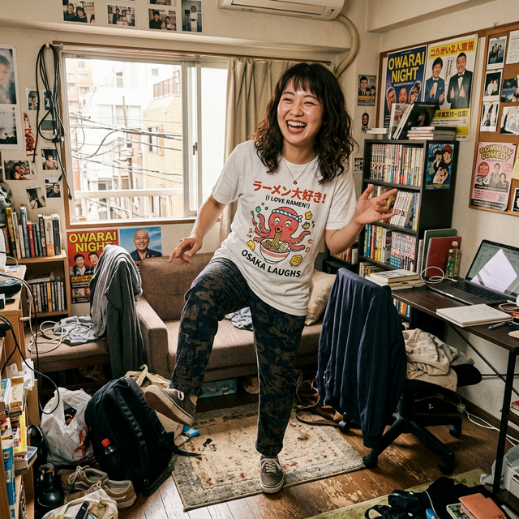
こんにちは〜！太田プロ所属のちゅんちゅんです！🐣
今日は朝から居酒屋のバイトだったんですけど、店長に「お前、オーダー取る時もスベってんな」って言われました。やかましいわ！😂（笑）
でも大丈夫！賄いの唐揚げでパワーチャージして、今はアパートで新ネタ書いてます。次のオーディションこそは絶対受かるぞ〜！
皆さんも今日一日お疲れ様でした！明日も頑張りましょうね〜！